OneReason 技术报告
摘要
OneRec 系列的生成式推荐模型已广泛部署于短视频、直播、广告和电商等真实业务。 然而，这些生成式模型只能受益于规模扩展优势，其推理能力却难以激活，因为我们无法仅使用物品语义 token 构造有意义的思维链（CoT）序列。 受到大语言模型领域“先思考、后回答”推理范式成功的启发，我们开展了初步研究（即 OneRec-Think、OpenOneRec），探索生成式推荐中的推理能力。 然而，我们注意到一个出乎意料的现象：思考模式相较于非思考模式并未表现出优势。 借鉴多模态语言模型中有关 CoT 稳健性的近期发现，我们认为，有效的推荐推理依赖两个因素：感知，即将物品语义 token 与其背后的语言语义建立关联的能力；以及认知，即将用户行为序列重组为连贯的潜在兴趣点的能力。 因此，我们提出 OneReason，包括：(1) 在预训练中建立较强的物品语义 token 感知能力；(2) 在 SFT 中为推荐任务设计三层认知增强的 CoT 格式；(3) 在 RL 中采用先专精、后统一的训练方案，增强思考能力。 借助上述技术，OneReason 成功使思考模式在快手多个真实业务基准上优于非思考模式。 此外，我们观察到一个有趣现象：用具有 CoT 监督的数据替换 unCoT 推荐数据，可以改善多个领域的非思考推断表现。这表明，CoT 监督的部分收益可能迁移至直接解码，但目前证据属于行为层面，本身无法确定效果究竟来自压缩、推理，还是二者的交互。 最后，我们系统介绍一系列推理基准与设计经验，并将开源 OneReason-8B 和 OneReason-0.8B 模型，以促进生成式推荐模型研究。

1 引言
近年来，基于 Transformer 的大语言模型（LLM）将机器智能的前沿推进到前所未有的水平。 在大规模计算和先进训练方法的推动下，LLM 逐渐展现出两种令人振奋的特性，为构建更强大的模型提供了指引：
- •
-
•
后训练中的推理特性：在预训练之后，后训练阶段通过高质量监督微调（SFT）和强化学习（RL），进一步释放并完善模型的高级能力 (Ouyang et al., 2022; Shao et al., 2024; Zheng et al., 2025; Yu et al., 2025)。 在这些后训练技术的推动下，LLM 学会遵循 CoT 式过程 (Wei et al., 2023; Kojima et al., 2023)，形成“先思考、后回答”的推理范式。 这一范式显著增强了模型解决复杂、深入问题的能力，OpenAI o1 (Jaech et al., 2024) 和 DeepSeek-R1 (Guo et al., 2025) 系列就是代表。
受到 LLM 的规模扩展与推理特性的启发，我们十分好奇：能否进一步利用这两种特性，推动工业推荐系统的能力提升。 在这一动机的驱动下，我们开始了一系列探索。 对于规模扩展特性，我们的 OneRec V1/V2 系列生成式模型 (Zhou et al., 2025b, d) 已验证了工业推荐场景中的规模扩展特性，为快手带来了显著业务收益。 对于推理特性，我们认识到，由推荐数据驱动的 OneRec 模型无法自行释放推理能力。 由于 OneRec 模型仅在纯物品语义序列数据上训练，它只学到了扁平的转移模式，而没有任何底层逻辑思考轨迹。 为了激发推理能力，我们近期的 OneRec-Think (Liu et al., 2025) 和 OpenOneRec (Zhou et al., 2026) 模型探索了引入物品语义与文本交错的推荐数据，以及通用领域推理数据。 在这两个模型中，我们成功观察到，“先思考、后回答”的模式能够泛化到推荐任务，使我们可以检查模型的内在逻辑，理解用户兴趣以及下一物品预测背后的理由。 然而，我们也注意到一个出乎意料的现象：在推荐基准上，思考模式相比非思考模式并未显示出显著优势。
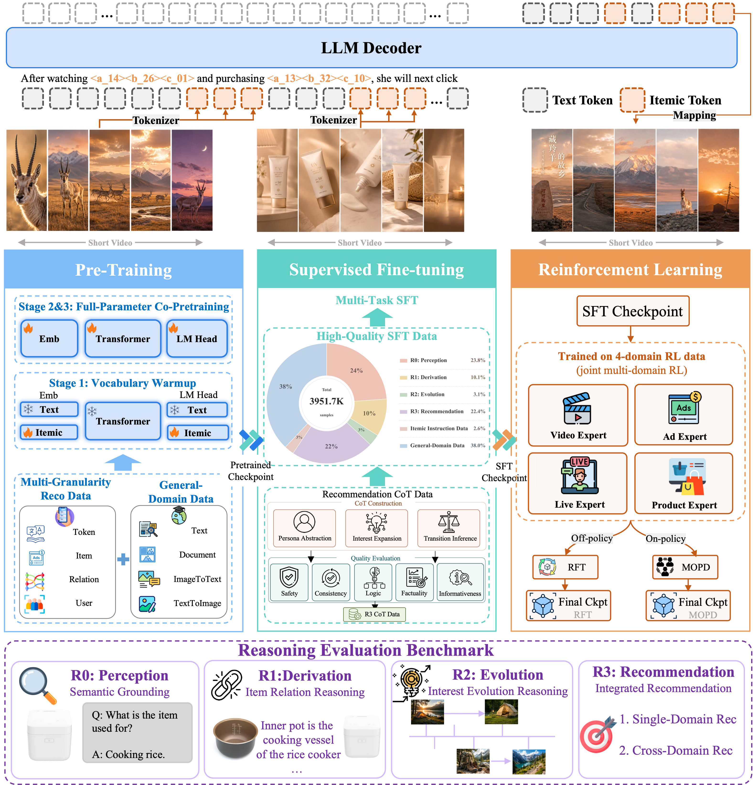
Question: How many complete fruits are there?
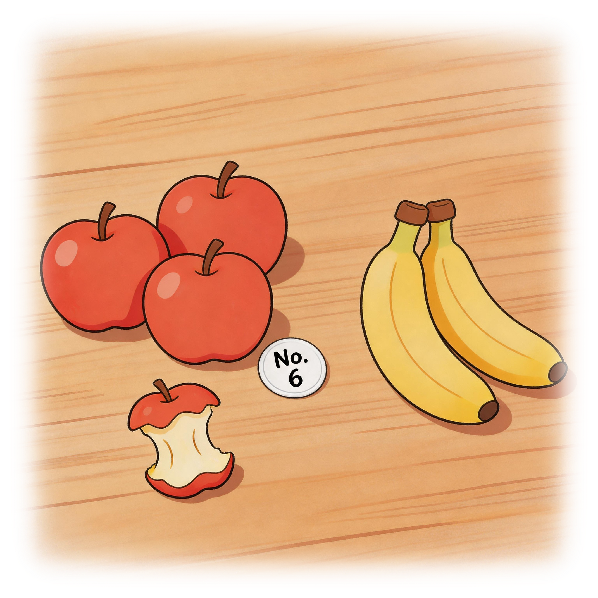
(a) Alignment Failure
✗ Answer: 6
"I see 4 apples and 2 bananas. So answer is 6."
Cause: Misperceived objects; weak visual grounding
(b) CoT Quality Failure
✗ Answer: 6
"3 apples + 2 bananas = 5. But apple core & No. 6 suggest 6 originally. Answer: 6."
Cause: Perception OK but faulty reasoning chain
(c) Robust Reasoning
✓ Answer: 5
"3 apples + 2 bananas = 5. Core & tag are irrelevant."
Key: Deep alignment + logical CoT
为探究这一意外现象的根本原因，我们转向多模态大语言模型（MLLM）文献，其中也观察到了十分相似的推理模式脆弱性。 (Sun et al., 2026b) 揭示，当文本模态和视觉模态未充分对齐时，模型往往机械地“读取”视觉表层文字，而未真正对其背后的视觉语义进行推理，这有力地表明，深度跨模态对齐是真正思考的前提。 在这一见解的基础上，(Zhou et al., 2025a) 系统梳理了 MLLM 中从感知到认知的路径，并得出结论：如果没有先建立稳健的模态间感知对齐，就无法涌现高级交互推理能力。 基于这一对齐基础，Jiang et al. (2025b) 进一步表明，即使模态已经对齐，推理的稳健性依然脆弱，除非精心组织 CoT 轨迹本身，具体而言，需要采用逻辑连贯、由粗到细的推理格式，以防止幻觉和过度思考。
综合来看，这些工作共同指向释放真正推理能力的两个必要且互补的支柱：(i) 感知中的模态对齐，使感知具有语义依据，避免模型仅凭空洞的表层信号进行操作；以及(ii) 认知中的 CoT 质量，提供连贯的由粗到细的推理轨迹，在实现对齐之后支持可靠的先思考、后回答过程。
对于生成式推荐，如图 3 所示，这些见解带来了明确启示：要使模型真正思考用户兴趣，需要同时具备 (1) 物品语义模态与自然语言模态之间的深度感知对齐，使物品语义 token 成为可指代、可组合的语义单元，而非不透明的标识符；以及 (2) 面向推荐且逻辑连贯的认知 CoT 结构，在上述对齐的基础上，为围绕用户历史和物品属性的审慎推理提供支撑。 这两个维度构建了强大推理模型的基石。我们显式强化文本与物品之间的对齐，并设计专门的由粗到细的推理格式，使模型真正具备面向推荐的思考能力。
基于上述认识，我们提出 OneReason，一种具备真正推理能力的推荐基础模型。 具体而言，为提升物品感知能力，我们收集复杂且多样的由粗到细的对齐预训练语料，将新引入的物品语义 token 与文本 token 对齐到同一语义空间。 为提升推理认知能力，我们精心设计标准化思考结构，以保证 CoT 质量，并构建 SFT 语料。 此外，在预训练和 SFT 之后的模型基础上，我们发现，多领域混合 RL 下的思考模式依然不如非思考模式；但当 RL 限定于单一领域时，思考模式则始终更优。 这一差异促使我们采用“先专精、后统一”的 RL 策略：首先进行领域专属 RL，充分释放各领域中思考模式的收益，再通过拒绝采样微调 (Yuan et al., 2023) 或多教师同策略蒸馏 (Xiao et al., 2026) 实现跨领域平衡和优化。 OneReason 的完整训练流程见图 2。 与此同时，我们还观察到一个有趣现象：在训练 token 数量相同的条件下，相比仅使用 unCoT 数据训练，加入推荐 CoT 监督能够改善多个领域的非思考模式表现（见图 1 右下子图）。我们将其视为行为层面的证据，表明 CoT 轨迹中的部分监督信号可能迁移到直接解码；它既不能证明 CoT 普遍必不可少，也不能证明其作用机制已经明确。
为评估模型在推荐场景中的推理能力，我们引入 OneReason-Bench，这是一组精心构建、面向推理的推荐基准。 该基准沿多个维度组织，旨在以全面且结构化的方式评估推理能力，并在指导和验证模型开发方面发挥了核心作用。 如图 1 所示，OneReason 在这一基准上取得了出色表现，展示了稳健的推理能力。 为促进生成式推荐模型研究，我们将向公众开源 OneReason-8B 和 OneReason-0.8B 模型，以及其他与微调相关的材料。
2 推理设计理念
在详细介绍架构与训练方案之前，我们先概述推荐推理的设计原则：什么是推荐任务中优质的 CoT 轨迹？ 在涉及数学、代码或符号逻辑的传统 LLM 推理任务中，通常假设存在一些中间步骤，能够保持任务约束，并运用相关世界知识，逐步以逻辑方式回答问题。 与只有单一正确答案的传统推理任务不同，推荐任务可以同时存在多个合理物品，而且无法直接观察用户的真实意图；必须从较长的历史物品语义 token 序列中推断这一意图，其中每个完整序列表示某个物品。 因此，推荐推理属于溯因推理而非演绎推理：它需要假设潜在兴趣点，建模这些兴趣点如何随时间变化，并据此说明特定候选为何适合当前情境。 换言之，推荐 CoT 应将相关行为选作假设的兴趣点，将其压缩为可解释的偏好，建模这些兴趣之间的时间转移，最终把推断出的偏好状态与推荐物品关联起来。 这一区别促成了我们的训练与评估设计。我们沿两个维度将推荐推理分解为四种诊断能力：(1) 感知（R0），使物品语义 token 与其语义内容建立关联；(2) 认知（R1–R3），在扎实感知的基础上逐步建立更深入的推理。
-
•
R0：感知。 通过显式语义内容理解物品语义模式是基础能力；缺少这一能力，就无法解释用户行为。
-
•
R1：推导。 通过常识或知识关联，从单个物品的语义推导物品间关系；缺少这一能力，就无法从嘈杂的交互历史中提取潜在兴趣。
-
•
R2：演化。 将同一潜在兴趣下的物品视为时间过程并进行推理；缺少这一能力，就无法建模长期、短期和周期性偏好。
-
•
R3：推荐。 进行连贯推理，在所有服务领域（例如短视频、直播）产生高质量决策。
3 面向推理推荐的基准设计
我们有意将基准放在模型介绍之前：四粒度预训练（第 4 节）、先压缩再推理的 SFT（第 5 节），以及先专门化再统一的 RL（第 6 节），分别针对 OneReason-Bench 的 R0–R3 层次所揭示的具体不足而设计。因此，该基准更多地发挥测量协议而非排行榜的作用，为后续每一项设计选择提供依据、进行监测，并最终加以验证。
尽管 OpenOneRec (Zhou et al., 2026) 中的 RecIF-Bench 拓宽了推荐基础模型的评测范围，其推理评测仍然较为粗粒度，诊断能力也不充分。为此，我们开发了 OneReason-Bench，将 RecIF-Bench 扩展到多层次推理。
3.1 任务分类体系
OneReason-Bench 将面向推理的基准任务组织为逐级递进的层次：感知（R0）、推导（R1）、演化（R2）和推荐（R3）。这些推理层次从语义锚定出发，逐步发展到关系推理和时序推理，最终形成综合推荐任务。表 1 总结了这一分类体系，图 4 展示了相应示例。
统一的任务表述。 所有任务都表述为序列生成 ，其中 将任务指令 与上下文 结合起来；上下文可以是物品语义模式、用户画像或交互历史。目标 可以是物品语义模式、答案选项、自然语言回答或结构化演化链，使 R0–R3 任务能够共用一套生成式评测协议。
| Layer | Task | Input () | Target () | Metric | |||||
|
Item Understanding | Item | Item description | LLM-as-a-Judge | |||||
| Itemic Pattern Grounding | Item description | Item |
|
||||||
| Item QA | Item + Answer options | Correct option | Accuracy | ||||||
|
Item2Item | Source item + Item options | Correct option | Accuracy | |||||
|
Evolution Action Selection |
|
Related actions | F1 | |||||
| Evolution Topic Gen. | History + Topic | Evolution chain | Action–Logic Score | ||||||
| Evolution Direct Gen. | History | Evolution chain(s) | Multi-Chain Action–Logic Score | ||||||
|
|
|
Next items |
|
|||||
|
|
Next items |
|
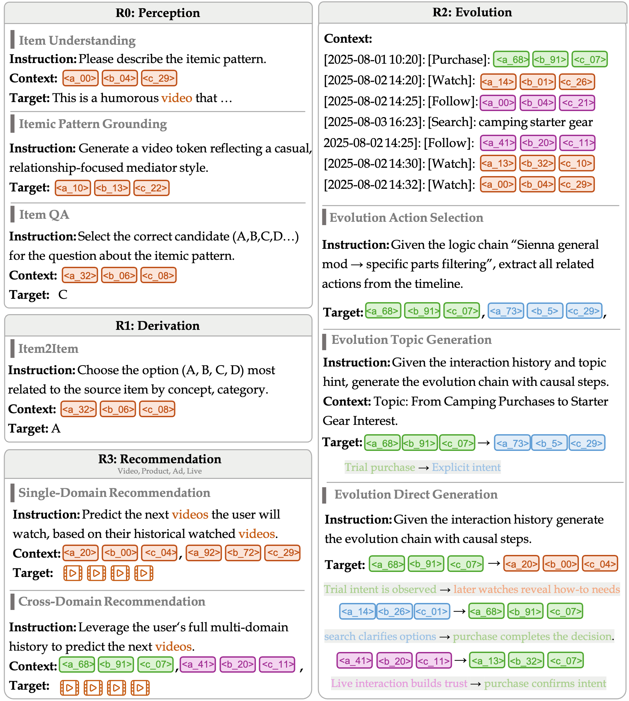
3.1.1 R0：感知
-
•
物品理解：给定物品 ，模型生成其自然语言描述，从物品语义模式中解码出物品语义。
-
•
物品语义模式锚定：给定自然语言描述，模型将其锚定到相应物品。
-
•
物品问答：给定物品 和基于其内容的选择题选项 ，模型选择正确选项，以评估模型能否利用物品语义回答有针对性的问题。
3.1.2 R1：推导
在感知的基础上，推导评估模型能否依据常识或知识关联，从单个物品的语义推理出物品之间的关系。
-
•
Item2Item：给定源物品 和候选物品集合 ，模型选择最符合预期物品间关系的物品。
3.1.3 R2：演化
演化评估模型能否将用户兴趣视为随时间发展的过程，而非静态偏好画像，并在此基础上进行推理。我们设计了自主性逐步增强的三种任务变体，从提取与主题相关的行为，到生成主题引导或完全自主的演化链：
-
•
演化行为选择：给定历史 和指定兴趣主题 ，模型识别与该主题存在逻辑联系的历史行为 。
-
•
主题引导的演化生成：给定历史 和指定兴趣主题 ，模型生成演化链 ，描述这一兴趣如何发展。
-
•
演化直接生成：仅给定历史 ，模型在没有主题引导的情况下自主生成有效的兴趣演化链 。
这一层次评估围绕用户行为展开的、具有时间结构的多跳推理，架起从物品级推理通往上下文感知推荐的桥梁。
3.1.4 R3：推荐
前述任务聚焦于 R0–R2 的特定能力，而真实推荐场景往往要求模型灵活结合感知、推导与演化能力。因此，我们引入综合推荐任务，评估模型在实际推荐环境中的整体推理能力。我们在以下两种设置下开展评测：
-
•
单域推荐：给定用户画像 以及用户在目标领域内的交互历史 （短视频、广告、电商或直播11 1 为简洁起见，我们将短视频记为 Video，广告记为 Ad，电商记为 Product，直播记为 Live。），模型预测用户接下来将交互的物品。
-
•
跨域推荐：给定用户画像 、用户的多域交互历史 和指定目标领域 ，模型预测该领域中接下来将交互的物品。
3.2 评测协议
我们采用一组针对各任务的指标，覆盖推荐准确性、问答正确性、兴趣演化推理和开放式生成质量。
文本生成指标。
对于物品理解任务，我们复用 OpenOneRec (Zhou et al., 2026) 中引入的 LLM-as-a-Judge（大模型评判）协议，不改变其指标定义。
单选与多选指标。
对于物品问答和 Item2Item 等单答案选择任务，我们报告准确率。对于包括演化行为选择在内的多答案选择任务，我们报告在预测集合与真实集合上计算的 F1。
演化生成指标。
主题引导的演化生成和演化直接生成使用行为–逻辑得分系列指标进行评测。这组指标结合了生成演化链与真实演化链之间的行为对齐，以及相应推理陈述之间的逻辑对齐。这些指标的详细实现见附录 B.4.2。
推荐指标。
对于推荐和物品语义模式锚定任务，我们报告 Pass@ 和 Recall@。Pass@ 表示前 个生成结果中是否至少出现一个真实目标，而 Recall@ 衡量前 个结果列表覆盖的真实目标比例。我们先将生成的物品语义模式解码为物品 ID，再在物品粒度上计算指标。
3.3 通用智能健全性检查
遵循 OpenOneRec (Zhou et al., 2026)，我们还保留一组通用智能健全性检查，涵盖 MMLU-Pro (Wang et al., 2024) 等通用任务，以确保推荐领域的专门化不会以牺牲通用推理或指令遵循能力为代价。
在建立诊断维度（R0–R3）以及通用智能保障后，我们开始介绍 OneReason-Bench 所要评估的训练体系。下一节首先介绍感知基础，即物品语义 token 化和四粒度预训练数据；这些是 R0 直接检验的内容，也是所有更高阶能力的基础。
4 预训练流程
本节详细介绍我们的预训练方法。首先，第 4.1 节介绍物品语义 tokenizer。随后，第 4.2 节介绍我们的核心贡献：一个四粒度数据体系，以层次化方式整合推荐语料与通用领域数据，实现深度模态对齐。第 4.3 节对各个粒度开展系统性消融，以量化其对模型整体性能的具体贡献。最后，第 4.4 节概述将这一数据设计付诸实践的三阶段训练方案，覆盖从词表预热到全规模训练的过程。
4.1 物品语义 tokenizer
为获得紧凑且具有语义基础的物品嵌入，我们在物品理解任务上联合训练一个多模态编码器和一个解码器 LLM。 编码器集成了视觉 Transformer（ViT） (Radford et al., 2021)、一个以开源 Qwen3-VL (Qwen3 et al., 2025) 初始化的 LLM，以及一个音频编码器 (Vyas et al., 2026)。 它将封面图像、视频帧、文本描述和音频等丰富内容信号提炼为紧凑的稠密嵌入。 为以端到端方式优化物品嵌入，我们将该嵌入作为软前缀置于一个独立的解码器 LLM 输入之前，随后接上该物品的文本描述。
我们通过 RQ-KMeans (Luo et al., 2025) 对这些嵌入进行量化。 我们采用三层码本，每层包含 8192 个编码。 因此，每个物品都由一种物品语义模式表示，其中包含一个领域感知的起始 token 和三个子 token。 例如，物品语义模式的格式如下：
其中，domain 在我们的四种推荐场景中分别取 video（视频）、prod（商品）、ad（广告）或 living（直播），对于通用领域多模态数据则取 sid。 与 OpenOneRec (Zhou et al., 2026) 不同，我们去掉了末尾的结束 token。 这减少了物品语义模式所占用的总体上下文长度，为对我们的思考范式至关重要的推理轨迹留出更多容量。
4.2 预训练数据
包括 OneRec-Think 和 OpenOneRec 在内的既有生成式推荐工作，按任务类型组织预训练数据，例如物品描述生成、用户行为序列、用户画像与文本交织，并将其混合进行联合训练。虽然这建立了物品语义模式与自然语言之间的基本映射，但仍存在三方面结构性缺口。首先，物品和用户的语义表达往往较为同质，限制了模型接触到的语言多样性，并削弱了表征的鲁棒性。其次，数据组织停留在任务层面，没有明确建模物品语义 token 内部的细粒度语义层次或跨物品的关系逻辑。最后，用户行为建模依赖于一种狭窄的条件化范式，即将完整用户画像映射为完整行为序列，限制了模型向多样化推荐上下文泛化的能力。
为弥补这些缺口，我们将预训练语料重组为四个逐级递进的粒度，从微观的 token 语义推进到宏观的用户行为。这种层次化设计沿三个维度系统地扩展了文本模态与物品语义模态之间的对齐：更广泛的表达多样性；从子 token 组合到物品间关系的显式结构推理；以及用于用户建模的更丰富条件化模式。本节余下部分将详细介绍共同实现这一目标的推荐语料和通用领域语料的构建方法。
4.2.1 推荐语料
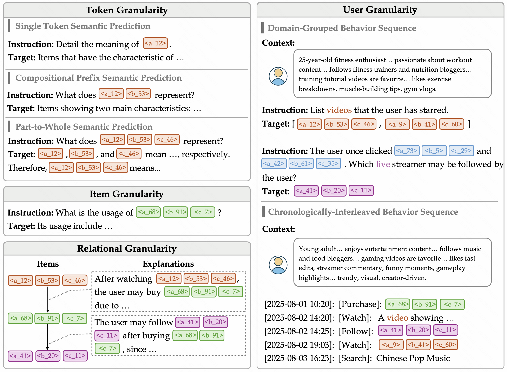
为实现文本模态与物品语义模态之间深度而无缝的融合，如图 5 所示，我们将预训练语料组织为四个逐级递进的粒度：
-
•
Token 粒度数据聚焦于单个或组合的物品语义子 token 的语义，在最细粒度上实现模态对齐。
-
•
物品粒度数据将物品语义模式与文本模态对齐。它将跨模态融合推进至完整物品层面，并通过多视角任务和多样化物品来源，将完整物品语义模式与全面的文本描述匹配。
-
•
关系粒度数据通过自然语言解释物品之间的联系。它总结关联物品的兴趣迁移逻辑，使协同信号能够编码到文本表征和模型参数中。
-
•
用户粒度数据使模型能够在统一的个性化用户上下文中理解并生成多模态内容，从而实现充分的跨模态融合。
为实证验证多粒度语料带来的模态对齐增强，我们随机抽取一组物品，分别提取其物品语义模式和文本描述的嵌入。每个物品与自身描述组成正样本对，并随机抽取另一物品的描述作为相应负样本。既有工作通常分别报告正负样本对的相似度 (Lee et al., 2025; Rusak et al., 2024)；我们还进一步计算二者之差，得到正–负相似度间隔，更直接地量化跨模态对齐程度。如图 6 所示，将 OpenOneRec 的预训练推荐语料替换为我们提出的语料后，这一间隔的分布在所有物品语义领域中都一致向右移动，表明跨模态对齐更强。 该评估的完整方法见附录 C。
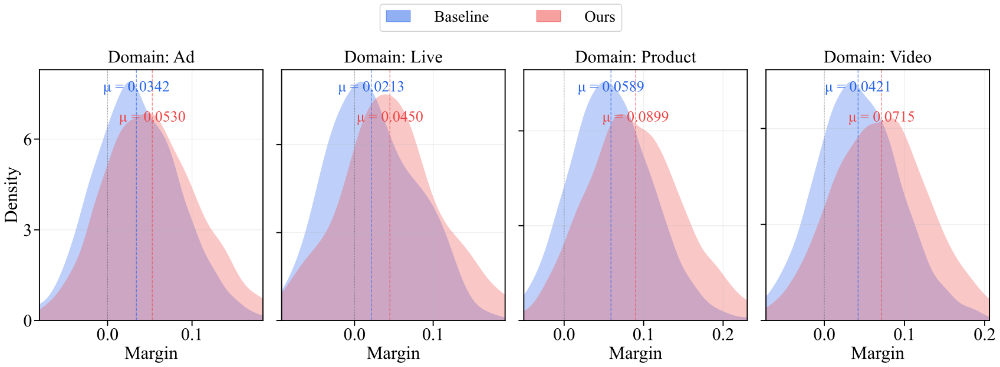
本节余下部分将介绍四个粒度各自对应的预训练语料的详细构建方法。 各语料的详细 token 比例见附录 C.2。
Token 粒度。
要实现语言与物品语义模式之间的精确对齐，需要在连续的粒度谱系上建模语义。 传统方法 (Zhou et al., 2026) 将每种物品语义模式与其整体描述对齐。 在另一端，近期探索 (Feng et al., 2026) 通过将每个单独的子 token 与其语义含义配对，聚焦于单 token 语义预测。然而，这些孤立子 token 的语义如何逐级组合为完整物品语义模式的语义，这一关键组合过程仍然是隐式的，尚未得到显式建模。
为弥合这一缺口，我们的 token 粒度数据旨在显式建模子 token 语义逐步整合为完整物品语义模式语义的组合过程。在单 token 语义对齐这一基本前提之上，我们进一步引入两个新组件，在强化子 token 级语义理解的同时，显式建模跨粒度的层次化语义组合：
-
1.
组合式前缀语义预测。 我们构造任务，要求模型预测前缀子 token 对 <a_xxxx><b_xxxx> 的组合语义含义。 数据通过 LLM 总结共享给定前缀的物品的共同语义来构建。 此类数据显式教会模型：在中间层次的子 token 对粒度上，孤立语义如何融合与交互。
我们还构建反向任务，即前缀物品语义 Token 锚定，模型必须根据组合语义的文本描述，检索出正确的前缀子 token 对。 这种双向表述确保模型不仅能解释前缀的含义，还能将语义概念映射回相应的子 token 空间。
-
2.
从局部到整体的语义预测。 我们通过组织数据，引导模型执行两步语义预测过程。 第一步预测给定物品所对应完整子 token 序列中每个子 token 的细粒度语义解释；第二步再将这些离散语义综合为连贯的物品整体描述。 因此，这些数据确立了一种从局部到整体的结构化、多步语义预测范式。
物品粒度。
与 OpenOneRec Zhou et al. (2026) 中引入的物品语义稠密描述数据类似，后者包含物品语义模式与描述之间的双向映射，我们的物品粒度数据也用于连接物品语义模式和自然语言描述。 不过，我们通过两项关键改进，显著推进了这一范式：
-
1.
容量感知的描述粗粒化。 用作物品粒度对齐目标的描述往往包含极其细致的信息，而每个物品仅由三个子 token 表示。 这些子 token 能够捕捉物品的粗粒度语义，却无法编码如此精细的细节，因此，将它们与过度详细的描述对齐会迫使模型产生幻觉，并污染语义空间。 因此，我们在对齐前通过三项操作对每条描述进行粗粒化，只保留三个子 token 能可靠承载的信息。 (i) 去除物品编码无法还原的实例特有噪声，例如画面中的 OCR 文本、ASR 歌词、日期和商品型号。 (ii) 将细粒度连续属性映射到粗粒度区间，例如将精确价格转为价格区间、将精确年龄转为年轻成人之类的语义标签；同时删除修饰性定语，保留其所描述的实体（例如，将“粉色上衣配棕色半身裙”变为“上衣配半身裙”）。 (iii) 保留具有高区分度的内容骨架，包括物品类别、品牌、IP 和标题名称、核心卖点、目标受众以及关键材质。 由于不同业务领域的噪声分布不同，我们分别为视频、商品、直播和广告设计粗粒化规则。
-
2.
多视角物品问答。 标准的描述生成能够建立对物品的初步感知，但往往不足以捕捉其细微属性。 为加深对齐，我们进一步构建多视角问答数据，从目标受众偏好、产品核心吸引点、视觉风格以及负反馈原因等不同角度向模型提问。 这一任务设计将对齐从单一的描述性映射，提升为对物品语义模式稳健的多维语义探查。
关系粒度。
在推荐场景中，如果未能捕捉物品之间的协同联系，语义对齐便是不完整的。 现有范式通常依赖原始用户交互序列中的隐式协同过滤信号，使物品间转移缺乏显式且可解释的语义基础。 为弥合这一缺口，我们的关系粒度数据通过构建物品语义模式与自然语言解释交织的序列，将这些协同信号与文本空间显式对齐。 具体而言，每个训练样本采用如下形式：
| (1) |
这一语料包含直接的物品间关联（其中 ）和多物品兴趣流（其中 ）。
我们利用内部的播放后搜索表来构建 直接的物品间关联。 该表每行都将一个已消费的源视频与一个特定搜索结果商品联系起来。 当用户在有效播放后发起搜索，并对搜索结果中的某个商品产生正向交互时，就建立这一联系。 配套的自然语言解释通过将视频和商品的描述融合到预定义模板中来生成。
与直接的物品间关联相比，多物品兴趣流不仅更长、每个样本所包含的协同信号更丰富，而且具有更广的模态覆盖，确保物品间关系的非平凡性，并提供更高质量的解释。
-
1.
为扩展模态覆盖，除播放后搜索表外， 我们还纳入另外两类数据来源。 第一类是内部的 TagNext CF Relations，它从用户正向行为中提取具有协同关系的视频对。 第二类是在按时间排序的多域用户行为序列上，通过滑动窗口聚合共同出现的物品对。 具体而言，如果有足够多的用户，对其时序行为序列中出现在特定大小窗口内的两个物品都给予正向反馈，就保留这一物品对。
-
2.
为增强物品间关系的非平凡性，我们采用专门的处理流程。 首先，基于上述三个数据来源构建跨用户的全局物品图，再从中随机采样物品链。 采样得到的物品链能够捕捉在单个用户行为序列中可能并不显著的潜在关系。 由于采样链 中相邻物品之间的转移可能较为直观，我们进一步采样子链 ，形成训练样本。 如果子链中任意两个相邻物品节点之间的语义相似度超过一定阈值，就丢弃该子链。
-
3.
为提升解释质量，我们利用 LLM 生成自然语言解释，阐明从 到 的潜在兴趣转移。 为使这些解释立足于真实的转移路径，我们还向 LLM 提供中间物品节点 的语义描述。
用户粒度。
作为预训练推荐语料的最后一部分，用户粒度数据将跨模态对齐扩展到用户交互的完整序列演化过程。
这一对齐的关键前提是高质量的用户侧文本。然而，由业务日志汇总而成的原始用户画像通常存在噪声、不连贯以及模板模式僵化等问题。因此，我们使用开源 LLM 从多种方面、以多种格式重新描述每份画像，在保留原始事实内容的同时，将其转化为流畅自然的叙述。基于这些净化后的画像，我们设计了两种数据格式，无缝整合自然语言与物品语义模式，以实现深度模态对齐：
-
1.
按领域分组的行为序列。 这种格式中的每个序列都以文本用户画像为起点，随后接上从用户交互历史中提取的物品语义模式。 涉及的物品语义模式按其所属领域分组成子序列。 我们通过多轮问答对话动态组织这些按领域分组的子序列，而不是将它们展开为平铺直叙的叙述。 通过自然语言明确询问特定领域的行为，且经常以一个领域的历史作为另一个领域预测的条件，文本便成为主动的控制信号。 模型必须理解问题的语义约束，并将其准确映射到物品语义空间，从而巩固文本模态与物品语义模态之间的稳健对齐。
-
2.
按时间交织的行为序列。 这种数据格式严格按时间戳重建用户行为序列，自然地交织所有领域的交互。 这种基于时间线的重组使模型能够区分短期行为突发与长期兴趣演化。 最重要的是，为进一步强化跨模态对齐，我们以一定概率将时间线中的部分物品语义模式替换为相应的文本描述。 由此形成交织的混合时间线，迫使模型在统一的序列上下文中实现连续自然语言与离散物品语义模式之间的深层语义融合。
4.2.2 通用领域语料
文本语料。
除了四粒度推荐语料外，我们在整个预训练过程中还保持相当比例的通用领域文本数据，涵盖数学推理、代码、科学文献、医学文本和通用指令遵循语料。 这种混合使模型在吸收推荐专用知识的同时，保留其在逻辑推理、结构化知识理解和指令遵循方面的核心能力。
多模态语料。
除纯文本语料外，我们进一步通过多样化的多模态数据丰富预训练，并将图像 token 化为物品语义模式，把这些数据转换为物品语义–文本格式。这些数据涵盖四个互补来源：图文理解对、图文交织文档、图像编辑三元组（源图像、编辑指令、目标图像）以及文生图数据。对于所有四类来源，我们都只选择保留视觉语义处于粗粒度层面的样本，例如整体图像风格、主要表现对象以及高层次场景构图，同时剔除依赖超出三个子 token 编码表征容量的细粒度细节的样本。这种有意设计的数据格式多样性与粗粒度筛选共同服务于三个目的：
-
1.
首先，每个来源都带来不同的模态组合和语言风格，共同发挥正则化作用，防止模型过拟合于通过规则合成的推荐语料中的同质模式。
-
2.
其次，这些数据集经过高质量语义标注的筛选整理，为概念锚定和组合式视觉推理提供干净的监督信号。
-
3.
第三，通过将开放世界的视觉概念映射为物品语义模式，这些数据成为外部语义锚点，将模型的知识边界扩展到封闭推荐领域之外，从而在密集的推荐训练过程中维持通用多模态理解能力。
数据组成策略。
由于我们从经过指令微调的 Qwen3 骨干网络 (Qwen3 et al., 2025) 继续预训练，一个核心问题是如何注入领域知识，同时不削弱其已有的指令遵循能力和文本流畅性 (Parmar et al., 2024; Ovadia et al., 2025)。为此，与 OpenOneRec (Zhou et al., 2026) 不同，我们采用统一的下一 token 预测目标，将含噪、由模板合成的业务数据放入不计入损失的上下文中，把参与损失计算的目标部分留给质量更高的文本。因此，有效训练目标自然呈现出约 1:1 的问答式数据与自由形式数据比例：前者使模型与指令格式保持对齐，后者使其保持对自然文本分布的适应。不计入损失的上下文还允许模型以领域信号为条件，而无需学习复现其中的噪声。
4.3 推荐语料的消融研究
4.3.1 实验设置
我们在 0.8B 模型上，以固定的 30B token 预算开展消融研究，使计算成本保持可控；主要结果则在 8B 模型上获得。五种配置定义如下：
-
•
Exp1（基线）：标准的 OpenOneRec 数据集，包含原始物品描述数据和用户粒度数据（包括用户行为数据与用户画像锚定数据）。
-
•
Exp2（Exp1 + Token）：在 Exp1 中加入我们的 token 粒度数据，同时对原始混合数据按比例下采样，以维持预算不变。
-
•
Exp3（Exp2 + 物品）：将 Exp2 中的基线物品描述数据替换为我们的物品粒度数据。
-
•
Exp4（Exp3 + 关系）：将我们的关系粒度数据加入 Exp3，并相应重新平衡整体混合比例。
-
•
Exp5（Exp4 + 用户）：将 Exp4 中的基线用户粒度数据替换为我们的用户粒度数据。
值得注意的是，token 粒度和关系粒度数据引入了基线中不存在的新能力，而物品粒度和用户粒度数据则作为其基线对应部分的升级替代。这一顺序式流程有效分离出每个粒度的边际贡献，同时排除了数据量增加所带来的混淆影响。
| Task | Exp1 | Exp2 | Exp3 | Exp4 | Exp5 | |
| R0: Itemic Pattern Grounding | ad | 0.48 | 0.80 | 2.40 | 0.48 | 1.92 |
| live | 0.40 | 1.01 | 1.21 | 1.21 | 1.21 | |
| prod | 2.42 | 5.81 | 5.33 | 2.91 | 5.33 | |
| video | 0.35 | 0.35 | 0.87 | 1.05 | 1.05 | |
| R0: Item Understanding | ad | 16.37 | 37.86 | 31.65 | 29.69 | 32.56 |
| live | 35.16 | 46.16 | 39.27 | 37.39 | 35.52 | |
| prod | 20.58 | 28.62 | 29.51 | 29.78 | 28.75 | |
| video | 22.56 | 36.76 | 30.77 | 28.68 | 31.63 | |
| R1: Item2Item QA | 0.00 | 20.57 | 20.73 | 25.65 | 29.72 | |
| R2: Evolution Direct Gen | mixed | 0.13 | 0.00 | 0.32 | 0.18 | 0.37 |
| R3: Cross-Domain Rec. | ad | 9.06 | 8.75 | 9.54 | 8.58 | 10.84 |
| live | 2.29 | 2.32 | 3.49 | 3.25 | 8.56 | |
| product | 1.15 | 0.94 | 1.29 | 1.54 | 1.65 | |
| video | 0.65 | 0.74 | 0.72 | 0.73 | 0.66 | |
4.3.2 结果
为系统展示多粒度数据构建流程的有效性，我们给出 OneReason-Bench 各任务上的性能变化轨迹（表 2）。结果揭示了清晰的能力递进，证实每个粒度层次都成功向模型注入了其所针对的组合能力或语义能力。
Exp1 Exp2：Token 粒度。
加入 token 粒度数据后，所有领域的 R0 检索与理解能力都大幅提升（例如，Itemic Pattern Grounding_prod 从 2.42% 5.81%；Item Understanding_ad 从 16.37% 37.86%）。R1 Item2Item 问答从 0.00% 跃升至 20.57%，证实 token 级问答式数据使模型掌握了基线所不具备的问答格式。R2 暂时降至 0.00%，表明更高层次的推理受到扰动。
Exp2 Exp3：物品粒度。
用多视角物品数据替换基线描述后，若干 R0 检索指标达到峰值。R2 恢复至 0.32%，R3 跨域推荐有所改善（例如，Cross-Live 从 2.32% 3.49%）。R0 物品理解在多数领域出现退步，原因是业务来源的描述中仍有残留噪声（见表 3）。
| Prompt: 请解读以下视频 token 并还原视频内容： <|video_begin|><a_8164><b_6973><c_7395> | |||
| Ground Truth | Exp1 (Baseline) | Exp2 (Exp1 + Token) | Exp3 (Exp2 + Item) |
| [Reference] | [Repetitive Hallucination] | [Faithful Genre] | [Fabricated Title] |
| 这是一段都市言情剧情短视频…女主角池晚作为神医救醒了病危的霍老爷子，霍老爷子为报恩极力撮合池晚与小儿子霍南洲结婚…前未婚夫霍司寒决定与池晚退婚、迎娶白月光池娇…两份婚书同时送到池家…最终池晚选择了霍南洲的婚书。 Analysis: a modern urban-romance drama about an arranged-marriage conflict within a wealthy family. | 这段视频是关于一部名为《我爱的他》的电视剧的…通过对话和场景切换展现角色之间复杂的情感纠葛…角色之间的对话如“我爱的他”、“我爱的他”…揭示了复杂的情感纠葛和关系变化。 Analysis: invents a drama title and degenerates into repeated, contentless lines, capturing only a vague emotional conflict and nothing specific to the plot. | 这些短视频主要属于剧情类短剧与影视解说…强剧情冲突与反转：聚焦人物关系的复杂纠葛（如豪门恩怨、复仇、误会）…鲜明的人物标签（如“霸道总裁”、“灰姑娘”）…面向喜爱现代都市情感、家庭伦理剧的受众… Analysis: correct at the genre level (modern urban romance / family-conflict short drama) and consistent with the ground truth, though generic and not tied to the specific story. | 这是一个关于《医祖凌云传》的故事…女性角色身着白色上衣展现专业形象，男性角色穿着西装…画面中出现文字“医祖凌云传”…还出现了手术台、医疗器械等元素…兴趣点在于吸引喜爱《医祖凌云传》和关注医疗题材的观众。 Analysis: after item-caption data is added, the model fabricates a concrete, wrong title and re-frames the clip as a medical drama, contradicting the actual urban-romance plot; the hallucination worsens. |
Exp3 Exp4：关系粒度。
加入关系数据后，R1 Item2Item 问答提升至 25.65%，R3 Cross-Prod 提升至 1.54%。部分 R0 检索指标下降（例如，Itemic Pattern Grounding_prod 从 5.33% 2.91%），反映出向关系推理倾斜的能力权衡。R2 略有下降（0.32% 0.18%），因为物品间关系数据并不能直接惠及这一用户侧任务。
Exp4 Exp5：用户粒度。
用我们具有时间感知能力的序列替换基线用户数据后，R2 达到峰值（0.37%），R3 跨域推荐也达到最高水平，尤以 Cross-Live（3.25% 8.56%）和 Cross-Ad（8.58% 10.84%）最为突出。R1 达到 29.72%，R0 检索指标则恢复至此前的峰值。
主要发现。
消融研究揭示了三点发现：(1) Token 粒度和关系粒度数据通过增补扩展模型的技能集合，而物品粒度和用户粒度数据通过替换完善现有能力。(2) 训练过程中会出现能力权衡：关系推理的提升可能暂时降低静态检索能力，但后续阶段会恢复这些能力。(3) 用户粒度发挥最终整合者的作用，将所有先前知识置于时序行为的上下文之中，从而在多样化推荐场景中达到最佳性能。
4.4 训练方案
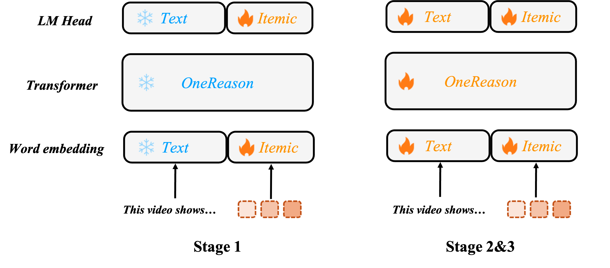
| Configuration | Stage 1 | Stage 2 | Stage 3 |
| Trainable parameters | Extended vocab. LM head | All | All |
| Learning rate | |||
| Token budget | 110B | 449B | 19B |
所有阶段都采用样本打包以提高序列利用率，生成长度为 48K token 的打包序列。 不同阶段的关键区别在于每个打包序列内单个样本的最大长度。 阶段 1 和阶段 2 将单个样本限制为 4K token，以优先保证训练吞吐量。 阶段 1 仅训练新引入的嵌入及其对应的 LM 头权重，其余骨干网络保持冻结，使新增物品语义模式嵌入能够融入语义空间，而不扰动预训练权重。 阶段 2 解冻全部参数，进行全面联合训练，使模型能够从四粒度混合数据中吸收推荐知识。 阶段 3 将单样本长度上限提升至 32K token，使模型能够基于具有长程行为依赖的完整用户历史进行训练。
5 SFT 流程
物品语义–文本对齐预训练为模型提供了必要的感知基础：模型能够将物品语义 token 与自然语言内容关联起来，并吸收了用户行为中的协同信号。SFT 在此基础上培养推荐认知能力，即在指令格式下操作具有语义锚定的物品语义 token 的能力。我们仍围绕 R0–R3 层级组织这一阶段，但采用两个互补的训练轴。压缩轴教会模型将冗长、嘈杂的用户历史归纳为具有明确类型的画像状态和紧凑的兴趣演化模式，使后续推理步骤能够比较少量有证据支持的假设，而不必直接面对原始行为日志。推理轴则训练动态操作：R1 推导物品之间的单跳联系，R2 跟踪兴趣的时序演化，R3 通过转移判断预测下一次交互。第 5.1 节介绍 R0 感知监督；第 5.2 节和第 5.3 节描述 R1 推导推理与 R2 演化推理；第 5.4 节介绍 R3 推荐监督，将压缩和转移判断组合为推荐 CoT；第 5.5 节和第 5.6 节则介绍用于增强指令鲁棒性的物品语义指令数据和通用领域数据。
5.1 R0：感知
基于预训练建立的四种粒度对齐，我们进一步精炼数据，构建高质量的 CoT 能力。R0 为 SFT 阶段提供感知层，其作用是在要求模型进行更高层次的推荐推理之前，使物品语义 token 可读、可控，并能够在语义上被有效利用。描述文本数据覆盖短视频、电商商品、直播和广告四大内容领域。QA 数据的覆盖范围较窄：仅包含短视频和电商商品领域，直播和广告只提供描述文本式的语义锚定。因此，R0 包含两个互补的任务族。第一个是物品语义 token 与自然语言描述之间的双向映射，通过指令式监督强化物品语言的语义锚定。第二个是围绕平台内容的问答（QA），将感知能力从描述文本重建扩展到属性识别、受众理解、负反馈分析，以及对 QA 覆盖的两个领域进行开放式语义理解。
由于预训练阶段已经建立了层次化的物品语义 token 空间，R0 不再引入新的 tokenizer，也不重复完整的 token 粒度构建流程，而是将这一层级转化为显式的 SFT 监督。表 5 使用同一组视频物品语义 token 展示了两者的区别：预训练提供从物品语义 token 到描述文本的直接映射，而 R0 要求模型先解释层次化物品语义 token，再生成描述文本。在这个例子中，CoT 首先利用粗粒度 token 识别以人物为中心或具有 ACG 风格的内容类型，随后利用中粒度 token 将证据范围缩小到年轻女性的视觉展示，最后利用细粒度 token 支撑关于个人风格与审美展示的结论。因此，关键区别不在于目标描述文本本身，而在于通过监督让模型用语言明确表达：由粗到细的物品语义 token 如何支持该描述。更多 R0 感知的双语示例见附录 D.1.1。
描述文本数据同时包含思考和非思考变体。在思考格式中，模型先解释每个物品语义 token 如何贡献于物品的最终含义，再生成最终描述文本。这种显式的由粗到细轨迹训练的是物品语义 token 到文本的语义锚定，而非推荐决策：它提供了后续 R1 推导、R2 演化和 R3 推荐推理复用的语义基础。与此同时，unCoT 变体监督模型直接从物品语义 token 生成描述文本，在不需要显式推理时保持生成质量和效率。
| Pre-training itemic-token-to-caption mapping |
| User: <|video_begin|><a_7300><b_7894><c_4541> Assistant: 视频为一段以二次元角色扮演为主题的短视频，主要展示一位身着黑色紧身战斗服、金发的女性角色在铁轨上的摆拍画面，以及一位身穿黑色吊带裙的女性在停车场奔跑的片段。视频配有“甜妹”“萌妹子”等标签，整体风格偏向二次元美学与个人形象展示。 Signal: pre-training provides direct itemic-token-to-caption grounding. It teaches the model to associate the itemic tokens with the caption, but does not explicitly verbalize how the individual itemic tokens support the description. |
| SFT instruction-style perception |
| User: 视频 token <|video_begin|><a_7300><b_7894><c_4541> 包含哪些视频内容？ Assistant: <think> 从 <a_7300> 来看，该视频属于以角色或人物形象展示为核心的内容类型，常见于二次元文化、Cosplay 或情感化美学展示领域；结合 <b_7894>，可以进一步确定主角是年轻女性，内容围绕美女展示、时尚穿搭或 Cosplay 展开；再融合 <c_4541>，视频在视觉呈现上具有较强个人风格和审美导向。三层语义交集指向以年轻女性角色形象为核心、融合二次元或 Cosplay 元素、注重视觉美学与情感氛围营造的展示类短视频。</think> 视频为一段以二次元角色扮演为主题的短视频，主要展示金发女性角色摆拍、女性奔跑等片段，配合“甜妹”“萌妹子”等标签，吸引喜爱美女欣赏和视觉审美的年轻观众。 Signal: the same itemic-token evidence is converted into instruction-followable perception; the CoT makes the coarse-to-fine grounding explicit before the final caption. |
我们保留 QA 监督，作为指令式感知的补充：它将基于描述文本的语义锚定从物品语义 token 解码扩展到视频和商品领域中面向结构化属性及开放式语义的内容感知问答。描述文本与 QA 数据共同将预训练中获得的、已对齐的物品语义 token 感知转化为能够遵循指令的感知能力。R0 共包含约 941K 个样本，其中描述文本样本约 682K 个，QA 样本约 259K 个。
5.2 R1：推导
R1 面向跨物品关系推导。它将 R0 从理解单个物品扩展为解释为何一个物品可能自然引出另一个物品。这里的目标能力不是一般性的物品相似性判断。相反，R1 训练模型构建最小且有用的源物品到后续物品的联系：在学生模型 SFT 期间，给定一个源物品，模型应识别源侧的需求、线索、场景、约束或细化方向，生成合理的后续物品语义 token 答案，并说明其依据。源–目标物品对用于教师侧的数据筛选和一致性检查；学生模型的训练输入仍然仅包含源物品，源提示词中的 token 不计入目标损失。这种局部联系构建能力随后成为 R3 推荐 CoT 的一部分，使模型能够连接已观察到的行为、文本证据与目标领域决策，而不是依赖表层文本重合。
R1 与关系预训练使用相同的原始候选池，包括 TagNext CF 关系数据和播放后搜索数据。区别在于监督标准。关系预训练让模型接触大规模协同转移，而 R1 要求每个保留的物品对都能支持显式、单跳、以证据为依据的推理。经过去重、多样化和嵌入相似度筛选后，本地部署的旗舰 LLM 对每个物品对给出明确关联性判断：明确相关、明确不相关或不确定。我们仅保留其关系能够由可见物品证据（如物品元数据和详尽描述文本）直接支持的物品对，并移除主要依赖受众重叠、流行度或平台共现等宽泛假设建立联系的弱关联物品对。完整的判断提示词及其英文翻译见附录 D.2.1。
| Pre-training one-hop data User: 商品<|prod_begin|><a_2094><b_4972><c_1852>与什么视频内容最相关？ Assistant: <|video_begin|><a_1776><b_5416><c_9172> |
| SFT one-hop reasoning User: 请推荐一条与 <|video_begin|><a_1303><b_7205><c_8005> 主题接近、语义相关的视频。 Assistant: <think> 我注意到源视频虽然主要展示金刚板等建材的价格与材质，但其描述的温馨家居场景和具体的平米计价方式，精准触达了用户对于装修成本控制的深层关注。这种对硬装材料性价比的敏感，往往会自然激发用户对于整体空间软装搭配的联想。当用户开始计算地板或板材预算时，他们已经在构建一个完整的居住画面，此时床品、地毯等软装不仅是装饰，更是需要纳入同一笔账目的重要支出。基于这种由硬到软的推导逻辑，用户接下来的浏览轨迹很可能滑向家居软装搭配、床品选购或整体空间色彩规划内容。</think> <|video_begin|><a_0474><b_3348><c_1453> Signal: SFT turns the pair into an explicit source-to-target derivation. The target itemic tokens are the answer, while the reasoning must justify the bridge from source-side evidence. |
表 6 对比了 R1 与关系预训练。关系预训练以消息式关联呈现源物品和相关目标物品。R1 则仅保留单个源物品语义 token 序列作为指令输入，并在答案端监督模型先给出显式联系，再输出目标物品语义 token，使局部关系判断能够被直接学习。
对于高置信度候选，旗舰 LLM 进一步提取紧凑的联系变量，包括源侧需求、联系类型、抽象联系、延续方向、理由种子和置信度。这些变量将关系解释与目标物品的表层内容分离：目标物品仅用于一致性检查，而生成的解释必须依据源侧证据和联系变量撰写。这一设计减少了目标泄漏，避免模型学会复制仅出现在目标中的实体，或将目标描述复述为理由。生成提示词见附录 D.2.2，脱敏后的双语示例见附录 D.2.3。
这一流程将原始候选池精炼为约 K 个 TagNext CF 物品对和 K 个播放后搜索物品对，再从中采样得到精炼的 R1 训练集，包含约 400K 个示例。总体而言，R1 将隐式的物品间信号转化为简洁的推导监督：它保留了预训练引入的协同信号，同时将其提升为显式的联系推理，供 R3 在连接用户证据与下一兴趣方向时复用。
5.3 R2：演化
R2 面向用户兴趣演化建模。它将推荐认知从静态偏好理解扩展为对行为进行具有时间结构的解释。R0 锚定物品语义，R1 推导物品对之间的显式关系，而 R2 关注意图如何随时间发展：哪些行为起到触发作用，哪些后续行为细化或修正了先前行为，以及多个事件如何累积成可解释的轨迹。当推荐决策不仅取决于用户交互过什么，还取决于用户的潜在需求如何逐渐具体化时，这种能力至关重要。
我们从全领域用户行为时间线构建 R2，其中异构行为按时间顺序排列。强大的 LLM 不会将时间线视为扁平上下文，而是先识别用户意图中体现有意义的转变、细化或闭环的关键演化节点。提取过程强调连贯推进、主题连续性和非平凡的认知增量，将原始行为流转化为具有显式时间结构的候选演化链。从这个意义上说，R2 是用户级预训练在 SFT 阶段的对应部分：预训练让模型接触长行为上下文，而 R2 教会模型解释这些上下文中的哪些部分构成了有效的兴趣演化路径。
为提高可靠性，我们通过独立的 LLM-as-a-Judge 质量评估阶段筛选候选链。该阶段检查每条提出的轨迹是否受到原始时间线支持，以及其中的转移是否构成合理、自洽的推理路径。诊断标准涵盖顺序敏感性、认知增量、触发源证据、强因果式排他性、证据闭环，以及禁止揣测心理的约束。在实际处理中，该筛选会在构建下游任务之前，移除伪逻辑链、随机消费链、同类别漂移，以及证据不足的转移。主要提取提示词及其英文翻译见附录 D.2.4；完整的质量控制提示词包含第二轮评估使用的全部十一项检查。
基于经过验证的演化链，我们构建了三个与 R2 基准分类体系一致的 SFT 任务族：
-
•
演化行为选择：给定用户历史 和指定的兴趣主题或候选链描述，模型识别相关的历史行为 ，从而促进对时间结构的判别式推理。
-
•
主题引导的演化生成：给定用户历史 和指定主题 ，模型生成对应的演化链 ，重点训练以主题为条件的时序推理。
-
•
演化直接生成：仅给定用户历史 ，模型在没有主题引导的情况下直接生成有效演化链 ，对自主性的要求最高。
在数据构建过程中，这三个任务族分别组织为选择、主题引导生成和直接生成样本。部分样本包含 CoT 理由，使时间转移判断显式化；同时保留直接回答样本，以提高响应效率和格式鲁棒性。三种训练格式的代表性脱敏示例见附录 D.2.5。
最终 R2 数据集包含约 130K 个训练实例。总体而言，R2 构成 SFT 混合数据中的时序认知层。它通过多种任务格式，将用户时间线转化为经过验证的演化监督，使模型学会将用户意图理解为不断演化的过程，而非静态画像。R3 随后复用这一时序框架：推荐轨迹需要压缩嘈杂的历史，比较候选兴趣方向，并判断哪个方向最受用户近期及长期行为证据的支持。
5.4 R3：推荐
R3 是 SFT 混合数据中的推荐级组合层。R0–R2 分别训练专门能力，R3 则将它们整合到最终的下一次交互预测设置中。它的贡献不是又一个独立推理任务，而是一套轨迹构建协议：在经双轴压缩的用户状态之上应用 R1 式推导和 R2 式时序演化推理。R3 模块同时包含思考样本和非思考的直接回答样本：前者训练结构化推荐认知，后者保留从用户上下文到目标物品语义 token 的直接映射，并支持非思考格式的对齐。本小节重点介绍 CoT 轨迹的构建与评估。
5.4.1 推荐推理轨迹构建
每个 R3 合成样本都由三个要素构成：用户画像 、按时间顺序排列的交互时间线 ，以及真实的后续交互 。目标交互仅用作监督答案，并被明确禁止直接出现在推理轨迹中。因此，轨迹必须像答案未知一样，根据已观察到的画像和行为证据进行推理。在数据构建期间，教师模型首先围绕自然语言形式的用户证据撰写轨迹，并使用历史物品原始领域的 id（如视频、商品、直播作者或广告 id）标记所引用的物品，使每个具体证据引用都能被机器匹配。随后，后处理阶段将这一原始轨迹与已转换为物品语义 token 的用户上下文进行关联，把每个匹配到的历史 id 替换为对应的物品语义 token，移除无法匹配的引用，并将最终助手消息写为一段 <think> 轨迹，后接目标物品语义 token 答案。因此，模型训练时看到的轨迹并非纯文本理由：它在 CoT 内部交错呈现自然语言推理和物品语义 token 证据，同时将目标物品语义 token 保留在推理范围之外。
核心设计原则是将推荐 CoT 视为双轴压缩加转移判断过程。第一轴是画像类型压缩，归纳稳定的偏好先验、人口统计或人生阶段线索、时间节律、内容偏好、价格敏感度、交互深度，以及可能存在的设备共用歧义。第二轴是兴趣演化类型压缩，识别近期轨迹模式，例如触发搜索、需求扩展、参数收窄、场景延续、饱和驱动的替代、跨领域呼应，或从浏览到购买的闭环。这些压缩状态降低了长历史中的噪声，并为后续推理阶段提供可操作的类型化变量。
这里的压缩是面向任务的理解，而不是对已观察历史的通用概括。它保留对下一次交互预测有用的证据，抑制例行、偶发或支持不足的行为。这一设计受到表征学习的信息瓶颈观点启发：有用的表征在抑制输入噪声的同时保留与预测相关的信息 (Tishby and Zaslavsky, 2015)；我们将其作为设计动机，而非关于深度网络普遍动力学的断言 (Saxe et al., 2018)。它也与将语言建模和压缩联系起来的工作 (Delétang et al., 2024)，以及可复用抽象能够将冗长的基础推导压缩为更高层概念的观点 (Aksenov et al., 2026) 一致。在本设置中，这意味着：一个能够将嘈杂用户历史压缩为适当画像状态和演化模式的模型，实际上已经完成了推荐认知的重要部分。
压缩之后，轨迹对候选假设进行转移判断。这一阶段复用前面两项 SFT 能力。从 R1 继承局部联系构建能力：轨迹应解释先前的物品、查询或行为如何自然引出后续需求。从 R2 继承时序演化判断能力：轨迹应判断候选方向是否受到行为时间线中顺序、连续性、细化或闭环的支持。我们仅将因果式作为数据构建的启发式原则：教师模型优先采用有证据支持的触发、细化和场景延续，而非浅层共现，但不声称能够从观察日志中识别因果效应。这一启发式原则与强调将真实用户兴趣与混杂因素或从众效应分离的因果推荐研究，以及寻求对决策具有强影响力解释的反事实可解释推荐方法一致 (Luo et al., 2024; Tan et al., 2021; Zheng et al., 2021)。
具体而言，我们采用三个阶段的协议：画像抽象、兴趣扩展和转移推断。画像抽象执行画像类型压缩轴。兴趣扩展从兴趣演化类型压缩出发，将最具信息量的行为信号扩展为少量以证据为依据的假设。转移推断从证据强度、近期性、时间连续性、画像兼容性、目标领域兼容性和泄漏控制等方面比较这些假设，随后选定最合理的下一兴趣方向。
| Persona type | Chinese reasoning case and English analysis |
| Middle-aged homemaker | 由【晚饭前连续看家常菜教程、收纳改造、孩子作业辅导】推测用户偏向中年家庭主妇，并且最明显的需求是家人日常饮食、家居整理和孩子学习支持。后续更应关注实用、低门槛、能直接服务家庭场景的内容，而不是泛泛推荐生活方式内容。 Analysis: the abstraction compresses several household-oriented signals into a family-consumption prior, but the next recommendation still has to follow the concrete need revealed by recent cooking, storage, or tutoring behaviors. |
| Live-shopping enthusiast | 由【长时间停留在带货直播间、反复点击购物车、关注限时优惠】推测用户对直播购物偏好较强，并且最明显的兴趣集中在高性价比日用品、食品补货和家居小件。推理时需要优先判断她信任的主播、常购品类和促销节点，避免只把她归为普通购物用户。 Analysis: the persona prior highlights promotion sensitivity and trusted live-room categories, so the trace should reason about the next purchase scenario rather than merely predicting generic e-commerce interest. |
| Shared-device user | 由【上午看少儿动画、晚饭前看家常菜、深夜又集中看体育赛事】推测该账号可能存在多人共用手机。此时画像不能直接合并成一个稳定用户，而要按时段和近期行为拆分，优先识别当前活跃使用者，避免被其他家庭成员的历史行为带偏。 Analysis: the abstraction is used as a noise-control mechanism: conflicting behavior clusters are treated as different possible users, and the final transition should rely on the current stable segment rather than the whole mixed history. |
从概念上说，这一协议可写为
| (2) |
| (3) |
其中， 表示压缩后的用户状态， 表示扩展得到的候选兴趣假设集， 表示目标领域， 表示最终的转移判断步骤， 是一个概念性评分函数，综合考虑证据强度、近期性、时间连续性、画像兼容性和目标领域兼容性。最终 CoT 轨迹以简洁形式实现这一过程，交错呈现文本和物品语义 token 引用，而目标物品语义 token 仅在推理轨迹之后输出。最终推荐 CoT 格式的代表性脱敏训练样本见附录 D.3.3，完整的双语构建提示词见附录 D.3.1。
画像抽象
画像抽象的目标是将稀疏、嘈杂的行为证据压缩为紧凑、可解释的先验。给定用户画像和交互历史，教师模型识别最合理的用户原型；当用户不符合任何预定义类别时，则归纳定制化画像。这种抽象是一种软性的、具有类型的用户状态，而非确定性标签：它缩小可能的兴趣方向集合，但最终推断仍必须以观察到的行为为依据。这一阶段将高维行为日志转换为少量偏好因素，如家庭消费需求、游戏技能提升、直播购物敏感度、饮食偏好、健身目标或设备共用歧义，从而缩小转移判断的搜索空间。表 7 给出了代表性的中文画像抽象案例，以及说明各项抽象如何约束推荐推理的英文分析。
兴趣扩展
完成画像抽象后，模型执行兴趣扩展，避免轨迹过早锁定单一解释。这一阶段从兴趣演化类型压缩开始：从近期轨迹证据中识别具有类型的模式，例如搜索触发的需求、从宽泛类别到具体参数的细化、从内容到商品的场景延续，或直播、商品、广告和视频行为之间的跨领域呼应。随后，将这些模式展开为少量关于下一兴趣的候选假设。通过这种方式，兴趣扩展既足够广泛，能够表征推荐的不确定性，又足够紧凑，避免轨迹被原始行为 token 淹没。
我们采用四项启发式原则，使扩展保持广度，同时以证据为依据：
-
•
行为动机。轨迹应解释具有信息量的行为背后的意图，尤其是搜索查询，因为它们往往直接揭示用户当前的兴趣和真实需求。
-
•
时间敏感性。轨迹应遵循事件顺序，解释后续行为可能如何从先前行为演化而来，而不是将历史视为无序集合。
-
•
转移覆盖。当用户表现出从一个主题转向另一个主题的趋势时，扩展过程应将合理的前后转移方向保留为候选，把最终判断留给转移推断。如果后续行为在没有逻辑联系的情况下放弃了此前的所有条件，则应将其视为弱相关或不相关。
-
•
噪声衰减。例行补货、随机消费、重复曝光和一次性行为会被降低权重，因为它们通常只是稳定未来推荐意图的弱信号。
具体而言，兴趣扩展要求推理轨迹达到证据能够可靠支持的最细粒度。如果历史支持用户对某款具体手机游戏感兴趣，轨迹就不应停留在宽泛的游戏类别；如果用户反复与某一戏曲剧种互动，轨迹应明确提到该剧种，而不只是“传统文化”。这一设计使 CoT 轨迹保持细粒度并以证据为依据，同时在最终决策之前保留多个合理的未来方向。
为校准这一阶段应有的广度，我们在 SFT 轨迹构建过程中改变兴趣扩展宽度 ，并在四个领域评估所得思考模式推荐质量。图 8 呈现了一致的规律：保持紧凑的扩展（）始终优于 或 等更大的宽度。这一结果符合前述压缩观点。当候选集变得过大时，轨迹开始承载许多弱分支，稀释最强的转移信号，并为后续比较与选定步骤引入更多噪声。因此，较小的假设集并不意味着推理能力的损失，而是能够保留不确定性、同时避免推理路径碎片化的平衡点。在实践中，我们将兴趣扩展视为一个受控的推理解压步骤：它将压缩后的轨迹短暂展开为几个合理方向，然后把仍然紧凑的假设空间交给转移推断。
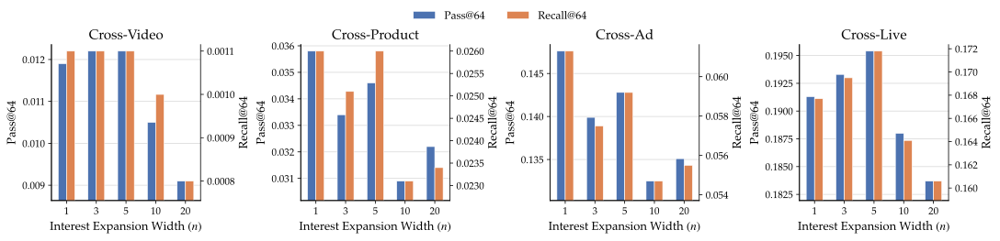
| Interest Expansion |
| 由【中年女性、家庭日用服装购买、关注穿搭/健康/房产家居】推测用户偏向家庭实用消费型用户，近期最明显的兴趣是家居清洁与子女衣着。从近期行为可发散出多个兴趣点：A. 家居清洁维护，表现为多次购买 <|prod_begin|><a_662><b_7813><c_7791> 等清洁产品，并长播 <|video_begin|><a_192><b_6421><c_6240> 等教程；B. 子女衣着，表现为搜索“青少年加长版的裤子新款男”并购买 <|prod_begin|><a_6266><b_6810><c_2477>；C. 健康养生，表现为关注 <|living_begin|><a_3241><b_7205><c_1272>、点击 <|prod_begin|><a_6655><b_5260><c_329> 及长播 <|video_begin|><a_5695><b_1638><c_6707>；D. 零食/食品，表现为搜索“馋嘴小零食”并购买 <|prod_begin|><a_6488><b_6398><c_7103>；E. 个人衣着与护肤，表现为购买 <|prod_begin|><a_8099><b_2904><c_503> 并长播 <|video_begin|><a_1409><b_4885><c_5059>；F. 房产与民生资讯，表现为完播民生、时政类内容，并浏览 <|video_begin|><a_4946><b_5797><c_6364>。 Analysis: the trace does not collapse the user into one label. It keeps several evidence-backed branches, each tied to concrete itemic-token evidence and a specific intent. |
| Transition Inference |
| 综合权衡，A(家居清洁)和B(子女衣着)是当前最直接、最可能延续的强需求，因为它们同时具备搜索、点击、购买和长播等多种证据，且都服务于家庭场景中的即时问题解决。C(健康养生)和D(零食/食品)也有明确行为支撑，但更像阶段性补充需求，通常会间歇触发；E(个人衣着与护肤)与用户长期画像一致，但近期行动密度弱于 A/B；F(房产与民生资讯)主要是信息浏览，不足以作为最强后续方向。因此，后续推荐应优先围绕家居清洁技巧、清洁产品测评、青少年男装选购以及实用的家庭生活小窍门展开，同时少量保留健康养生和食品补货作为辅助方向。 Target: <|video_begin|><a_6166><b_1595><c_1850> Analysis: the final step chooses the branches with both recency and action density, then emits the target itemic tokens only after the reasoning trace. |
转移推断
最后一个阶段将扩展后的假设与完整上下文进行比较，并选定最可能的后续交互方向。它通过要求建立从先前证据到后续需求的局部联系来复用 R1，并通过检查候选方向是否得到时间顺序、连续性、细化或行为闭环的支持来复用 R2。教师模型依据证据强度、近期性、连续性、画像兼容性、目标领域兼容性和泄漏风险，对每个假设进行权衡。这一比较与选定步骤避免轨迹仅仅罗列可能的兴趣，却不作出对推荐有用的决策。
以下约束使最终判断面向决策，并防止泄漏：
-
•
证据优先。由重复行为、主动搜索或近期密集交互支持的候选方向获得更高权重；仅由孤立或偶发行为支持的方向则被降低权重。
-
•
转移联系。轨迹应解释从先前证据到后续意图的联系。有效联系包括反馈、瓶颈、认知细化、场景延续、参数收窄或需求完成；仅有主题相似性并不充分。
-
•
粒度校准。最终判断应在证据允许的范围内尽可能具体。如果证据支持某款具体游戏、某一戏曲剧种、功能、商品属性或内容风格，轨迹就不应停留在粗粒度类别；如果证据不足，则应避免过度具体的断言。
-
•
冲突解决。当多个方向都合理时，轨迹比较它们与画像先验、近期行为、长期兴趣和目标领域的契合度，再选择最可能的方向。
-
•
泄漏控制。尽管数据构建期间可以看到目标交互，推理仍必须像答案未知一样撰写。它不能复制目标标题、暴露目标物品 id 或物品语义 token，也不能将仅出现在目标中的实体作为证据。
表 8 中的紧凑训练轨迹展示了：兴趣扩展如何保留几个有依据的方向，而转移推断如何选定最有力的延续方向。
通过画像抽象、兴趣扩展和转移推断，合成的 CoT 变得紧凑、细粒度且面向决策。前两个阶段对行为历史去噪并组织假设空间，最后一个阶段则复用 R1 联系推理和 R2 演化推理来比较候选转移。这一结构使 SFT 不仅能够学习最终的目标物品语义 token 预测，还能学习将用户证据与推荐决策连接起来的行为逻辑。
5.4.2 推理轨迹质量评估
我们从五个互补维度评估推荐推理轨迹的质量，每个维度都强调有用推荐认知的不同方面：它们评估轨迹是否避免直接泄漏答案，是否与预期目标一致，是否能够围绕用户行为展现逻辑上可迁移的推理，是否准确反映观察到的历史，以及是否为后续推荐提供可操作的指导。
-
•
安全性。检查 CoT 轨迹是否直接暴露目标内容，例如物品 id、物品语义 token、标题，或任何能够唯一确定目标的实体。安全的轨迹应在保持信息量的同时避免直接泄漏答案。
-
•
一致性。评估轨迹的结论、偏好方向和行为解释是否与预期推荐目标一致。一致的轨迹能够支持正确的下游预测。
-
•
逻辑性。衡量轨迹是否对用户行为展现可迁移、可泛化的推理，而不是表层拼接、牵强关联，或对单个实例的记忆。
-
•
事实性。确保轨迹准确反映观察到的用户历史。它检查是否存在虚构行为、错误归因、夸大趋势、时间混淆或缺乏支持的陈述。
-
•
信息量。评估推理是否在不泄漏目标的情况下，提供有用且具体的推荐指导。它应归纳可用于推荐的兴趣方向、场景、功能、风格、属性或排除条件。
这些维度共同提供了对轨迹质量的紧凑诊断视角。安全性约束泄漏，一致性检查目标对齐，逻辑性检查推理的可迁移性，事实性检查历史依据，信息量则检查轨迹是否为推荐提供清晰指导。因此，该评估能够区分仅仅语言流畅的轨迹与表达了有用推荐认知的轨迹。图 9 汇总了这五个维度的评分分布和平均得分情况。
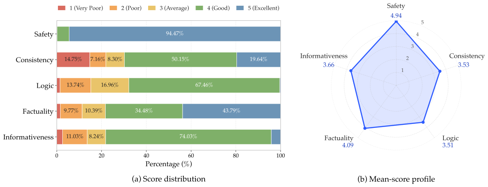
5.5 物品语义指令数据
物品语义指令数据改善了物品语义 token 显式出现在输入上下文中时的指令遵循行为。它对压缩–推理主干起到补充作用，确保包含大量物品语义 token 的输入仍可被指令控制，而不会被自动解释为推荐推理提示词。我们观察到，预训练模型在这类设置中往往表现不稳定：模型可能不遵循用户指令，而是忽略所要求的任务、解释特定物品语义 token 的含义，或隐式地将输入重新理解为用户兴趣分析问题。这种行为限制了模型在实际面向推荐的交互中的可用性。
为解决这一问题，我们构建了一个围绕以物品语义 token 为依据执行任务的专用指令微调数据集。数据生成从一组预定义任务标签开始，每个标签对应推荐与内容理解场景中的一种代表性指令类型。标签空间不仅关注物品语义 token 解码，还覆盖转换、检索、匹配、比较、生成、编辑、摘要，以及显式指令控制任务。针对每个标签，我们生成合适的指令，并将其与采样的用户侧材料配对，使每个示例都要求模型在含有物品语义 token 的输入下完成具体任务。代表性的双语训练案例见附录 D.4.1。主要任务组如下：
-
•
转换与编辑。这一组教会模型在物品语义 token 与自然语言之间转换、改写文本-token 对、将物品语义 token 替换为文本描述，或在指令约束下重新排列 token 序列。代表性指令为：“将下面的商品物品语义 token 转换为简短的商品介绍。”
-
•
检索与选择。这一组侧重于根据时间、行为、属性或交互顺序约束，从结构化用户上下文中检索物品语义 token。代表性指令为：“找出用户在给定时间窗口内交互过的所有视频物品语义 token。”
-
•
匹配与分类。这一组训练模型将自然语言描述与候选物品语义 token 匹配、选择最合适的 token-描述对、处理模糊匹配，或对物品语义 token 表示的场景进行分类。代表性指令为：“哪个物品语义 token 最符合‘降噪蓝牙耳机’这一描述？仅输出 token。”
-
•
比较与聚合。这一组要求模型比较物品语义 token 或 token 组、执行集合级操作，并将 token 序列归纳为紧凑的自然语言描述。代表性指令为：“用三句话比较这两个商品物品语义 token 在功能上的差异。”
-
•
生成与验证。这一组要求模型根据物品语义 token 关联的内容生成描述、宣传文案、受约束的摘要或验证结果。代表性指令为：“为以下商品物品语义 token 撰写一段 50 词的宣传文案。”
-
•
指令控制。这一组显式训练模型，即使物品语义 token 作为干扰上下文出现，也应遵循用户指令。它包括忽略无关 token、条件执行、保留文本的改写，以及受格式约束的回答生成。代表性指令为：“忽略下面的所有物品语义 token，并回答：推荐系统的主要评估指标有哪些？”
一个关键设计原则是，将物品语义 token 视为语义锚定信号，而不是解释的最终目标。其目的不是让模型孤立地解读 token 语义，而是训练模型正确使用与物品语义 token 关联的上下文，同时忠实遵循用户指令。这提高了模型在自然语言与 token 混合输入下的鲁棒性。在上述任务组中，指令控制类尤为重要，因为它直接教会模型优先考虑用户意图，即使包含大量物品语义 token 的上下文本来可能分散或误导生成。
为确保数据质量，在大规模扩充之前，我们先评估生成指令的可用性，并对最终样本执行基于规则的一致性测试，验证输入和输出中的物品语义 token 引用是否与关联材料匹配。存在无依据 token 引用、任务依据薄弱或意图不明确的样本会被移除。最终的物品语义 Token 指令数据集包含约 103.0K 个示例。总体而言，该数据集充当物品语义 token 感知交互的行为对齐层，提高模型在涉及结构化内容标识符的推荐场景中准确遵循指令的能力。
5.6 通用领域数据
为保留通用指令遵循能力，并缓解面向推荐的 SFT 中的过度专门化，我们引入阶跃星辰发布的公开 Step-3.5-Flash-SFT 数据集 (Huang et al., 2026)，作为通用领域数据源。我们对原始数据集进行保守预处理：丢弃包含工具使用轨迹的样本，避免引入超出本 SFT 设置范围的环境交互行为；仅保留符合标准三角色对话模式（即 system、user 和 assistant）的样本，以确保对话格式统一；移除结构异常、字段缺失或格式损坏的样本，进一步提高数据质量。预处理后得到约 1.5 M 个高质量 SFT 样本，将其混入训练数据，以保持广泛的指令遵循能力，并在领域专用微调过程中稳定通用响应行为。因此，通用领域数据在推荐认知周围发挥稳定作用，防止模型对物品语义 token 推理格式过拟合。
总体而言，这一 SFT 阶段在已对齐的物品语义感知之上构建结构化推荐认知：R0 锚定物品语义 token，R1 提供以证据为依据的推导，R2 提供时序演化监督，R3 将这些能力组合起来用于下一次交互预测。由于 R3 轨迹仍由教师模型生成，它们尚未通过推荐结果反馈进行优化。下一阶段通过面向推荐的 RL 闭合这一循环：领域专用 RL 首先在各领域内发现更强的推荐行为，随后 RFT/MOPD 将这些专用策略整合为统一的四领域推荐基础模型。
6 RL 流程
经过 SFT 阶段后，模型已具备通用语义理解、指令遵循以及初步的推荐推理能力。然而，SFT 主要使模型能够模仿教师生成的推理轨迹，所得性能仍在很大程度上受教师模型能力的限制。 由于模型已接触大规模推荐数据，并形成了较强的推荐能力，一个自然的下一步是检验模型能否超越模仿，通过自我探索进一步提升推荐推理能力。 近年来，强化学习（RL）已成为在监督训练之外进一步改进推荐模型的一条有前景的方向 (Tan et al., 2025; He et al., 2026; Zhou et al., 2026)。 然而，对于支持跨领域多样化任务的推荐基础模型，直接在混合领域数据上应用 RL 可能造成跨域干扰，因为不同领域往往具有不同的用户意图、物品语义和奖励结构。
为缓解这一问题，我们采用“先专门化再统一”的策略。 如图 10 所示，我们首先通过 RL 在各推荐领域分别优化模型，得到四个专门从事领域特定推荐推理的教师模型。 随后，我们研究两种将这些领域专门能力整合为统一模型的方法：拒绝采样微调（RFT），使用从领域专门教师中采样并验证的高质量推理轨迹来优化模型；以及多教师同策略蒸馏（MOPD），在学生模型自身生成的轨迹上，将多个领域特定策略蒸馏到学生模型中。
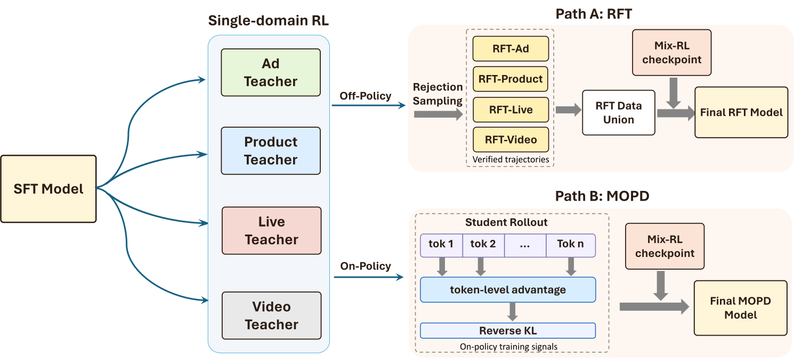
6.1 面向推荐的强化学习
我们首先使用 GRPO (Shao et al., 2024)，在各推荐领域分别优化模型；模型生成轨迹，并依据其预测的正确性获得结果反馈。
面向推荐的 GRPO。
对于用户 及其上下文（查询），模型将其作为输入，并采样一组推荐 rollout；每个 rollout 都由一条推理轨迹和生成的物品语义 token 构成，如图 11 所示。 形式化地，令
| (4) |
表示一组 个 rollout，它们是为用户 采样的，其中 为生成的推理轨迹， 为对应的物品语义 token。 每个 rollout 都由结果奖励 进行评估，该奖励衡量生成的物品语义 token 是否匹配目标推荐。 随后，GRPO 在同一组内对奖励进行归一化，得到相对优势：
| (5) |
其中， 是为保证数值稳定性而加入的小常数。 模型通过优化提高高优势 rollout 的概率；在这类 rollout 中，生成的推理轨迹导向与真实物品匹配的物品语义 token。
Rollout 设计。
虽然 GRPO 是增强推荐推理有效性的有力工具，但将其直接用于推荐任务仍面临实际挑战。 推荐任务需要模型从海量候选空间中预测用户兴趣，这一特性使其命中率天然较低，需要足够大的 rollout 规模才能获得有用的奖励信号。 对于推理增强的推荐，这一成本尤其高，因为每次推荐之前都要生成一条推理轨迹。
为解决这一问题，我们为面向推荐的 RL 设计了两阶段 rollout 策略。 如图 11 所示，核心思想是将推理成本分摊到多次推荐上。 对于每个用户 ，我们首先采样 条推理轨迹 。 随后，以每条推理轨迹 为条件，模型并行生成 条物品语义 token 序列， ，其中
| (6) |
这样可以获得 个有效推荐 rollout，同时只需生成 条推理轨迹。 由于额外扩展仅限于较短的物品语义 token，因此只需有限的额外计算与内存开销，就能显著提高奖励覆盖。
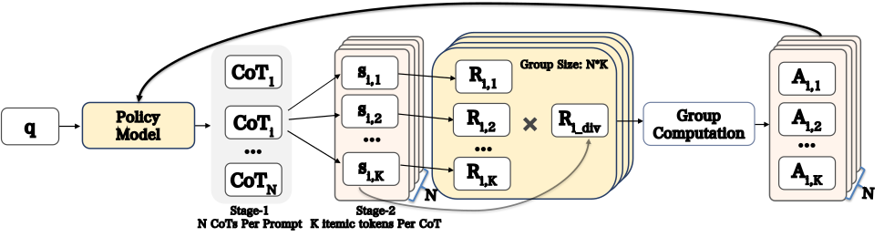
奖励设计。
推荐任务注重集合级优化，模型应召回一组相关物品，而非仅优化单次预测。 由于用户兴趣往往具有多个侧面，理想的推理轨迹应覆盖满足用户兴趣的多样化相关物品。 因此，对于两阶段解码过程产生的 个 rollout，我们为每个 rollout 分配混合奖励，同时考虑物品级准确性和各推理轨迹所产生推荐的多样性。 对于每个 rollout ，相应奖励定义为
| (7) |
其中， 基于预测的物品语义 token 提供主要准确性信号，而 评估同一推理轨迹所产生推荐的多样性。 基于规则的奖励评估预测的物品语义 token 是否命中真实集合 ：
| (8) |
推荐旨在为每个用户生成一组物品，而用户兴趣可能跨越多个类别。因此，理想的推理轨迹应引导模型生成类型多样的推荐物品。 我们通过在同一推理轨迹生成的 条物品语义 token 序列上计算额外奖励，来鼓励这种多样性。 具体而言，我们关注物品语义 token 的第一位编码，因为第一个子 token 在很大程度上决定后续解码过程，并捕捉粗粒度物品类别。 令 表示 中第一位编码不同取值的数量。 多样性因子定义为
| (9) |
鼓励第一位编码的多样性能够扩大类别级覆盖，自然带来更多样化的物品预测。 因此，最终奖励 会为既匹配目标物品、又带来更好推荐多样性的轨迹分配更高奖励。 多样性奖励定义在推理轨迹层面，因为从同一推理轨迹生成的所有 条物品语义 token 序列都共享相同的多样性因子 。
优化。
GRPO 使用裁剪来约束更新后策略与行为策略之间的重要性比率，从而稳定策略更新。 对于每个生成的 token ，重要性比率定义为
| (10) |
然而，在推理增强的推荐中，推理 token 和物品语义 token 表现出显著不同的行为特征。 推理轨迹较长，主要支持探索；最终的物品语义 token 序列虽短，却直接决定推荐奖励。 对两个阶段使用相同的裁剪范围，可能使物品语义 token 分布变化过于激进，导致熵坍缩。 因此，我们采用分阶段裁剪，对推理 token 使用较宽松的裁剪范围，对物品语义 token 使用更严格的裁剪范围，如图 12 (a) 所示。 具体而言，我们使用两个阶段各自的裁剪范围，
| (11) |
其中， 比 更宽松。 对于每个 token ，根据其所属阶段选择裁剪范围：
| (12) |
其中，。 这既保留了推理探索，又稳定了最终推荐 token 的更新。
为在稀疏推荐奖励下进一步稳定 GRPO，我们对 actor 损失应用样本级重要性重加权方案，如图 12 (b) 所示。 由于只有少量 rollout 能命中真实目标，大多数 rollout 获得零奖励，并产生负的相对优势。 如果不进行重加权，这些数量众多的未命中样本可能主导聚合梯度，使策略更新过度保守 (Ren and Sutherland, 2025; Gao et al., 2025)。 计算组内相对优势后，根据每个 rollout 的命中状态为其分配一个标量权重：
| (13) |
其中， 控制未命中 rollout 的贡献。 该权重作用于 rollout 的整个响应级 actor 损失，而优势估计保持不变。 这保留了成功 rollout 的完整梯度贡献，并降低未命中 rollout 的权重，在不改变 GRPO 目标形式的情况下，减轻负优势样本的主导作用。
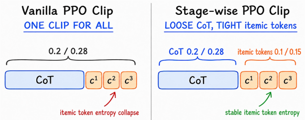
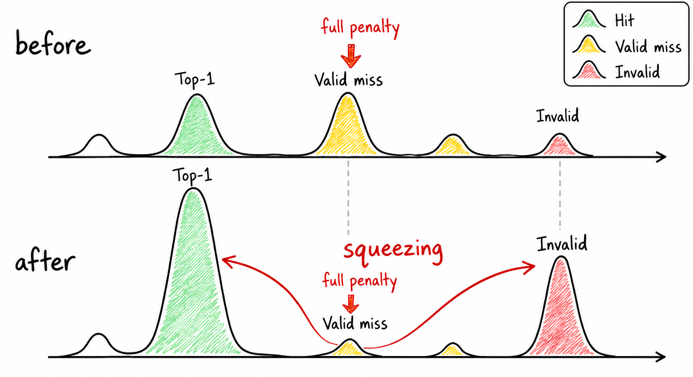
消融研究。
我们首先研究两阶段 rollout 设计的影响，在相同有效 rollout 规模下，将采用完整推荐导向优化的 GRPO 与移除两阶段 rollout 的消融版本进行比较。 如图 13 所示，我们同时评估训练效率和推荐性能。 蓝色曲线对应采用完整优化的 GRPO，橙色曲线对应消融变体。 在性能方面，我们在思考和非思考两种推理模式下，使用 Recall@1 和 Recall@8 评估 Cross-Live 推荐任务。
两阶段 rollout 通过在多条物品语义 token 序列间复用每条生成的推理轨迹，避免重复生成长推理前缀，从而显著缩短每步训练时间。 同时，性能结果呈现一致增益，其中思考模式下的改善尤为明显。 这些结果表明，从同一推理轨迹扩展多次推荐，能够为每条推理路径提供更密集的奖励反馈，使 GRPO 更有效地优化面向推荐的推理。
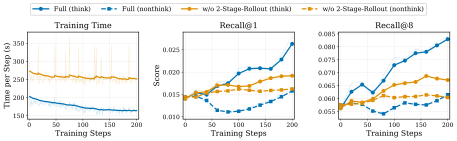
我们进一步使用相同的消融设置评估多样性奖励的影响，其中消融版本从完整奖励设计中移除了 。 我们在思考和非思考两种推理模式下，使用 Recall@1、Recall@8 和 Recall@32 在 Cross-Live 上评估这些方法。蓝色曲线表示完整优化的方法，橙色曲线表示消融版本。 鼓励同一推理轨迹后续生成的物品语义 token 序列具有多样性，有助于模型召回更广泛的潜在物品。因此，如图 14 所示，多样性奖励提升了推理的有效性，并且在以较大 评估 Recall@ 时增益更加明显。
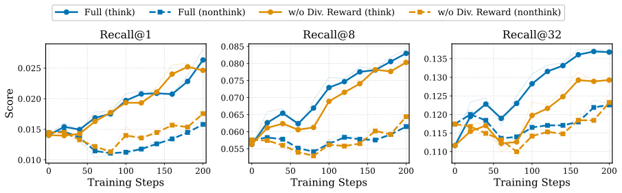
最后，我们分析优化侧的两项稳定机制：分阶段裁剪与负样本降权。 对于分阶段裁剪，消融版本对推理 token 和物品语义 token 使用相同的裁剪范围。对于负样本降权，消融版本移除了样本级权重 。 图 15 展示了分阶段裁剪的消融结果，图 16 展示了负样本降权的消融结果。 两项设计均有助于提高训练稳定性与性能。 移除分阶段裁剪会削弱推荐性能，尤其是 Recall@8 和 Recall@32 上的推理有效性，这表明在策略优化中，推理 token 和物品语义 token 分别受益于不同的信赖域。 移除负样本降权后，大量未命中 rollout 与成功 rollout 被赋予相同权重，使 GRPO 在稀疏推荐奖励下的优化更加不稳定。 如图 16 所示，消融模型的训练坍缩风险更高，表现为更容易生成无效物品语义 token，并因此导致推荐性能下降。
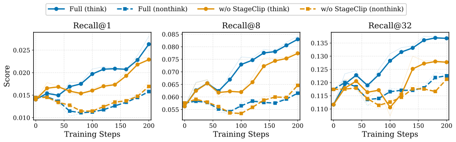
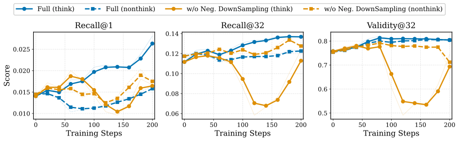
GRPO 通过在线学习强化推理，但对罕见而正确的轨迹样本效率较低。拒绝采样微调（第 6.2 节）是自然的离线补充：它收集少量自行发现的高质量 rollout，并将其作为密集监督重新注入，从而巩固那些广泛有用、但仅靠 GRPO 容易在更新间遗忘的行为。
6.2 拒绝采样微调
我们首先探索拒绝采样微调（RFT），以整合领域专门教师模型的知识。RFT 从每个教师中选择经过验证的成功轨迹，并在汇总的轨迹集合上继续监督训练，从而迁移领域特定的推理能力。
RFT 流程。
虽然领域特定的 GRPO 通过结果驱动的探索改进模型，但其策略优化也会使输出分布变得更尖锐，让模型集中于少数高置信度物品 (Chen et al., 2026c)。这可以改善排在最前的预测，却并不完全符合推荐目标；推荐期望模型预测出一组能够覆盖多样化用户兴趣的潜在物品。 因此，仅靠 RL 优化可能对最终推荐任务的改善有限，尤其是在模型需要召回更广泛相关物品集合时。
为补充 GRPO，我们引入拒绝采样微调（RFT）作为整合方法。 每个领域专门的 GRPO 模型都作为教师，生成推理增强的推荐轨迹。 对于每个用户 ，我们保留预测物品命中真实集合 的轨迹，滤除低质量或不一致的推理轨迹，再合并四个领域中剩余的已验证轨迹。 由此得到汇总的拒绝采样数据集
| (14) |
其中， 表示用户上下文， 为经过验证的推理轨迹， 为相应的物品语义 token。
在 RFT 之前，我们首先将 GRPO 应用于覆盖所有领域 R2 演化与 R3 推荐任务的混合数据，训练至收敛，得到 Mix-RL 检查点。 以此检查点初始化统一模型后，使用标准的下一 token 预测目标，在 上进一步训练：
| (15) |
通过这种方式，RFT 将 RL 发现的领域特定推理模式迁移到单一模型中，同时保持基于下一 token 预测的更平滑训练目标。
性能分析。
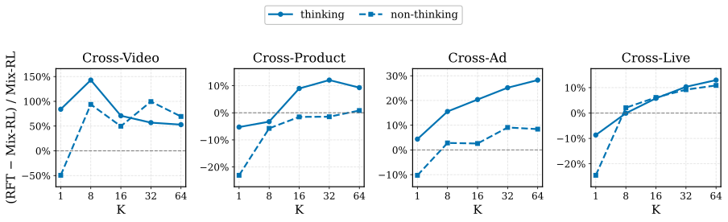
为分析 RFT 的有效性，我们以混合领域 RL 为基线，在四个推荐领域上比较 RFT 的性能。我们报告 RFT 相对 Mix-RL 在 Recall@ 下的改善，其中 。这一评估考察 RFT 是仅改善排名第一的预测，还是在要求模型召回更大相关物品集合时带来更广泛的增益。
如图 17 所示，RFT 并非总能改善 Recall@1，尤其是在 Cross-Product 和 Cross-Live 上，较小 时的相对改善往往为负或接近零。然而，随着 增大，RFT 在各领域都持续表现出更强优势。在较大 时，多数领域的改善尤其明显，并在所有评估截断位置上取得较大的正向增益。这一趋势表明，RFT 较少着眼于强化单个最高排名预测，而在改善候选覆盖方面更有效。这种行为更符合推荐目标：模型应召回一组能够覆盖多样化用户兴趣的相关物品，而非仅优化第一个预测。
6.3 多教师同策略蒸馏
本节介绍多教师同策略蒸馏 (Xiao et al., 2026; Yang et al., 2026; Dou et al., 2026; DeepSeek-AI, 2026)，以同策略方式将四个领域的专门能力整合到统一学生模型中。 我们采用蒙特卡洛 RL 表述 (Li et al., 2026)，即每一步仅在学生自身采样的 token 上计算对数概率比。 这将优化目标转化为对采样轨迹的期望。 因此，只需向教师查询采样 token 上的单点对数概率，无需要求教师提供完整词表分布。 这一基于 RL 的表述之所以有效，源于 OneReason 的训练流程：学生模型已具备所有目标领域的基础能力。 因此，学生的策略分布与教师策略并不存在显著偏离。 这种分布接近性自然约束了单点对数概率估计的方差。 因此，我们能够避开通常困扰稀疏 RL 更新的严重高方差不稳定性，在保持训练稳定的同时显著提高计算效率。
MOPD 目标。
形式化地，令 表示部署在推理引擎中、用于生成轨迹的学生行为策略， 表示在训练引擎中正在优化的策略。对于给定提示 ，我们首先采样一个完整 rollout 。依据 所需的特定能力领域，将该提示路由给对应的领域专家教师，记为 。在自回归两阶段 rollout 的每个时间步 ，我们将反向 KL 目标下的 token 级蒸馏优势定义为：
| (16) |
由于轨迹由行为策略 生成，却在目标策略 下优化，我们引入截断重要性加权 ，以修正这一离策略差异：
| (17) |
其中， 表示停止梯度。随后，将 MOPD 的代理损失定义为：
| (18) |
优化。
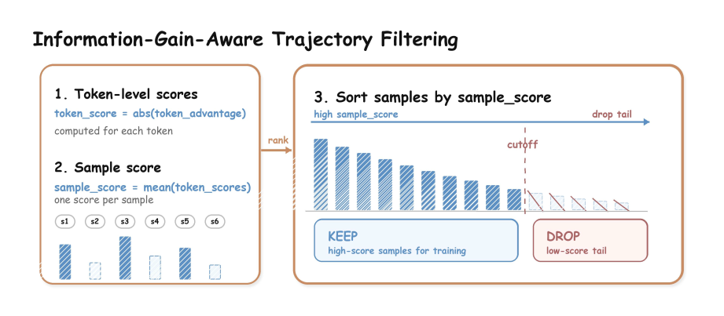
生成式推荐天然面临海量物品候选空间与高度稀疏用户兴趣信号的挑战。 在同策略训练中，这体现为轨迹 rollout 过程中的极低命中率。 在此类环境中应用 MOPD 时，若对所有采样 rollout 一视同仁，将导致严重的梯度稀释问题。 具体而言，学生模型很快就在通用、热门的“头部”物品上与教师对齐，使 token 级优势接近零（）。 因此，对“尾部”物品而言罕见但至关重要的领域特定知识会完全淹没在已对齐或含噪样本产生的冗余梯度中；而专门教师的知识在这些物品上最有价值，其特征是较高的 。 为解决这一问题，我们采用信息增益感知的轨迹筛选机制 (Chen et al., 2026b)，如图 18 所示。 在数学上，绝对优势 量化了教师提供的即时信息增益。 我们动态丢弃低信息量轨迹，促使学生聚焦于差异最大、信息量最高的 rollout。这对于防止策略性能在天然低命中率的环境中退化至关重要。
具体而言，我们将 token 级优势差距用作信息增益的无标签指标。 为量化与教师的整体偏离，我们计算每条轨迹 上按 token 平均的绝对差距，作为其信息量得分 ：
| (19) |
这一绝对值得分自然捕捉了双向纠正需求：它既能识别学生对错误路径过度自信的情况（），也能识别学生未能掌握教师领域特定知识的情况（）。
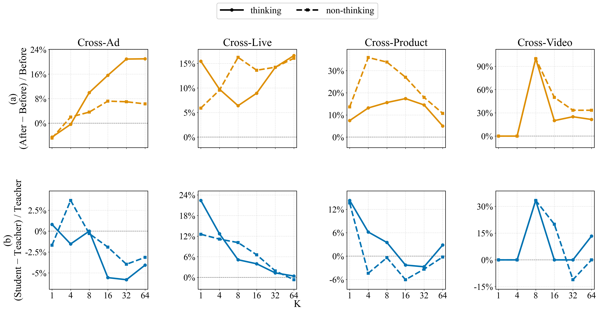
给定训练批次 和目标信息增益比例 （例如 ），我们按信息量得分对所有采样 rollout 降序排列，得到序列 。 为有效滤除冗余且已对齐的 rollout，我们确定最小前缀长度 ，使其能够覆盖目标信息增益比例 ：
| (20) |
随后，将保留用于优化的活跃子集定义为 。通过丢弃低信息量 rollout，我们确保优化预算专门集中于最具挑战性、信息量最高的样本。 最终的 MOPD 目标仅在筛选后的子集 上计算。
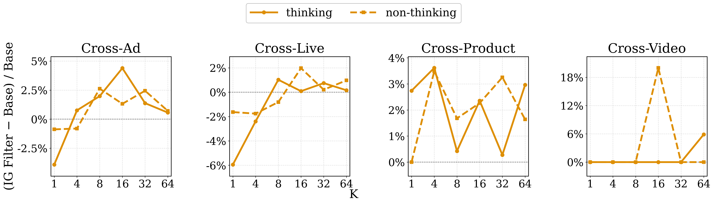
性能分析。
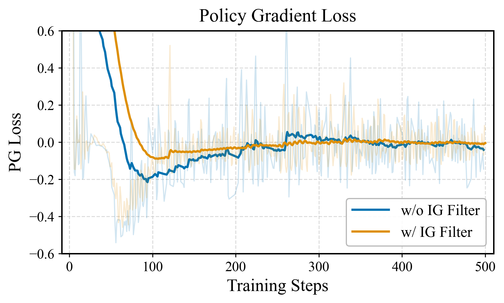
如图 19 (a) 所示，所提出的训练范式在所有评估领域都带来了严格为正的性能增益。 值得注意的是，几乎所有领域的相对改善都会随着 增大而扩大。 这表明 MOPD 有效激活了学生模型在海量候选空间中的长尾排序能力。 此外，在 Ad 和 Live 领域，思考模式在较大 时呈现出比非思考模式更陡的增长趋势。 这表明显式推理过程显著拓宽了搜索边界，能够召回仅凭直觉（非思考）可能遗漏的、难以找到的尾部物品。 图 19 (b) 表明，当 时，学生与教师完全持平或超过教师；但在 时仍存在差距。 这一剩余差距是由反向 KL 目标决定的根本性理论限制。 由于反向 KL 目标天然具有模式寻求特性，它在 时能够完美捕捉教师的主要概率峰。 尽管我们的主动筛选方法最大限度地提取了教师的长尾信息，但要完美复现教师的完整分布仍然具有挑战。
消融研究。
我们首先分析信息增益感知轨迹筛选机制的影响。 图 21 展示了策略梯度（PG）损失。不采用筛选的 MOPD（蓝色）方差更大，初期下降陡峭，表明优化不稳定，并且过拟合于冗余的“头部”物品。 相比之下，采用筛选的 MOPD（橙色）通过专注于高信息量样本，显著抑制梯度噪声，使收敛更加平滑、稳定。
图 20 中的相对 Recall@ 曲线，直接实证验证了我们的核心动机，即根据轨迹级信息增益重新分配梯度预算。 优化预算成功集中于高差异、高信息量样本（）。 这种集中的梯度流直接转化为从 开始陡峭上升、并最终在 获得正向增益的性能趋势。 通过将训练重点从冗余的简单物品转移到具有挑战性的长尾物品，我们的筛选机制有效缓解了梯度稀释瓶颈，使统一学生在高度受限的参数预算下，仍能掌握专家教师的专门长尾能力。
此外，我们研究了不同学生模型选择的影响，包括 SFT、SFTRFT 和 SFTMix-RL。 如图 22 所示，三种学生模型都能从 MOPD 训练中受益。 当学生与教师分布大致对齐时，即使学生初始水平不同，MOPD 仍能持续将学生性能提升至接近、甚至略高于教师的水平。 这表明教师的能力上限限制了 MOPD 的改善幅度。具体而言，即使较弱的学生也能追上教师，但很难显著超越教师。
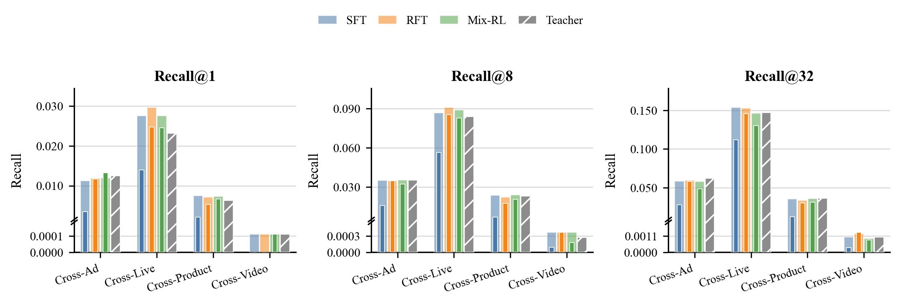
| Domain | Metric | Mode | SFT | Mix-RL | Single-RL | RFT | MOPD |
| Cross-Video | Recall@1 | thinking | 0.00 | 0.01 | 0.01 | 0.01 | 0.01 |
| non-thinking | 0.01 | 0.01 | 0.01 | 0.01 | 0.01 | ||
| Recall@8 | thinking | 0.01 | 0.02 | 0.03 | 0.05 | 0.04 | |
| non-thinking | 0.02 | 0.02 | 0.03 | 0.04 | 0.03 | ||
| Recall@16 | thinking | 0.02 | 0.05 | 0.06 | 0.08 | 0.06 | |
| non-thinking | 0.03 | 0.04 | 0.05 | 0.06 | 0.05 | ||
| Recall@32 | thinking | 0.03 | 0.08 | 0.10 | 0.13 | 0.10 | |
| non-thinking | 0.06 | 0.06 | 0.09 | 0.12 | 0.08 | ||
| Recall@64 | thinking | 0.06 | 0.14 | 0.15 | 0.24 | 0.18 | |
| non-thinking | 0.11 | 0.12 | 0.16 | 0.19 | 0.16 | ||
| Cross-Product | Recall@1 | thinking | 0.21 | 0.67 | 0.63 | 0.67 | 0.67 |
| non-thinking | 0.26 | 0.66 | 0.66 | 0.55 | 0.76 | ||
| Recall@8 | thinking | 0.69 | 2.05 | 2.29 | 2.06 | 2.36 | |
| non-thinking | 1.14 | 1.83 | 2.46 | 1.82 | 2.42 | ||
| Recall@16 | thinking | 0.94 | 2.53 | 3.04 | 2.83 | 2.98 | |
| non-thinking | 1.69 | 2.44 | 3.30 | 2.63 | 3.05 | ||
| Recall@32 | thinking | 1.22 | 3.10 | 3.65 | 3.54 | 3.62 | |
| non-thinking | 2.32 | 3.18 | 3.88 | 3.24 | 3.80 | ||
| Recall@64 | thinking | 1.65 | 3.79 | 3.87 | 4.19 | 4.11 | |
| non-thinking | 2.96 | 3.83 | 4.25 | 3.96 | 4.34 | ||
| Cross-Ad | Recall@1 | thinking | 0.35 | 1.32 | 1.25 | 1.34 | 1.23 |
| non-thinking | 1.07 | 1.23 | 1.19 | 1.10 | 1.14 | ||
| Recall@8 | thinking | 1.56 | 3.21 | 3.53 | 3.67 | 3.67 | |
| non-thinking | 3.02 | 3.33 | 3.46 | 3.41 | 3.53 | ||
| Recall@16 | thinking | 2.11 | 3.97 | 4.86 | 4.80 | 4.76 | |
| non-thinking | 4.16 | 4.31 | 4.71 | 4.46 | 4.58 | ||
| Recall@32 | thinking | 2.78 | 4.83 | 6.20 | 6.14 | 5.94 | |
| non-thinking | 5.37 | 5.44 | 6.06 | 5.84 | 5.84 | ||
| Recall@64 | thinking | 3.41 | 5.86 | 7.39 | 7.50 | 7.19 | |
| non-thinking | 6.49 | 6.68 | 7.33 | 7.26 | 7.13 | ||
| Cross-Live | Recall@1 | thinking | 1.40 | 2.46 | 2.32 | 2.53 | 2.67 |
| non-thinking | 1.45 | 2.37 | 2.23 | 1.96 | 2.41 | ||
| Recall@8 | thinking | 5.63 | 8.29 | 8.39 | 8.70 | 8.82 | |
| non-thinking | 5.76 | 7.39 | 7.80 | 7.82 | 8.58 | ||
| Recall@16 | thinking | 8.18 | 10.63 | 11.14 | 11.49 | 11.46 | |
| non-thinking | 8.34 | 9.99 | 10.65 | 10.63 | 11.18 | ||
| Recall@32 | thinking | 11.17 | 13.03 | 14.69 | 14.63 | 14.82 | |
| non-thinking | 11.74 | 12.86 | 14.42 | 14.25 | 14.71 | ||
| Recall@64 | thinking | 14.32 | 16.03 | 18.62 | 18.35 | 18.89 | |
| non-thinking | 15.52 | 16.09 | 18.80 | 18.17 | 18.66 |
6.4 比较与讨论
本节比较五种优化策略的推荐准确性：SFT 检查点、混合领域 RL、领域特定 RL、RFT 和 MOPD。评估在跨域推荐设置下进行，报告 Cross-Video、Cross-Product、Cross-Ad 和 Cross-Live 任务的 Recall@K。这一比较使我们能够检验：模型是否通过自我探索学会了更好的推理，“先专门化再统一”策略是否缓解了跨域干扰，以及不同教师知识整合方法如何影响最终性能。
如表 9 所示，所有 SFT 后优化方法都在所有领域和指标上显著优于 SFT 基线，表明通过自我探索学习能够在监督模仿之外进一步提升推荐性能。然而，在 RL 中直接混合所有领域并不能始终取得最佳性能。与领域特定 RL 相比，混合领域 RL 的性能通常更弱，说明异质领域可能引入相互冲突的优化信号。两种知识整合方法随后提供了互补收益。RFT 带来显著且稳定的增益，尤其是在 Cross-Video 上，表明经过验证的成功轨迹能够有效巩固领域特定推理模式。MOPD 表现具有竞争力，并在若干设置下取得最佳结果，说明策略级蒸馏在某些领域能够更好地保留教师偏好。总体而言，这些结果支持“先专门化再统一”策略的有效性：领域特定 RL 首先发现有效推理行为，后续知识整合再将这些领域专门能力迁移到统一模型中。
我们进一步比较 MOPD 和 RFT 两种整合范式的影响，得到以下发现：
-
•
MOPD 和 RFT 各有领域特定的优势。MOPD 在 Product 和 Live 领域表现更优，甚至显著超过 Live 教师。相对而言，RFT 持续保持相对 MOPD 的小幅而稳定优势，尤其是在 Video 和 Ad 领域中 较大时。
-
•
RFT 始终使思考模式在所有领域和所有 值下优于非思考模式。相比之下，MOPD 在思考与非思考模式下的改善高度同步，非思考模式也取得了具有竞争力的增益。
这一分歧源于推荐任务极端稀疏的奖励，以及两种范式不同的采样动态：
-
•
RFT：在海量物品候选空间中，成功推理路径极为稀疏。RFT 通过离线执行多次 rollout 并严格只保留产生正确结果的轨迹，绕过这一探索瓶颈。这一拒绝采样过程只提炼 CoT 与正确推荐在逻辑上对齐的“黄金”推理路径，从而确保稳定的推理收益（）。
-
•
MOPD：相反，MOPD 依赖同策略蒸馏，在所有 rollout 上持续将学生生成的分布与教师对齐，无论 CoT 是否完全命中目标。由于学生在共享参数空间中处理这些 rollout，这种持续蒸馏会整体校准从提示到物品的基础语义嵌入。因此，非思考能力本身也得到大幅增强。由此，MOPD 带来同步提升：它改善 thinking 能力，同时也深度强化底层“直觉”（non-thinking）。然而，成功的 CoT 极为稀疏。若不对正确 CoT 进行严格的离策略筛选，同策略过程就不可避免地从较弱先验中吸收含噪或缺乏依据的 CoT 步骤。这些噪声可能使思考模式无法充分释放其理论优势，从而难以持续超越已被大幅增强的非思考基线。
7 CoT 分析指标
除了目标准确率之外，推荐推理轨迹的实际效用还取决于以下方面：CoT 是否确实有助于最终的物品语义模式预测，是否忠实于观察到的用户历史，是否遵守物品语义 token 空间的结构约束，以及是否遵循连贯的意图演化轨迹。近期证据表明，基于物品语义 token 的推荐基础模型中的自由形式推理可能引入通用子空间先验，使文本惯性主导推断，并稀释关键的物品语义模式证据 (Zhang et al., 2026b)。受这一观察启发，我们设计了一个包含四项准则的诊断框架，用于评估生成 CoT 轨迹的质量。 我们沿两个正交轴组织这些准则，共同覆盖推荐推理轨迹的完整诊断范围。四项准则分别占据这一 矩阵中的一个单元格（表 10）。
-
•
符号检查与 概率检查（检查的类型是什么？）。符号检查将 CoT 中引用的离散物品语义模式集合与静态参考集进行比较；它只需要字符串解析和集合操作，无需模型前向传播，也无需访问 。概率检查考察 CoT 如何改变目标 的条件对数似然；它同时需要模型前向传播和真实标签，因此成本严格更高，但能够直接衡量预测效果。
-
•
局部检查与 全局检查（参考范围是什么？）。局部检查与范围较窄、限定在单个实例内的参考进行比较（当前用户的历史，或紧接在前的推理前缀）。全局检查与范围较广、限定在语料库或轨迹内的参考进行比较（完整物品目录，或将整个 CoT 与无 CoT 基线对比）。
| Global (corpus-/trace-bounded) | Local (instance-bounded) | |
| Probabilistic | C1: | C2: progression |
| Symbolic | C3: | C4: |
准则 1：CoT 似然增益。
我们首先量化生成的 CoT 是否对真实目标的预测有正面贡献。受 (Zhang et al., 2026b) 中关于 CoT 引起的分布偏移分析的启发，我们将 CoT 似然增益定义为：
| (21) |
其中， 表示输入上下文，包括用户画像和交互历史， 表示生成的 CoT， 为真实目标物品语义模式。 为正意味着以 CoT 为条件提高了模型对正确目标的似然，而负值则表明 CoT 使模型偏离了基于历史的物品语义模式证据。
如图 23 所示，对于每个模型-领域组合，我们严格计算 ：将以生成 CoT 为条件进行预测的思考模式下的目标对数似然，与不使用 CoT、直接根据输入上下文预测目标的非思考模式下的目标对数似然进行比较。随后，我们报告 SFT 和 RFT 模型在四个领域中的逐样本平均 。SFT 模型在所有领域中的 均为负，表明其生成的 CoT 往往使模型偏离真实目标预测。相比之下，RFT 模型在全部四个领域中的 均为正，说明 RFT 阶段显著增强了所生成 CoT 对真实目标预测的正向贡献能力。
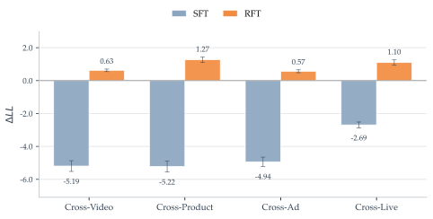
准则 2：沿 CoT 的对数似然变化。
高质量推理轨迹应随着推理过程展开，逐步增强模型对真实目标的置信度。为刻画这种意图演化行为，我们考察目标似然沿 CoT 如何变化。
为获得中间推理单元，我们使用 DeepSeek (DeepSeek-AI, 2026) 将原始 CoT 划分为一系列语义连贯的推理片段：
| (22) |
对于分段 CoT 的每个前缀，我们计算真实目标的条件对数似然：
| (23) |
如图 24 所示，在思考模式设置下，逐步纳入分段 CoT 前缀，能够持续提高 SFT 和 RFT 模型对真实目标的条件对数似然。与无 CoT 的思考模式预测相比，随着推理片段增多，四个领域的似然轨迹均显著上升，说明生成的 CoT 提供了增量预测证据，而非仅充当事后解释。这一趋势在两个优化阶段均可观察到：SFT 模型已经能够受益于 CoT 前缀，RFT 模型则进一步在各领域表现出更强、更稳定的似然提升。尽管少数领域在较后的前缀处出现轻微波动，但整体上升趋势表明，在思考模式推理设置下，当前模型能够有效利用自身生成的 CoT，增强对真实目标的置信度。
尽管 SFT 和 RFT 都能受益于逐步纳入 CoT 前缀，但 RFT 明显更早达到饱和，仅经过少数几个推理片段就接近最优似然。这表明，并非所有生成的推理 token 都对预测贡献相同；使用缩短的 CoT 就能获得相当一部分预测增益，为未来探索推理压缩或自适应提前停止机制留下了空间。
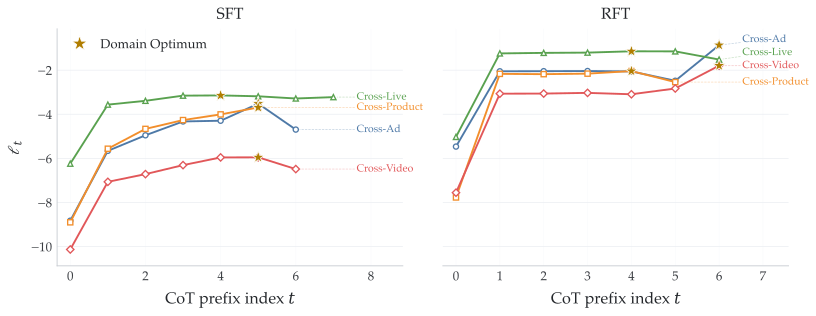
准则 3：物品合法性。
CoT 引用的每个物品语义模式也都应对应物品库中的一个有效标识符。令 表示完整物品目录。我们将物品合法率定义为：
| (24) |
无效物品语义模式表明推理轨迹包含结构上不合法的物品标识符，可能为后续物品语义 token 预测引入噪声。如表 11 所示，在全部四个领域中，SFT 和 RFT 的 均已饱和至 ，为评估准则 4 中的条件历史锚定指标提供了清晰基础。
准则 4：历史物品引用有效性（以物品合法为条件）。
由于我们的提示词明确约束 CoT 只能根据观察到的用户历史进行推理，CoT 提到的每个合法物品语义模式还应对应用户交互历史中实际出现的物品。与直接在 上计算原始历史锚定率不同，我们以满足物品合法性为条件进行衡量：先将引用集合限制在其合法子集 ，再衡量该子集中得到用户历史 支持的比例。这显式地将违背历史的幻觉这一正交失效模式，与准则 3 捕捉的上游非法标识符生成失效分离。形式化地，
| (25) |
其中， 表示从 CoT 中提取的物品语义模式集合， 表示交互历史中出现的物品语义模式集合。较低的 表明，即使过滤掉非法引用，CoT 仍引入了不受观察历史支持的物品语义模式，即 违反提示词约束、超出用户实际行为范围的幻觉推理。
| Metric | Method | Video | Ad | Live | Product |
| SFT | 100.00 | 100.00 | 100.00 | 100.00 | |
| RFT | 100.00 | 100.00 | 100.00 | 100.00 | |
| SFT | 97.50 | 94.93 | 100.00 | 97.92 | |
| RFT | 100.00 | 99.20 | 98.82 | 83.33 |
定性示例：同一用户上的 SFT 与 RFT。
为补充准则 1–准则 4 的汇总诊断，我们 展示一名具有代表性的用户；对于该用户，SFT 和 RFT 模型在 相同输入上下文上生成了明显不同的推理轨迹。 该用户是一名 18–23 岁的男学生，其近期交互 历史主要包括战术射击游戏直播、智能手机评测 和零食购买；真实的下一物品是一个讲解 《三角洲行动》中装备的视频。这是一款近期发布的战术射击 游戏，用户仅通过信息流广告点击过 一次，也就是说，该目标需要跨 IP 泛化，而非仅仅重放历史。 表 12 和表 13 逐字呈现了两条 CoT 轨迹，并按相同的 画像抽象 兴趣扩展 转移推断结构组织，以便直接比较。
| Persona Abstraction |
| 用户是一名 18–23 岁的男性中学生，有伴侣，从历史行为来看，他属于典型的“游戏直播观众”与“Z 世代潮流青年”的混合体。最直接的证据是：他近期大量观看、评论和打赏《和平精英》、《王者荣耀》等射击与 MOBA 类游戏直播如 <|living_begin|><a_1659><b_7342><c_6278>、<|living_begin|><a_3713><b_4342><c_6278>，并频繁点击和长播相关游戏攻略视频如 <|video_begin|><a_1985><b_581><c_1414>；同时，他对数码产品（尤其是手机）表现出浓厚兴趣，多次点击手机评测与对比内容如 <|video_begin|><a_7328><b_7546><c_698>，并购买过动态壁纸等个性化商品如 <|prod_begin|><a_2877><b_4537><c_6971>。因此，他的核心兴趣高度集中在战术竞技类游戏（特别是《和平精英》及其衍生模式“地铁逃生”）、高性价比数码产品（尤其是手机）以及由此衍生的游戏装备交易/账号服务上。 Analysis: this first segment is persona abstraction: it compresses the raw history into a user state and dominant preference factors, rather than expanding future hypotheses. |
| Interest Expansion |
| 基于此进行可能性发散：A. 用户最可能继续深入关注《和平精英》的游戏内容更新或装备获取技巧，因为这是其长期稳定投入的核心领域；B. 由他对高性能手机的兴趣延伸至最新款机型的评测或促销信息；C. 其对短剧类型[复仇_女性成长]等有一定消费记录，在碎片时间可能被类似强情节的娱乐内容吸引。 Analysis: the SFT trace stays at the surface IP layer—every branch is named by an existing IP the user has already heavily consumed (Peace Elite, smartphone reviews, short dramas), with no abstraction to a latent category axis. |
| Transition Inference |
| 权衡来看，A 的可能性最大且最直接。用户近期互动密集围绕《和平精英》，包括在 <|ad_begin|><a_5687><b_6727><c_2789> 点击该游戏广告、长播多个赛季更新视频如 <|video_begin|><a_5632><b_1206><c_6057>，并首次打赏了提供装备交易服务的游戏主播 <|living_begin|><a_1790><b_1523><c_7951>。这些行为表明他正处于对该游戏操作细节和资源获取的高度活跃期。B 方向虽然相关，但更偏向于间歇性消费需求；C 方向则与其主要互动轨迹关联较弱。因此，后续交互极有可能仍是围绕《绝地求生》或《和平精英》这类战术竞技游戏的具体玩法展示、新赛季活动介绍或高水平玩家操作集锦展开。 Target: 《三角洲行动》装备讲解/装备玩法视频 (cross-IP target, only one prior ad-click exposure in history). Analysis: the conclusion is an in-IP replay of the user’s strongest historical signal. The correct genre is captured, but the target IP family is missed—consistent with the negative regime of SFT. |
相比之下，RFT 模型面对完全相同的输入 上下文，生成的推理轨迹以基于物品目录的 量化先验开篇，并将候选空间从单一 IP 提升到 潜在类别轴，如表 13 所示。 关键增益来自 R1 衍生的兴趣演化：RFT 并非简单重现 《和平精英》或 PUBG 等表层名称，而是将它们连接到 战术射击类别，再连接到《三角洲行动》，其中借助的是一个较弱、但得到 历史支持的广告点击信号。
将该案例与四项准则联系起来。 这一示例具体体现了全部四项量化 发现。SFT 轨迹落在错误的 IP 系列上，会降低 目标似然；而 RFT 轨迹则在候选枚举的早期就选定《三角洲行动》， 随后只是为这一选择提供论据， 这对应着准则 1 中为正的 ， 以及准则 2 中更早出现的 饱和。此外，RFT 轨迹将推理锚定在基于物品目录的统计量 （[游戏]）上，而非自由形式的修饰描述；同时， 两条轨迹都只引用有历史支持的物品，这与 RFT 更高的 （准则 3）和达到饱和的 （准则 4）一致，结果见 表 11。
| Persona Abstraction |
| 用户是一名 18–23 岁的男性中学生，属于“游戏直播观众”和“二次元爱好者”的混合体，但游戏兴趣远大于二次元。证据包括：他关注的博主类型以【游戏】占 69.57%为主；历史记录中大量出现《王者荣耀》、《和平精英》等电竞内容及主播互动；购买商品也多为电竞周边、手机配件和零食。具体来说，他最深度的兴趣集中在《王者荣耀》赛事/攻略、射击类手游（如和平精英）以及性价比数码产品上。 Analysis: the trace opens with a quantised, catalogue-grounded statistic () rather than free-form qualifiers, so the persona prior is already grounded in catalogue evidence. |
| Interest Expansion |
| 从近期行为看，用户最可能关心的兴趣点有以下几个方向：A. 《绝地求生》/战术竞技类游戏的新玩法或装备，因为他在 <|video_begin|><a_1985><b_3589><c_2398> 评论了 PUBG 相关视频，并在 <|ad_begin|><a_1481><b_2918><c_7187> 点击了三角洲行动的游戏广告；B. iQOO 手机系列的最新动态与性能对比，这是他长期且稳定的兴趣，在 <|video_begin|><a_447><b_4491><c_889> 点赞了 iQOO 帧率测试视频，并多次点击手机促销广告；C. 辣条等怀旧零食的测评与优惠信息，他在 <|prod_begin|><a_8138><b_1801><c_208> 等多次点击辣条商品，并在 <|video_begin|><a_801><b_4733><c_6583> 收藏了关于食品价格揭秘的内容。 Analysis: unlike SFT, which remains around PUBG/Peace Elite, the RFT trace lifts the candidate axis to “tactical shooter” and, through R1-style relation evolution, keeps Delta Force as a cross-IP successor supported by the weak ad-click evidence. |
| Transition Inference |
| 综合权衡来看，A 的可能性最大且最为即时。用户对射击游戏的热情不仅限于《和平精英》，已从《和平精英》延伸到同类战术竞技玩法（如绝地求生意外关联），而“三角洲行动”作为热门新游恰好承接了他的这一需求。B 是他的基础盘会持续存在，但近期没有新的手机发布节点刺激其产生强烈的探索性消费或内容互动峰值；C 属于间歇性消费需求，在完成几次点击后短期内重复推荐同类商品转化率会下降。 Target: 《三角洲行动》装备讲解/装备玩法视频 (cross-IP target, only one prior ad-click exposure in history). Analysis: the early commitment to “Delta Force / tactical shooter” in the expansion step is merely defended here, mirroring the earlier saturation of RFT; the cross-IP target is reached because R1-style relation evolution operates over a category axis, not a single IP name. |
关键在于，两条轨迹的差异不在于措辞润色，而在于 抽象层次：SFT 围绕表层 IP 名称推理 （《和平精英》 更多《和平精英》），而 RFT 则 围绕潜在类别轴（“战术射击”）推理，因此能够 从观察到的证据（《和平精英》、PUBG 评论、 《三角洲行动》广告点击）连接到一个在历史中仅有弱 曝光的目标 IP。这种类别级泛化正是 表 10 中 诊断框架 旨在检测的能力，也是 RFT 系统性带来的能力。
8 实验
8.1 性能比较
基线。
我们在四个跨域推荐任务上，将 OneReason 与具有代表性的基线进行比较。根据物品表示方式，对评估模型分组如下：
- •
-
•
基于文本：物品由自然语言物品稠密描述表示。这一组在所有任务上按照零样本协议评估通用 LLM，并在模型支持时启用思考模式。对于推荐，LLM 生成一个潜在相关物品的描述，再使用 Qwen3-Embedding-8B (Zhang et al., 2025b) 将该描述与候选物品描述一同编码，通过近似最近邻（ANN）召回获得推荐结果。
- •
推荐性能。
| Category | Model | Cross-Video | Cross-Product | Cross-Ad | Cross-Live | ||||
| Pass@64 | Recall@64* | Pass@64 | Recall@64 | Pass@64 | Recall@64 | Pass@64 | Recall@64 | ||
| ID-Based | SASRec | 0.03 | 0.01 | 0.31 | 0.25 | 1.04 | 0.37 | 1.76 | 0.40 |
| HSTU | 0.10 | 0.01 | 0.32 | 0.24 | 2.79 | 0.78 | 2.32 | 2.14 | |
| Text-Based | Qwen3-8B | 0.05 | 0.01 | 0.15 | 0.12 | 0.48 | 0.09 | 2.10 | 1.85 |
| Qwen3-32B | 0.33 | 0.03 | 0.84 | 0.63 | 1.21 | 0.30 | 5.64 | 5.10 | |
| Qwen3-235B-A22B | 0.24 | 0.02 | 0.64 | 0.49 | 0.77 | 0.19 | 5.10 | 4.66 | |
| Deepseek-V3.2 | 0.11 | 0.01 | 0.38 | 0.31 | 0.62 | 0.13 | 3.46 | 3.12 | |
| Claude-Opus-4.6 | 0.14 | 0.01 | 0.23 | 0.17 | 0.50 | 0.11 | 3.02 | 2.66 | |
| Gemini-3-Preview | 0.29 | 0.03 | 0.74 | 0.59 | 1.22 | 0.27 | 3.92 | 3.44 | |
| GPT-4o-mini | 0.19 | 0.02 | 0.73 | 0.55 | 1.21 | 0.28 | 4.01 | 3.57 | |
| GPT-5.4 | 0.24 | 0.02 | 1.43 | 1.15 | 1.64 | 0.43 | 7.20 | 6.38 | |
| Itemic Token-Based | TIGER | 0.88 | 0.07 | 0.21 | 0.17 | 7.65 | 2.39 | 2.32 | 1.78 |
| LC-Rec-SFT-Only-8B | 0.22 | 0.02 | 0.06 | 0.05 | 2.83 | 0.67 | 0.89 | 0.71 | |
| LC-Rec-SFT-Only-14B | 0.20 | 0.01 | 1.03 | 0.73 | 5.99 | 1.94 | 3.76 | 3.09 | |
| LC-Rec-PT-SFT-8B | 1.49 | 0.13 | 3.95 | 3.00 | 15.85 | 6.55 | 19.32 | 16.70 | |
| OneReason SFT non-thinking | 1.33 | 0.11 | 3.94 | 2.96 | 15.73 | 6.49 | 18.05 | 15.52 | |
| OneReason SFT thinking | 0.71 | 0.06 | 2.18 | 1.65 | 9.16 | 3.41 | 16.43 | 14.32 | |
| OneReason RFT non-thinking | 2.08 | 0.19 | 5.20 | 3.96 | 17.56 | 7.26 | 21.01 | 18.17 | |
| OneReason RFT thinking | 2.41 | 0.24 | 5.47 | 4.19 | 17.78 | 7.50 | 21.10 | 18.35 | |
-
*
Video 的 Recall@64 明显偏低，原因是其目标集合最大（平均 13.92 个物品），使完全召回更加困难。
根据表 14 中的评估结果，我们指出基于 ID 和基于文本的基线性能受限的主要原因：
-
•
冷启动敏感性：传统的基于 ID 的模型难以应对跨域评估，因为 33.69% 的目标物品 ID 在训练中未曾出现，造成严重冷启动问题；相比之下，只有 11.55% 的目标物品语义模式未曾出现，详见附录 B.2。
-
•
基于文本的 LLM 推荐的局限：更先进的通用 LLM 并不一定产生更好的推荐，说明推荐能力与通用智能或模型规模之间不存在可靠的相关性。其较差表现源于缺少协同信号，以及基于 ANN 从描述召回物品所引入的误差。相比之下，OneReason 直接解码物品语义 token，避免了这一额外召回步骤。逐点打分或更好的召回可能带来更强推荐效果；我们将其研究留给社区。
-
•
OneReason 预训练的作用：LC-Rec 的结果表明，我们的 OneReason 预训练检查点为基于物品语义 token 的推荐提供了坚实的语义基础。与 LC-Rec-SFT-Only 变体相比，LC-Rec-PT-SFT-8B 在全部四个领域都实现了明显的性能跃升，证明了 OneReason 预训练策略的有效性。
非推荐任务性能。
表 15 在 OneReason-Bench 上评估 R0–R2 能力。两点发现尤为突出：
- •
-
•
OneReason 使紧凑的物品语义 token 具有竞争力。基于文本的 LLM 获得更丰富的输入，而 OneReason 使用紧凑的物品语义 token。即使处于这种输入信息劣势，OneReason 在 R2 任务组的部分任务上仍超过若干规模更大的先进 LLM。这表明 OneReason 能够高效且有效地进行长序列用户建模。
| Category | Model | R0: Perception | R1: Derivation | R2: Evolution | ||||||
|
Ground. | QA | I2I |
|
|
|
||||
| Text-Based | Qwen3-8B | - | - | - | - | 40.70 | 25.49 | 8.60 | ||
| Qwen3-32B | - | - | - | - | 51.96 | 28.05 | 7.73 | |||
| Deepseek-V3.2 | - | - | - | - | 57.18 | 27.13 | 11.32 | |||
| Claude-Opus-4.6 | - | - | - | - | 56.84 | 17.16 | 13.46 | |||
| Gemini-3-Preview | - | - | - | - | 56.83 | 33.68 | 14.76 | |||
| GPT-5.4 | - | - | - | - | 58.92 | 41.41 | 17.61 | |||
| Itemic Token-Based | LC-Rec-SFT-Only-8B | 22.98 | 0.00 | 0.40 | 3.43 | 0.00 | 0.00 | 0.00 | ||
| LC-Rec-SFT-Only-14B | 26.48 | 0.00 | 56.45 | 16.21 | 0.00 | 0.00 | 0.00 | |||
| LC-Rec-PT-SFT-8B | 35.41 | 5.21 | 63.90 | 25.54 | 3.32 | 8.60 | 4.46 | |||
| OneReason SFT non-thinking | 36.84 | 3.95 | 66.55 | 28.36 | 35.07 | 33.87 | 15.42 | |||
| OneReason SFT thinking | 36.91 | 1.06 | 64.60 | 23.88 | 32.18 | 31.60 | 14.31 | |||
| OneReason RFT non-thinking | 36.82 | 5.24 | 67.25 | 23.99 | 38.92 | 39.33 | 20.31 | |||
| OneReason RFT thinking | 36.78 | 1.35 | 65.65 | 28.60 | 42.42 | 39.57 | 21.23 | |||
通用智能健全性检查。
表 16 表明，在思考模式下，OneReason 经过面向推荐的训练后，在这四个代表性基准上保留了 Qwen3-8B 骨干网络的通用推理与指令遵循能力，为面向推荐的训练不会灾难性损害通用能力提供了初步证据。相比之下，LC-Rec 变体在所有基准上都出现显著退化。
| Category | Model | MMLU-Pro | GPQA-Diamond | MATH-500 | GSM8K |
| Text-Based | Qwen3-8B non-thinking | 66.32 | 39.90 | 83.80 | 93.03 |
| Qwen3-8B thinking | 72.35 | 56.06 | 95.20 | 95.68 | |
| Itemic Token-Based | LC-Rec-SFT-Only-8B | 9.73 | 17.17 | 41.80 | 14.03 |
| LC-Rec-SFT-Only-14B | 45.35 | 37.37 | 60.20 | 52.54 | |
| LC-Rec-PT-SFT-8B | 39.72 | 35.86 | 81.00 | 51.55 | |
| OneReason SFT non-thinking | 61.74 | 33.33 | 91.40 | 93.86 | |
| OneReason SFT thinking | 71.01 | 51.52 | 95.60 | 95.00 | |
| OneReason RFT non-thinking | 59.57 | 37.88 | 91.40 | 94.31 | |
| OneReason RFT thinking | 72.08 | 54.04 | 95.40 | 94.69 |
8.2 思考监督带来的非思考增益
尽管第 5.4.1 节中的推荐 CoT 数据旨在提供紧凑、有证据依据的推荐推理，而非直接优化非思考解码，我们仍观察到一个重要的下游现象：即使在推理时不生成显式推理轨迹，思考监督也能改善直接推荐。我们通过在受控训练预算下比较 CoT 和 unCoT 推荐监督来研究这一现象。为清晰起见，我们用 unCoT 表示不含显式推理轨迹的推荐样本，模型直接根据用户上下文预测目标物品语义 token。相对而言，CoT 样本在最终目标之前包含一条轨迹，由第 5.4.1 节的三阶段压缩–推理协议生成，即画像抽象、兴趣扩展和转移推断。
我们首先开展训练 token 对齐的受控实验，比较两种设置：(i) 在 100K 条 unCoT 样本上继续 SFT；(ii) 在 40K 条 CoT 样本与 50K 条 unCoT 样本的混合数据上继续 SFT。由于 CoT 样本比 unCoT 样本更长，这两种 SFT 设置对齐到相同的 0.25B token 训练预算。所有模型均采用相同的非思考解码格式评估，即模型直接预测目标物品语义 token，而不生成推理轨迹。
| Metric | Setting | Cross-Video | Cross-Product | Cross-Ad | Cross-Live |
| Pass@32 | 100K unCoT | 0.88 | 3.16 | 13.81 | 13.79 |
| CoT + unCoT | 1.17 | 3.62 | 13.57 | 15.99 | |
| Recall@32 | 100K unCoT | 0.08 | 2.33 | 5.57 | 11.93 |
| CoT + unCoT | 0.12 | 2.74 | 5.50 | 13.98 | |
| Pass@64 | 100K unCoT | 1.64 | 4.38 | 16.08 | 18.12 |
| CoT + unCoT | 1.95 | 4.86 | 15.84 | 20.32 | |
| Recall@64 | 100K unCoT | 0.18 | 3.33 | 6.72 | 15.59 |
| CoT + unCoT | 0.21 | 3.67 | 6.68 | 17.69 |
表 17 表明，在相同 token 预算下，用 CoT 数据替换部分 unCoT 数据能够改善 Cross-Video、Cross-Product 和 Cross-Live 上的非思考性能。例如，混合设置将 Cross-Video 上的 Pass@64 从 1.64% 提升至 1.95%，将 Cross-Product 上的结果从 4.38% 提升至 4.86%，将 Cross-Live 上的结果从 18.12% 提升至 20.32%。Cross-Ad 是主要例外，混合设置略逊于仅用 unCoT 训练。这表明 CoT 监督的收益并非在各领域中一致，因此有必要更细致地分析 CoT/unCoT 混合比例。
随后，我们开展控制样本数量的混合比例扫描。在固定的 100K 条推荐样本预算下，改变 CoT 与 unCoT 样本的比例。令 表示 unCoT 比例：
| (26) |
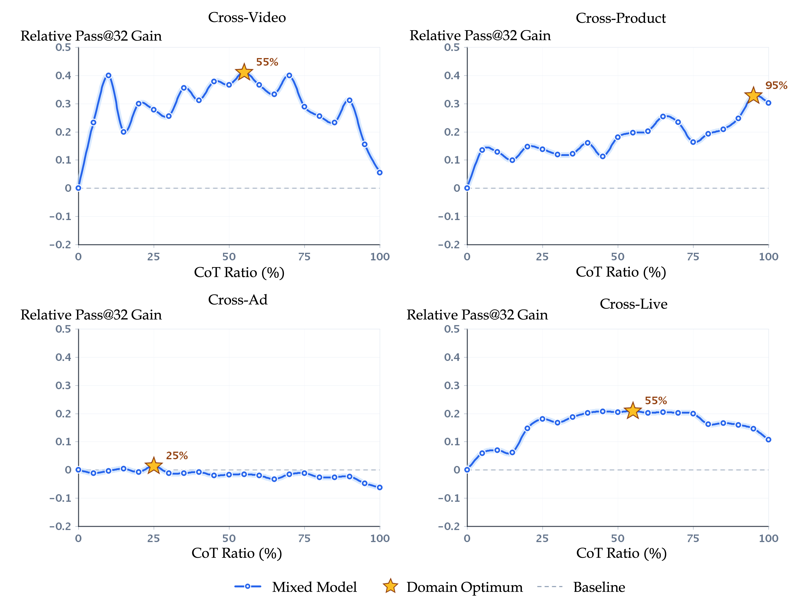
对于每种混合比例，我们从相同初始检查点训练模型，并使用非思考解码评估。图 25 报告 Pass@32 相较于 100% unCoT 基线的相对增益，定义为：
| (27) |
其中， 表示目标领域， 是以 unCoT 比例 训练的模型， 是以 100% unCoT 数据训练的模型。
图 25 表明，响应曲线并非简单的单调关系。多数领域都存在明显的中间最优点。Cross-Video 在接近平衡的混合比例处取得最佳结果，Cross-Product 更偏好 CoT 占比较高的混合比例，Cross-Live 也受益于平衡或适度偏向 CoT 的混合比例。相较之下，Cross-Ad 的曲线平坦得多，其最优点更接近 unCoT 一侧。这些结果支持训练 token 对齐实验的结论：CoT 监督能够改善多数领域的非思考推理，但最佳混合比例依赖于领域。
我们将这一现象解释为两类监督之间的平衡。unCoT 数据匹配非思考推理格式，直接教会模型将用户上下文映射到目标物品语义 token。CoT 数据提供额外的训练信号，其中包含两个部分：压缩信号，教会模型从长行为历史中抽象画像与轨迹；以及推理信号，教会模型根据压缩后的状态和支持证据，作出通向目标领域决策的转移判断。在非思考解码时，模型并不显式生成轨迹。一个合理假设是，CoT 监督所学到的紧凑用户状态构建方式和证据选择偏向，有一部分仍体现在模型参数中。当前实验在行为层面支持这一假设，但未能辨明压缩与推理各自的具体贡献。
然而，CoT 数据并非越多越好。CoT 轨迹比 unCoT 答案更长，因此过多的 CoT 训练可能降低最终目标监督的密度。CoT 轨迹还可能含有噪声或过度解释，而且训练格式可能与非思考解码更加不一致。因此，当 CoT 提供的推理信号与 unCoT 提供的直接目标信号得到适当平衡时，才能获得最佳混合比例。
形式化地，我们使用以下概念性分解，描述领域 在 unCoT 比例 下的非思考增益：
| (28) |
其中， 表示领域 中的基础能力， 表示 unCoT 数据带来的直接答案对齐收益， 表示从 CoT 数据中吸收的信号， 表示含噪或过长轨迹的代价， 表示 CoT 格式训练与非思考解码之间的不匹配。从概念上看， 既包含教会模型形成紧凑用户兴趣状态的压缩成分，也包含教会模型将这一状态连接到目标领域决策的推理成分。我们仅将其用作概念性分解，而非可由当前实验辨识出的加性估计。图 25 中的经验最优点 可以理解为：增加 unCoT 数据的边际收益，与减少 CoT 监督的边际损失达到平衡的位置：
| (29) |
这一方程仅是一种概念性解释，并不假定整条曲线遵循二次规律。它只是说明，当直接答案对齐与基于 CoT 的监督达到领域特定的平衡时，最佳混合比例便会出现。
对于领域差异，一个假设是不同任务依赖不同证据来源。Cross-Video 和 Cross-Live 可能受益于 CoT，因为其用户历史往往包含多样化信号和多个合理的意图方向，使预测前的证据组织有价值。Cross-Product 可能对 CoT 占比较高的训练更加敏感，因为购买意图往往需要从内容线索和行为转移中推断。相比之下，Cross-Ad 可能更依赖短期转化信号和业务曝光模式，而自然语言推理轨迹只能部分捕捉这些信息；这或许能解释它为何偏好 unCoT 占比较高的训练，并呈现更平坦的曲线。
总体而言，这些实验揭示了思考监督对非思考推荐一种有用但依赖领域的影响。在适当混合比例下，高质量思考监督能够改善多数领域的直接非思考推荐，但 Cross-Ad 表明 CoT 并非普遍有益，不应默认增加其使用强度。这使 CoT 数据能够成为推荐基础模型潜在数据飞轮中的有价值组成部分：构建 CoT 可以增强骨干网络，改进后的非思考模型可以产生更好的候选和筛选信号，而显式思考模式推理仍可留给更难的群体，在这些群体中生成轨迹所带来的额外延迟是值得的。
9 部署
我们已在快手 App 快速增长的本地生活广告场景中成功部署 OneReason。在严格的延迟约束、强基线和物品可投放性约束下，系统实现了稳定的在线部署，并带来了快手本地生活广告场景中最显著的业务提升之一。本节重点介绍 OneReason 的在线部署，包括工业场景适配与在线部署架构，以及从 OneReason 部署中提炼的一组可复用方法。
9.1 工业场景适配
在获得强大且性能出色的 OneReason 基础模型之后，如何高效地将其适配到特定工业场景成为关键挑战。值得注意的是，OneReason 的训练数据不包含快手本地生活广告场景。为此，我们提出标准化、可复用的持续训练流程，以实现快速领域适配，并可方便地推广到其他工业应用场景。更多细节见附录 A.1。
9.2 工业场景在线部署
由于 LLM 的规模和推理系统的限制，直接将 OneReason 部署用于实时推荐，仍面临显著的延迟和计算成本挑战。本节提出 OneReason 的新型在线架构——“快慢思考”架构，并进一步介绍保障模型性能的在线增量训练策略。

在线部署中的“快慢思考”架构。 该架构避免完全依赖实时推理，转而引入快（在线）与慢（近线）的协同机制，在保持低延迟和稳定收益的同时，持续将 OneReason 的知识与推理能力注入系统。 工作流程如图 26 所示。
-
•
步骤 1：流程设计。 我们构建解耦的近线召回流程，使其不参与早期阶段的竞争，而是接入下游排序模型，与实时 OneRec 的输出共同打分。当 OneReason 召回结果不可用时，系统自动回退到原有 OneRec 流程，以保障稳定性和覆盖率。
-
•
步骤 2：数据集触发。 我们周期性地（按天或按小时）汇总分布式数据任务，构建用户行为、用户画像和物品内容数据，随后触发在线流程进行数据获取、清洗和特征处理，形成端到端的数据飞轮。
-
•
步骤 3：离线推断。 数据集准备完成后，我们加载最新的 OneReason 检查点，离线预测用户最可能交互的下一组物品语义 token。随后，使用针对 OneReason 设计的专门解码策略，将这些 token 解码为物品 ID，相关讨论见附录 A.4.2。
-
•
步骤 4：在线服务。 离线推断任务将解码后的物品 ID 写入 Redis，形成在线服务的候选池。在推断时，将近线 OneReason 结果与实时 OneRec 召回结果共同送入排序模型统一融合，从而构成快慢思考推荐系统。
在线增量训练策略。 在线平台持续引入新物品，用户的兴趣和意图也随时间变化。因此，需要增量训练机制，使 OneReason 在保留现有能力、确保在线性能稳定的同时，适应长期业务演进。具体流程如下：
-
•
预训练阶段的增量训练。 我们在固定时间窗口内，对新引入的物品周期性地进行持续预训练，以跟上最新的内容分布。为防止灾难性遗忘并保持 OneReason 的通用推理能力，我们将新收集的数据与抽样的通用领域语料混合进行联合训练。
-
•
SFT 阶段的增量训练。 我们从用户日志中构建每日增量训练数据，以当天用户交互作为 OneReason 训练的监督信号，建模短期兴趣动态，提高模型对偏好变化的敏感性。
OneReason 的两种应用范式。 我们在在线部署的“快慢思考”架构下设计了 OneReason 的两种应用范式。二者均带来了显著的在线收益，展现了 OneReason 强大的建模和泛化能力。
-
•
慢流程：OneReason。该方法直接使用 OneReason 进行召回。具体而言，OneReason 利用用户画像信息与历史交互序列，预测用户最可能交互的下一组物品语义 token，再将其解码为候选物品列表，作为慢流程的召回输出。
-
•
快流程：OneReason for OneRec。我们利用 OneReason 的输出增强推荐，将最相关的物品语义 token 转换为嵌入表示。在 OneRec 中，我们引入专门的思考 Token 来整合这些信号，从而在快流程中将 OneReason 的知识蒸馏到在线 OneRec。完整方法见附录 A.2。
9.3 在线实验
我们在快手 App 本地生活场景的一个子场景中部署 OneReason，开展了为期 10 天的在线 A/B 实验，实验组和对照组各分配 5% 的流量。实验组用户由 OneReason 的“快慢思考”架构提供服务，对照组用户则继续使用现有推荐系统。
表 18 表明，直接使用 OneReason 召回以及使用它增强实时 OneRec，都在在线 A/B 实验中取得了显著改进。慢流程中的直接应用提升了收入，而快流程中对 OneRec 的增强进一步改善了表现。联合使用两种范式取得了最佳结果，收入和曝光量均大幅提高，对应快手平台数亿元人民币的年化商业收入增量。此外，我们计算了计算资源消耗与收入之间的比例，表明 OneReason 的 ROI 5。更多实验分析与讨论见附录 A.3 和 A.4。
| Model | Impressions | Revenue |
| OneReason | +0.940% | +4.528% |
| OneReason for OneRec | +6.831% | +4.636% |
| Combined | +10.332% | +8.234% |
10 相关工作
随着人工智能的快速发展，利用 AI 重塑工业系统已成为产业界和学术界的重要方向。推荐系统越来越多地采用 LLM，以改善用户体验和业务表现。OneRec 系列等近期生成式推荐框架展现了强大的建模能力、可扩展性和系统效率。然而，现有多数方法仍主要停留在 System-1 式单遍推断范式中。受到 OpenAI O1 (Jaech et al., 2024) 和 DeepSeek R1 (Guo et al., 2025) 等面向推理的基础模型的启发，研究者开始探索先思考、后生成的范式。随着推荐环境日益复杂且动态变化，将结构化推理引入生成式基础模型（GFM）已成为一个有前景的研究方向。 本节概述推荐基础模型和推理增强的生成式框架。在这些进展的基础上，我们说明 OneReason 的先思考、后推荐范式与现有 GFM 的区别。
随着 LLM 兴起，研究者开始探索将其直接应用于推荐任务，利用其丰富的世界知识和强大的指令遵循能力。典型方法将用户画像和交互历史组织为提示词，使 LLM 在生成推荐结果前先推理用户偏好。代表性工作包括 GPT4Rec (Li et al., 2023)、Chat-Rec (Gao et al., 2023)、LLMRank (Hoffmann et al., 2024) 和 LLM as Zero-Shot Ranker (Hou et al., 2024b)。然而，随着 LLM4Rec 研究深入，人们逐渐认识到，通用 LLM 难以充分捕获推荐任务的特征，从而遭遇性能瓶颈。这推动了 LLM 与推荐系统融合的两个主要方向。第一类以 LLM 骨干为范式增强现有推荐模型，OneRec 系列是其代表。第二类旨在训练能够直接执行推荐的推荐基础模型。
在第一个方向中，TIGER (Rajput et al., 2023) 是生成式推荐的早期工业研究，引入基于 RQ-VAE 的物品语义 token，并将推荐表述为从用户序列中的物品语义模式到下一物品表示的端到端生成任务。HSTU (Zhai et al., 2024) 进一步使用基于 Transformer 的骨干替代传统多阶段流水线，并探索生成式推荐的缩放定律。随后，OneRec 系列 (Deng et al., 2025; Zhou et al., 2025c; Liu et al., 2025; Zhou et al., 2026; Zhang et al., 2026a; Wang et al., 2026) 将这一范式工程化为统一的预训练与后训练框架，展现了强大的建模和效率优势。后续工作聚焦于多样性控制 (Agarwal et al., 2025)、端到端流程 (He et al., 2025; Sun et al., 2026a)、超长用户序列建模 (Li et al., 2025) 和工业场景约束 (Xue et al., 2026; Zhang et al., 2026c; Lin et al., 2025) 等问题。
在第二个方向中，研究重点是将 LLM 适配到推荐数据，利用其世界知识和推理能力构建推荐基础模型。LC-Rec (Zheng et al., 2024) 表明，通过物品语义 ID 对齐和指令微调，LLM 能够理解推荐语义。RecGPT (Yi et al., 2025b) 和 RecGPT-V2 (Yi et al., 2025a) 进一步使用 LLM 对召回和兴趣挖掘中的用户意图进行建模，并进行了小规模在线验证。然而，这些方法主要关注用户意图建模，尚未实现完整的端到端决策。OxygenREC (Hao et al., 2025) 采用与 RecGPT 相似的思路，使用快慢思考为下游模型生成上下文指令。尽管如此，这些方法仍属于 LLM 增强的推荐系统，而非真正的端到端生成式基础模型。相比之下，我们的目标是构建可在工业界部署的 GFM 范式，直接基于推理作出推荐决策，并产生可衡量的在线效果。OpenOneRec (Zhou et al., 2026) 是重要的先驱，提出了新的先思考、后推荐范式。该工作还提出了 RecIF-Bench、大规模数据集，以及采用文本对齐、联合预训练、多任务 SFT 和 Rec-RL 等多种训练策略的 1.7B/8B 基础模型。然而，其推理能否持续转化为真实的推荐性能收益仍不明确，尚有进一步研究的空间。 最直接可比的诊断性工作是 (Zhang et al., 2026b)。它正式测量了 OpenOneRec 中非思考模式与思考模式之间的差距，并将其归因于通用子空间中的文本惯性：物品语义 token 嵌入和通用文本嵌入共享潜在维度，却没有对齐，因此更长的 CoT 会使通用文本先验占据主导，稀释以 ID 为依据的证据。在 OneReason 中，我们通过精心设计的训练流程，在训练阶段处理这一问题，引导模型形成更稳健的物品感知与认知 CoT。
在传统生成式推荐模型中，研究者较早便通过显式或隐式推理机制引入 LLM 的推理能力。由于生成式推荐在推荐空间内运行，且缺少显式 CoT 范式，现有多数方法采用潜在推理，从 LLM 输出或系统内部信号中注入推理信息。例如，ReaRec (Tang et al., 2026) 将多步推理引入生成式推荐，迭代地反馈高维推理结果，以改进用户表示。OnePiece (Dai et al., 2025) 进一步扩展这一思路，通过推理模块设计，将 LLM 风格的上下文工程和推理整合到工业推荐系统中，使中间状态与推荐逻辑逐步对齐。相比之下，OneSearch-V2 (Chen et al., 2026a) 利用具有 CoT 的 LLM 深入理解复杂用户查询，并通过自蒸馏将这种推理能力蒸馏到推荐模型参数中。同时，REG4Rec (Xing et al., 2025) 通过构建多个物品级语义表示来支持多路径推理，并引入自我反思以剪除不一致的推理路径，从而处理推理的多样性和可靠性问题。
11 结论 & 未来工作
本文提出 OneReason，将大语言模型与推荐系统融合到单一推理基础模型中，使推荐能够运用推理智慧。 具体而言，我们进行了广泛改进：(1) 在预训练阶段，使用内容理解任务而非对比监督来获得离散物品语义 token，并使用 578B token 对齐物品语义 token 与文本 token 的语义空间；(2) 在 SFT 中，设计标准化、由粗到细且逻辑连贯的 CoT 结构，以保证思考轨迹的质量；(3) 在 RL 中，采用先专精、后统一的方案，提高思考模式的能力，同时平衡多个业务的表现。
据我们所知，借助这些技术，OneReason 是首个在下游推荐基准上使思考模式持续优于非思考模式的工作，表明推理能够转化为真实的推荐收益。 更有趣的是，我们还发现，用思考 CoT 数据替换普通 unCoT 数据，能改善多个领域的非思考推断表现。这表明，CoT 监督的部分收益能够迁移到直接解码，但要从因果层面区分压缩与推理的作用，仍需进一步消融实验。 此外，我们提出 OneReason-Bench，将面向推理的基准任务组织为渐进式层级（如感知、推导、演化和推荐），以指导模型迭代。 在工业部署方面，我们提出快慢思考架构，通过近线慢思考与在线快思考协同，将 OneReason 的知识持续注入推荐流程，带来显著业务收益。
未来，我们将探索：(1) 更稳定的在线增量学习机制，持续适应新的通用知识训练语料和用户兴趣漂移，同时避免指令遵循与通用能力潜在退化；(2) 更贴合业务约束的定制解码与生成策略，在吞吐量、延迟、质量和业务价值之间取得更好的平衡；(3) 超越“先思考、后回答”，迈向具备规划与工具调用能力的智能体式推荐基础模型。 我们相信，随着模型压缩、推理基础设施和硬件效率的持续进步，推荐基础模型将成为推荐链路的核心组成部分，逐步推动系统向智能体式推荐架构演进。
致谢
感谢 Gaoguo Sun、Peng Zhang、Lixing Zhao、Xinyu Zhang、Xinyue Zhang、Xun Zheng、Zheng Wang 在数据收集方面作出的贡献，以及他们提供的深刻建议。
参考文献
- Pinrec: outcome-conditioned, multi-token generative retrieval for industry-scale recommendation systems. arXiv preprint arXiv:2504.10507. Cited by: §10.
- Compression is all you need: modeling mathematics. arXiv preprint arXiv:2603.20396. External Links: 2603.20396 Cited by: §5.4.1.
- OneSearch-v2: the latent reasoning enhanced self-distillation generative search framework. arXiv preprint arXiv:2603.24422. Cited by: §10.
- Counteraction-aware multi-teacher on-policy distillation for general capability recovery with domain preservation. arXiv preprint arXiv:2605.27115. Cited by: §6.3.
- Does reinforcement learning really incentivize reasoning capacity in llms beyond the base model?. Advances in Neural Information Processing Systems 38, pp. 57654–57689. Cited by: §6.2.
- An image dataset for benchmarking recommender systems with raw pixels. In Proceedings of the 2024 SIAM International Conference on Data Mining (SDM), Cited by: §B.3.
- Onepiece: bringing context engineering and reasoning to industrial cascade ranking system. arXiv preprint arXiv:2509.18091. Cited by: §10.
- DeepSeek-v4: towards highly efficient million-token context intelligence. Cited by: §6.3, §7.
- Language modeling is compression. In International Conference on Learning Representations, External Links: 2309.10668 Cited by: §5.4.1.
- Onerec: unifying retrieve and rank with generative recommender and iterative preference alignment. arXiv preprint arXiv:2502.18965. Cited by: §10.
- How well does generative recommendation generalize?. arXiv preprint arXiv:2603.19809. Cited by: §B.2.
- Baichuan-m3: modeling clinical inquiry for reliable medical decision-making. arXiv preprint arXiv:2602.06570. Cited by: §6.3.
- Fine-grained semantics integration for large language model-based recommendation. External Links: 2602.22632, Link Cited by: §4.2.1.
- Soft adaptive policy optimization. arXiv preprint arXiv:2511.20347. Cited by: §6.1.
- Chat-rec: towards interactive and explainable llms-augmented recommender system. arXiv preprint arXiv:2303.14524. Cited by: §10.
- Deepseek-r1: incentivizing reasoning capability in llms via reinforcement learning. arXiv preprint arXiv:2501.12948. Cited by: 2nd item, §10.
- OxygenREC: an instruction-following generative framework for e-commerce recommendation. arXiv preprint arXiv:2512.22386. Cited by: §10.
- An end-to-end multi-objective ensemble ranking framework for video recommendation. arXiv preprint arXiv:2508.05093. Cited by: §10.
- Reasoning over semantic ids enhances generative recommendation. arXiv preprint arXiv:2603.23183. Cited by: §6.
- LLM-rank: a graph theoretical approach to pruning large language models. arXiv preprint arXiv:2410.13299. Cited by: §10.
- Training compute-optimal large language models. External Links: 2203.15556, Link Cited by: 1st item.
- Bridging language and items for retrieval and recommendation: benchmarking llms as semantic encoders. arXiv preprint arXiv:2403.03952. Cited by: §B.3.
- Large language models are zero-shot rankers for recommender systems. In European conference on information retrieval, pp. 364–381. Cited by: §10.
- Step 3.5 flash: open frontier-level intelligence with 11b active parameters. arXiv preprint arXiv:2602.10604. Cited by: §5.6.
- Openai o1 system card. arXiv preprint arXiv:2412.16720. Cited by: 2nd item, §10.
- Mme-cot: benchmarking chain-of-thought in large multimodal models for reasoning quality, robustness, and efficiency. arXiv preprint arXiv:2502.09621. Cited by: 1st item.
- Corvid: improving multimodal large language models towards chain-of-thought reasoning. External Links: 2507.07424, Link Cited by: §1.
- Self-attentive sequential recommendation. In 2018 IEEE International Conference on Data Mining (ICDM), pp. 197–206. Cited by: 1st item.
- Scaling laws for neural language models. arXiv preprint arXiv:2001.08361. Cited by: 1st item.
- Large language models are zero-shot reasoners. External Links: 2205.11916, Link Cited by: 2nd item.
- On the similarities of embeddings in contrastive learning. In Forty-second International Conference on Machine Learning, External Links: Link Cited by: §C.1, §4.2.1.
- GPT4Rec: a generative framework for personalized recommendation and user interests interpretation. arXiv preprint arXiv:2304.03879. Cited by: §10.
- Taming ultra-long behavior sequence in session-wise generative recommendation. In Proceedings of the 34th ACM International Conference on Information and Knowledge Management, pp. 5839–5846. Cited by: §10.
- Rethinking on-policy distillation of large language models: phenomenology, mechanism, and recipe. arXiv preprint arXiv:2604.13016. Cited by: §6.3.
- Spacetime-gr: a spacetime-aware generative model for large scale online poi recommendation. arXiv preprint arXiv:2508.16126. Cited by: §10.
- OneRec-think: in-text reasoning for generative recommendation. External Links: 2510.11639, Link Cited by: §1, §10.
- A survey on causal inference for recommendation. The Innovation 5 (2), pp. 100590. External Links: Document Cited by: §5.4.1.
- QARM: quantitative alignment multi-modal recommendation at kuaishou. In Proceedings of the 34th ACM International Conference on Information and Knowledge Management, CIKM ’25, pp. 5915–5922. Cited by: §4.1.
- Training language models to follow instructions with human feedback. External Links: 2203.02155, Link Cited by: 2nd item.
- Knowledge-instruct: effective continual pre-training from limited data using instructions. arXiv preprint arXiv:2504.05571. External Links: 2504.05571 Cited by: §4.2.2.
- Reuse, don’t retrain: a recipe for continued pretraining of language models. External Links: 2407.07263, Link Cited by: §4.2.2.
- Qwen3 technical report. arXiv preprint arXiv:2505.09388. Cited by: §4.1, §4.2.2, 3rd item.
- Learning transferable visual models from natural language supervision. In International Conference on Machine Learning, pp. 8748–8763. Cited by: §4.1.
- Recommender systems with generative retrieval. Advances in Neural Information Processing Systems 36. Cited by: §10, 3rd item.
- Learning dynamics of LLM finetuning. In The Thirteenth International Conference on Learning Representations, External Links: Link Cited by: §6.1.
- Infonce: identifying the gap between theory and practice. arXiv preprint arXiv:2407.00143. Cited by: §C.1, §4.2.1.
- On the information bottleneck theory of deep learning. In International Conference on Learning Representations, External Links: Link Cited by: §5.4.1.
- Deepseekmath: pushing the limits of mathematical reasoning in open language models. arXiv preprint arXiv:2402.03300. Cited by: 2nd item, §6.1.
- OneRanker: unified generation and ranking with one model in industrial advertising recommendation. arXiv preprint arXiv:2603.02999. Cited by: §10.
- Reading, not thinking: understanding and bridging the modality gap when text becomes pixels in multimodal llms. External Links: 2603.09095, Link Cited by: §1.
- KuaiSAR: a unified search and recommendation dataset. In Proceedings of the 32nd ACM International Conference on Information and Knowledge Management (CIKM), pp. 5407–5411. Cited by: §B.3.
- Reinforced preference optimization for recommendation. arXiv preprint arXiv:2510.12211. Cited by: §6.
- Counterfactual explainable recommendation. In arXiv preprint arXiv:2108.10539, Cited by: §5.4.1.
- Think before recommend: unleashing the latent reasoning power for sequential recommendation. IEEE Transactions on Knowledge and Data Engineering. Cited by: §10.
- Deep learning and the information bottleneck principle. In 2015 IEEE Information Theory Workshop (ITW), pp. 1–5. External Links: Document, 1503.02406 Cited by: §5.4.1.
- Pushing the frontier of audiovisual perception with large-scale multimodal correspondence learning. In Proceedings of the IEEE/CVF Conference on Computer Vision and Pattern Recognition, pp. 30172–30182. Cited by: §4.1.
- OneLive: dynamically unified generative framework for live-streaming recommendation. arXiv preprint arXiv:2602.08612. Cited by: §10.
- Mmlu-pro: a more robust and challenging multi-task language understanding benchmark. Advances in Neural Information Processing Systems 37, pp. 95266–95290. Cited by: §3.3.
- Chain-of-thought prompting elicits reasoning in large language models. External Links: 2201.11903, Link Cited by: 2nd item.
- Mimo-v2-flash technical report. arXiv preprint arXiv:2601.02780. Cited by: §1, §6.3.
- Reg4rec: reasoning-enhanced generative model for large-scale recommendation systems. arXiv preprint arXiv:2508.15308. Cited by: §10.
- Generative recommendation for large-scale advertising. arXiv preprint arXiv:2602.22732. Cited by: §10.
- Nemotron-cascade 2: post-training llms with cascade rl and multi-domain on-policy distillation. arXiv preprint arXiv:2603.19220. Cited by: §6.3.
- Yelp open dataset. Note: https://www.yelp.com/dataset Cited by: §B.3.
- RecGPT-v2 technical report. arXiv preprint arXiv:2512.14503. Cited by: §10.
- Recgpt technical report. arXiv preprint arXiv:2507.22879. Cited by: §10.
- DAPO: an open-source llm reinforcement learning system at scale. External Links: 2503.14476, Link Cited by: 2nd item.
- Scaling relationship on learning mathematical reasoning with large language models. arXiv preprint arXiv:2308.01825. Cited by: §1.
- Actions speak louder than words: trillion-parameter sequential transducers for generative recommendations. arXiv preprint arXiv:2402.17152. Cited by: §10, 1st item.
- NineRec: a benchmark dataset suite for evaluating transferable recommendation. IEEE Transactions on Pattern Analysis and Machine Intelligence 47, pp. 5256–5267. Cited by: §B.3.
- OneMall: one model, more scenarios–end-to-end generative recommender family at kuaishou e-commerce. arXiv preprint arXiv:2601.21770. Cited by: §10.
- Why thinking hurts? diagnosing and rectifying the reasoning shift in foundation recommender models. arXiv preprint arXiv:2602.16587. Cited by: §10, §7, §7.
- Unified value alignment for generative recommendation in industrial advertising. arXiv preprint arXiv:2605.05803. Cited by: §10.
- Qwen3 embedding: advancing text embedding and reranking through foundation models. arXiv preprint arXiv:2506.05176. Cited by: 2nd item.
- Adapting large language models by integrating collaborative semantics for recommendation. In 2024 IEEE 40th International Conference on Data Engineering (ICDE), pp. 1435–1448. Cited by: §10, §3.1.1.
- Group sequence policy optimization. External Links: 2507.18071, Link Cited by: 2nd item.
- Large language models as recommender systems. arXiv preprint arXiv:2402.xxxx. Cited by: 3rd item.
- Disentangling user interest and conformity for recommendation with causal embedding. In Proceedings of the Web Conference 2021, pp. 2980–2991. External Links: Document Cited by: §5.4.1.
- From perception to cognition: a survey of vision-language interactive reasoning in multimodal large language models. External Links: 2509.25373, Link Cited by: §1.
- OpenOneRec technical report. External Links: 2512.24762, Link Cited by: §1, §10, §10, §3.1.1, §3.2, §3.3, §3, §4.1, §4.2.1, §4.2.1, §4.2.2, §6.
- OneRec technical report. External Links: 2506.13695, Link Cited by: §1.
- Onerec-v2 technical report. arXiv preprint arXiv:2508.20900. Cited by: §10.
- OneRec-v2 technical report. External Links: 2508.20900, Link Cited by: §1.
12 作者名单
核心贡献者 Biao Yang, Boyang Ding*, Chenglong Chu, Dunju Zang, Fei Pan, Han Li, Hao Jiang, Honghui Bao, Huanjie Wang, Jian Liang, Jiangxia Cao, Jiao Ou, Jiaxin Deng, Jinghao Zhang, Kun Gai, Lu Ren, Peiru Du, Pengfei Zheng*, Rongzhou Zhang, Ruiming Tang, Shiyao Wang*, Siyang Mao, Siyuan Lou, Teng Shi*, Wei Yuan, Wenlong Xu, Xingchen Liu, Xingmei Wang, Xinqi Jin, Yan Sun, Yan Wang*, Yifei Hu, Yingzhi He, Yufei Ye, Yuhao Wang, Yunhao Zhou, Yuqin Dai, Zhao Liu, Zhipeng Wei, Zhixin Ling, Ziming Li, Zixing Zhang*, Ziyuan Liu.
贡献者 An Zhang, Changxin Lao, Chaoyi Ma, Chengru Song, Defu Lian, Fan Yang, Guowang Zhang, Hao Peng, Jiayao Shen, Jie Chen, Jun Xu, Junmin Chen, Kun Zhang, Kuo Cai, Mingxing Wen, Minmao Wang, Minxuan Lv, Qi Zhang, Qiang Luo, Sheng Yu, Shijie Li, Shijie Yi, Shuang Yang, Shugui Liu, Shuni Chen, Tinghai Zhang, Tingting Gao, Xiang Wang, Xiangyu Wu, Xiangyu Zhao, Xiao Lv, Xiaoyou Zhou, Xuming Wang, Yong Du, Zejian Zhang, Zhaojie Liu, Zhiyang Zhang, Zhuang Zhuang, Ziqi Wang, Ziyi Zhao.
所有作者按名字的字母顺序排列。 *表示已离开本团队的人员。
Appendix A 部署细节
A.1 工业场景适配
面对新的工业场景，如何快速适配 OneReason？这一设置带来两个关键挑战：理解新的物品库，以及学习新出现的用户兴趣分布，而这两者都未在 OneReason 的训练中出现。为应对这些挑战，我们提出了一套可复用的部署方案，称为工业场景适配。
场景感知持续预训练。 我们从最终 OneReason 基础模型的检查点出发。对于新工业场景中的物品理解，我们采用 R0：感知 5.1 方法，实现物品语义 token 与描述文本之间的双向对齐。对于新工业场景中的用户理解，我们采用基于用户画像的持续预训练策略。首先使用大规模 LLM 归纳用户行为、提取偏好信号，再将这些信号与用户画像相结合，形成用户画像文本。利用这些画像文本进行持续预训练，使模型能够捕捉特定场景下的用户特征。
场景感知持续监督微调。 我们以用户画像文本和历史交互为条件，进一步训练 OneReason 预测下一个物品语义 token，从而进行推荐。为提高模型对不同活跃度用户的鲁棒性，我们引入从高活跃用户逐步推进到低活跃用户的课程学习策略。这使模型能够先从密集行为信号中学习，再逐渐适应稀疏场景；与此同时，用户画像为泛化提供一致的语义指导。
A.2 OneReason for OneRec 的整体方法
正如 OneReason 的核心设计理念所体现的，先思考再生成已被证明是 LLM 演进的重要路径。先前工作也表明，在生成模型中引入潜在推理机制，可以有效增强推理能力，并进一步改善推荐性能。因此，我们尝试利用 OneReason 的输出提供推理监督，并在在线快链路中取得了业务增益，验证了 OneReason 的推理能力和知识能够通过蒸馏迁移到生成式推荐模型。
整体框架如图 27 所示。具体而言，我们首先使用 OneReason 预测用户最可能交互的下一个物品语义 token，再通过量化模型将其解码为对应的嵌入表征，用作推理过程的监督信号。随后，我们在生成式推荐模型中引入一个思考 Token，并将解码器侧 <BOS> 位置的隐藏状态作为监督目标。接着，应用一个对齐网络施加表征层面的约束，从而在高维语义空间中将 OneReason 的知识和推理能力蒸馏到生成式推荐模型中。
在此基础上，我们进一步探索了若干变体设计。例如，引入用户表征解码器来压缩编码器输出，将其与 OneReason 的输出对齐，再进一步蒸馏到思考 Token 中。此外，为解决推理过程的不可控性，我们设计了由带推理的解码器与不带推理的解码器组成的双分支架构，并通过相互监督提高推理过程的稳定性。最后，考虑到推荐空间与语义空间之间固有的不对齐，我们进一步提出基于空间残差的对比蒸馏方法，以增强跨空间对齐。
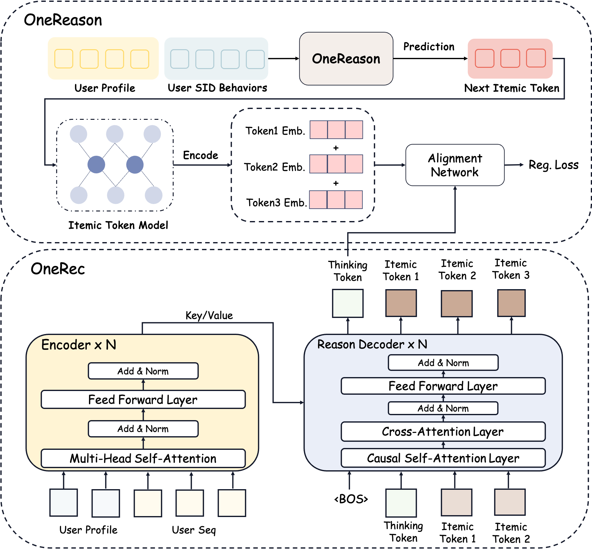
A.3 实验分析
我们对上述 A/B 测试结果进行详细分析，从两个角度分解整体效果：(1) OneReason 带来的效率变化；(2) OneReason 在不同用户群体中的优势。
分布与效率分析。 从表 19 可以看出，OneReason 在不同部署范式下均带来一致的系统级提升。在慢链路中，直接应用 OneReason 通过更好的语义匹配改善流量质量，从而提升转化和点击表现。相比之下，在快链路中增强 OneRec，主要通过扩大召回覆盖来提升系统规模，而单次曝光指标保持相对稳定。组合策略在进一步扩大覆盖的同时取得最佳整体性能，说明两种范式具有互补性：慢链路提高流量效率，快链路扩大系统规模。
| Model | Conv. | Click | CVR | CTR | Retr. Share |
| OneReason | +5.870% | +3.986% | +4.516% | +2.497% | 3.8% |
| OneReason for OneRec | +7.935% | +0.207% | +0.459% | +0.195% | 22.1% |
| Combined | +12.643% | +1.709% | +1.865% | +0.519% | 27.2% |
用户层面分析。 为评估 OneReason 在用户层面的影响，我们对高活跃、中活跃和低活跃用户进行分层分析。表 20 显示，业务收入增益随着用户活跃度降低而增大，低活跃用户的提升最大。传统推荐模型高度依赖用户历史行为，而 OneReason 整合用户画像、有限行为和内容语义，通过推理补全兴趣，使其在交互稀疏的情况下仍能实现有效推荐。总体而言，这些结果验证了其推理能力对低活跃用户的价值，并表明它为整体系统带来了显著的信息增益。
| User Level | Impressions | Revenue |
| Active Users | +0.763% | +2.419% |
| Mid-Active Users | +0.902% | +4.815% |
| Low-Active Users | +1.125% | +13.323% |
A.4 工业部署讨论
我们分析 OneReason 在线部署中遇到的关键挑战，讨论若干重要问题及未来方向。
A.4.1 D1：在线增量训练与模型通用性能。
OneReason 需要通过增量更新适应不断变化的物品库和用户兴趣。若不进行此类更新，我们观察到性能会显著下降。然而，当前方法主要围绕推荐目标开展持续学习，对指令遵循能力和通用能力保留有所忽视。未来工作应探索更稳定的增量学习策略，在适应演变中的物品库和变化的用户兴趣分布时，保留基础能力。
A.4.2 D2：OneReason 的生成策略。
OneReason 的推理成本较高，使大规模束搜索难以实施。因此，我们设计了在小规模束搜索下解码物品 ID 的分层生成策略。模型首先在最高层物品语义 token 粒度生成候选，以确保覆盖，再通过贪心解码补全较低层结构，在延迟约束下平衡多样性、准确性和效率。然而，当前策略仍缺乏对业务价值和资源约束的考虑。未来工作可以探索更具针对性的解码策略，以改善推荐质量。
A.4.3 D3：模型参数规模与实时应用。
实际上，“快慢思考”架构是一种工程权衡。它在保持实时系统稳定性的同时，通过近线机制引入 OneReason 带来的信息增益。然而，它既不能完全替代实时召回，也无法充分发挥模型能力。一个关键的未来方向是模型参数规模，即探索更小的模型（例如 0.8B 级别），在维持相近性能的同时实现真正的实时召回，进一步提升系统效率与集成程度。
A.4.4 D4：OneReason 在线部署的 ROI。
首先需要说明，ROI 并非 OneReason 的首要目标。我们的主要目标是评估该模型能否为推荐系统提供有意义的信息增益。不过，从工程角度看，系统每天大约使用 600 张旗舰 GPU，为快手 App 的 400 million 用户提供全量流量服务。我们分析 A/B 测试实验结果，估算 ROI > 5，表明系统级增益超过推理成本，并产生了正向回报。随着模型压缩、推理基础设施和硬件效率不断进步，OneReason 有望成为未来推荐系统的核心组件，推动架构向以基础模型为中心的方向转变。
Appendix B 基准细节
B.1 任务构建
这里给出 OneReason-Bench 中四个推理层级的构建细节。
R0：感知。
我们使用多模态 LLM，根据视频、直播、商品和广告领域的原生多模态信号生成参考物品描述，随后通过 LLM 和人工进行质量检查。接着，基于经核验的描述和物品元数据构建以内容为依据的问答实例，并进一步根据可回答性、难度和人工抽查进行筛选。
R1：推导。
我们从内容知识图谱中提取物品之间的关联对，并进一步通过基于 LLM 的难度筛选和人工质量检查，保留需要语义推导而非表层匹配的样本。
R2：演化。
我们从覆盖短视频、电商、广告、直播以及额外搜索行为的全域用户行为时间线中，挖掘具有时间递进和认知增量的兴趣演化链。通过规则、LLM 和人工质量检查过滤伪逻辑链，再将所得链条转换为上述三种任务格式。
R3：推荐。
我们基于真实用户行为日志构建全域历史序列，并将用户随后发生高价值交互的物品作为预测目标。高价值交互按领域定义：商品域为点击，视频域为观看时长超过同一视频时长分桶内的第 75 百分位，广告域为转化行为（如激活或支付），直播域为首次送礼事件。进一步对目标物品进行异常样本过滤、热门度降采样和类别平衡，以降低头部物品的主导效应。
B.2 推荐数据统计与分析
表 21 展示了 R3 在四个目标领域的数据规模统计。
| Domain | # Users |
|
|
|
|
|
|
Avg. Tgt. | ||||||||||||
| Video | 10,285 | 694,507 | 419,428 | 770,228 | 781,533 | 74.89 | 75.99 | 13.92 | ||||||||||||
| Product | 9,859 | 502,668 | 599,238 | 760,277 | 986,817 | 77.12 | 100.09 | 1.62 | ||||||||||||
| Ad | 9,081 | 249,309 | 718,771 | 840,760 | 1,089,317 | 92.58 | 119.96 | 4.24 | ||||||||||||
| Live | 8,083 | 66,831 | 810,269 | 240,577 | 1,229,617 | 29.76 | 152.12 | 1.58 |
除规模统计外，我们还从两个互补角度刻画训练集与评估集的重叠：目标层面的可见性，以及转移层面的记忆与泛化。在目标可见性方面，33.69% 的目标物品原始 ID 在训练中未出现，而未见过的目标物品语义模式仅占 11.55%。这表明，许多在物品原始 ID 层面属于冷启动的目标，仍可通过训练中见过的物品语义模式实现基于内容的泛化。
遵循 Ding et al. (2026)，我们随后在物品语义模式粒度上考察转移层面的记忆与泛化。对于历史序列为 、目标集合为 的评估实例，每个物品对 （其中 ），若同一转移在训练中出现，则将其计为记忆对，否则计为泛化对。 如表 22 所示，视频域和商品域以泛化转移为主，广告域和直播域则更偏重记忆，因此 OneReason-Bench 同时覆盖这两种设置。
| Domain | Memorized Pairs | Generalized Pairs |
| Video | 4.7% | 95.3% |
| Product | 27.8% | 72.2% |
| Ad | 75.9% | 24.1% |
| Live | 73.0% | 27.0% |
B.3 与现有基准的比较
现有基准逐步拓展了推荐系统的评估范围。Amazon (Hou et al., 2024a)、Yelp (Yelp, Inc., 2019)、PixelRec (Cheng et al., 2024)、NineRec (Zhang et al., 2025a) 和 KuaiSAR (Sun et al., 2023) 等传统推荐基准主要关注排序准确率、下一物品预测和行为预测等结果层面的评估。在推荐基础模型评估方面，RecIF-Bench 建立了全面的指令遵循基准，为本工作提供了直接基础。
OneReason-Bench 延续这一研究方向，重点诊断推荐专属推理能力。它不仅评估最终推荐结果或回答质量，还引入针对物品级关系推导和时序用户兴趣演化的显式诊断任务，作为推荐专属推理的互补探针，同时保留下一批物品预测作为下游推荐任务。 表 23 总结了这一定位。
| Category | Benchmark |
|
|
|
SeqRec |
|
||||||||
|
General LLM |
GSM8K / MATH | ✗ | ✓ | ✓ | ✗ | ✗ | ||||||||
| MMLU-Pro / GPQA | ✓ | ✓ | ✓ | ✗ | ✗ | |||||||||
| CorrectBench | ✗ | ✓ | ✓ | ✗ | ✗ | |||||||||
| CriticBench | ✓ | ✓ | ✓ | ✗ | ✗ | |||||||||
|
Classic Rec |
Yelp / MovieLens / PixelRec | ✗ | ✗ | ✗ | ✓ | ✗ | ||||||||
| Amazon / NineRec | ✗ | ✗ | ✗ | ✓ | ✓ | |||||||||
| KuaiSAR | ✗ | ✗ | ✗ | ✓ | ✗ | |||||||||
|
Rec (LLM era) |
RecBench+ | ✗ | ✓ | ✗ | ✓ | ✗ | ||||||||
| AgentRecBench | ✗ | ✓ | ✗ | ✓ | ✗ | |||||||||
| HORIZON | ✗ | ✗ | ✗ | ✓ | ✓ | |||||||||
|
RecFM |
RecIF-Bench | ✓ | ✓ | ✗ | ✓ | ✓ | ||||||||
| ★ OneReason-Bench (Ours) | ✓ | ✓ | ✓ | ✓ | ✓ |
✓ 支持 ✗ 不支持
B.4 评估指标
B.4.1 物品理解评估
对于物品理解任务，我们复用 OpenOneRec 提出的 LLM-as-a-Judge 评估协议。 指标定义如下：将生成描述拆解为带权重的信息点，并与对应的真实描述匹配。 每个信息点都有反映其语义重要性的预定义权重；最终得分采用 OpenOneRec 的双重加权 F1，按权重比例同时惩罚幻觉信息点（假阳性）和遗漏信息点（假阴性）。 同时，与 OpenOneRec 一样，我们对物品理解数据划分中的全部样本进行评估，并以平均双重加权 F1 作为任务得分。
B.4.2 行为–逻辑得分
行为–逻辑得分用于评估两个生成任务：主题引导的演化生成和演化直接生成。两者都要求模型生成演化链，每条链由事件序列 构成，其中 是行为组，即刻画用户兴趣演化过程中某一阶段的一组用户行为， 是对应的逻辑陈述。设真实链为 ，其中 ；生成链为 ，其中 。该指标将行为对齐与逻辑对齐的质量合成为一个综合得分。
行为对齐。
对于真实事件 和生成事件 ，成对行为相似度定义为：
| (30) |
对得到的相似度矩阵进行最大权重单调匹配，这等价于加权最长公共子序列对齐：选择一组一对一配对 ，要求真实序列和生成序列的索引都严格递增，并使总行为相似度最大。
链级行为对齐得分基于生成链与真实链的精确率–召回率 F1 聚合成对相似度：
| (31) | ||||
| (32) | ||||
| Action Alignment | (33) |
逻辑评估。
逻辑对齐得分复用行为对齐得到的匹配对 。对于每个 ，混合逻辑相似度为：
| (34) |
这里， 是真实逻辑陈述与生成逻辑陈述之间基于 token 重叠的 F1； 是 ROUGE-L 的 F1 变体，由两条陈述的最长公共子序列得到。 将所有匹配对的总逻辑相似度定义为：
| (35) |
则精确率、召回率和链级得分分别为：
| (36) | ||||
| (37) | ||||
| Logic Alignment | (38) |
行为–逻辑得分的定义。
行为–逻辑得分是生成演化链的主要评估指标，定义为两个对齐子得分的等权平均：
| (39) |
对于主题引导的演化生成，先对每个样本的多次生成结果取平均，再对全部样本取平均；解析失败计为零分，且仍计入分母。
多链行为–逻辑得分。
演化直接生成要求模型在没有主题引导的情况下生成一组演化链 ，并与真实链集合 比较。评估器首先计算每对真实链与生成链的链级行为得分，再使用匈牙利算法求得最大权重的一对一分配。
随后使用上述单链流程评估每对匹配链。未匹配的真实链记为零分，多链行为–逻辑得分按真实链数量取平均。额外生成的链不直接进入这一平均值，但会通过精确率的分母，在辅助链级 F1 指标中受到惩罚。
B.5 任务格式
本附录给出各类基准任务具有代表性的输入–输出模板。
提示词 Bench.R0.1：物品理解（R0 — 感知）
系统：
你是一个直播内容分析专家。
用户：
请将以下主播token还原为主播画像描述，涵盖形象气质与表达方式、内容方向与受众定位、互动氛围与风格特点：<|living_begin|><a_1658><b_451><c_7635>
助手：
该主播“XXXXXX”是一位极具生活气息的聊天娱乐类主播。她外在形象朴素亲切，常戴眼镜身穿棉服，以边吃边聊的真实状态示人。其直播内容聚焦于情感调解、家长里短及婚恋话题（如彩礼、相亲），通过多人连麦的形式搭建了一个“线上茶话会”。她性格豪爽、接地气，扮演着倾听者与调解员的角色…
原文英文版本的译文
系统：
你是一名直播内容分析专家。
用户：
将以下主播 token 解码为画像描述，涵盖外在形象与表达方式、内容方向与受众定位，以及互动风格： <|living_begin|><a_1658><b_451><c_7635>
助手：
该主播 “XXXXXX” 是一位活跃的聊天娱乐类主播，风格充满日常生活气息。她外表朴素亲切，常戴眼镜、穿棉服，以边吃边聊的真实状态示人。其内容聚焦于情感调解、家长里短以及婚恋话题（如彩礼和相亲），通过多人直播连麦搭建了一个 “线上茶话会”。她性格外向、接地气，既是倾听者，也是调解者…
提示词 Bench.R0.2：物品语义模式锚定（R0 — 感知）
系统：
你是一个专业的直播主播分析助手。
用户：
请分析以下主播的形象、内容和风格描述，生成匹配的主播token：该主播“XXXXXX”是一位极具生活气息的聊天娱乐类主播。她外在形象朴素亲切，常戴眼镜身穿棉服，以边吃边聊的真实状态示人。其直播内容聚焦于情感调解、家长里短及婚恋话题（如彩礼、相亲），通过多人连麦的形式搭建了一个“线上茶话会”。她性格豪爽、接地气，扮演着倾听者与调解员的角色…
助手：
<|living_begin|><a_1658><b_451><c_7635>
原文英文版本的译文
系统：
你是一名专业的直播主播分析助手。
用户：
分析以下主播的外在形象、内容和风格描述，并生成匹配的主播 token： 该主播 “XXXXXX” 是一位活跃的聊天娱乐类主播，风格充满日常生活气息。她外表朴素亲切，常戴眼镜、穿棉服，以边吃边聊的真实状态示人。其内容聚焦于情感调解、家长里短以及婚恋话题（如彩礼和相亲），通过多人直播连麦搭建了一个 “线上茶话会”。她性格外向、接地气，既是倾听者，也是调解者…
助手：
<|living_begin|><a_1658><b_451><c_7635>
提示词 Bench.R0.3：物品问答（R0 — 感知）
系统：
你是一位专业的短视频理解助手，能够精准掌握视频描述，并清晰准确地回答相关问题。
用户：
视频 <|video_begin|><a_5946><b_1435><c_6589>
视频如何体现地域文化？
A. 呈现郑州现代城市景观与科技馆
B. 使用河南方言和豫剧唱段
C. 展示陕西兵马俑和秦腔艺术
D. 展示河南古建筑和雪景
请直接回答A/B/C/D中的一个选项，不要输出任何其他内容。
助手：
D
原文英文版本的译文
系统：
你是一名专业的短视频理解助手，能够准确理解视频描述，并清晰回答相关问题。
用户：
视频 <|video_begin|><a_5946><b_1435><c_6589>
该视频如何体现地域文化？
A. 呈现郑州的现代城市景观与科技馆
B. 使用河南方言和豫剧唱段
C. 展示陕西兵马俑和秦腔艺术
D. 展示河南古建筑和雪景
请仅回答 A/B/C/D 中的一个选项，不要输出其他内容。
助手：
D
提示词 Bench.R1.1：Item2Item（R1 — 推导）
系统：
你是一位视频推荐系统专家，擅长发现视频之间的深层关系。
用户：
给定源视频：<|video_begin|><a_1584><b_6006><c_2381>
该视频与某个候选视频之间存在「潜在需求共鸣」关系。 （潜在需求共鸣的定义：潜在需求共鸣：两个表面完全不同的视频，满足用户同一个深层心理需求。例：「30天极简断舍离挑战」↔「手机APP大清理只留5个」，深层需求都是简化生活获得掌控感。）
请从以下候选视频中选出与源视频存在该关系的视频：
A. <|video_begin|><a_8152><b_3417><c_4595>
B. <|video_begin|><a_1584><b_254><c_1317>
C. <|video_begin|><a_6219><b_6006><c_4595>
D. <|video_begin|><a_6219><b_3504><c_5673>
请以"答案：[选项字母]"的格式返回最终答案。
助手：
[答案] C
原文英文版本的译文
系统：
你是一名视频推荐系统专家，擅长发现视频之间的深层关系。
用户：
给定源视频： <|video_begin|><a_1584><b_6006><c_2381>
该视频与以下某个候选视频存在“潜在需求共鸣”关系。 （潜在需求共鸣的定义：两个表面上不同的视频满足同一种深层心理需求。例如：“30 天极简断舍离挑战” ↔ “手机应用大清理：只保留 5 个”，两者都满足简化生活、获得掌控感的深层需求。）
请选出与源视频存在上述关系的候选视频：
A. <|video_begin|><a_8152><b_3417><c_4595>
B. <|video_begin|><a_1584><b_254><c_1317>
C. <|video_begin|><a_6219><b_6006><c_4595>
D. <|video_begin|><a_6219><b_3504><c_5673>
请以“答案：[选项字母]”的格式返回最终答案。
助手：
[答案] C
提示词 Bench.R2.1：演化行为选择（R2 — 演化）
用户：
你是一名专业的数据标签专家。请根据给定的用户行为逻辑链，从行为时间线中提取所有相关的行为记录。
逻辑链：从赛那泛化改装兴趣到具体部件方案筛选
用户行为时间线：
【2023-10-25】[商品-购买] <|prod_begin|><a_5967><b_2249><c_743>
【2024-06-04】[直播-关注] <|living_begin|><a_4318><b_7342><c_5563>
…
助手：
<|video_begin|><a_4750><b_2230><c_4729>
<|video_begin|><a_5844><b_5861><c_361>
<|video_begin|><a_3475><b_2493><c_1218>
原文英文版本的译文
用户：
你是一名专业的数据标注专家。给定用户行为逻辑链，请从行为时间线中抽取所有相关的行为记录。
逻辑链： 从泛化的赛那改装兴趣到具体部件方案筛选。
用户行为时间线：
[2023-10-25] [商品-购买] <|prod_begin|><a_5967><b_2249><c_743>
[2024-06-04] [直播-关注] <|living_begin|><a_4318><b_7342><c_5563>
…
助手：
<|video_begin|><a_4750><b_2230><c_4729> <|video_begin|><a_5844><b_5861><c_361> <|video_begin|><a_3475><b_2493><c_1218>
提示词 Bench.R2.2：演化主题生成（R2 — 演化）
用户：
【用户交互历史】：
【2023-10-25】[商品-购买] <|prod_begin|><a_5967><b_2249><c_743>
…（多域时间线）…
【2025-12-25】[搜索] carplay转安卓手机盒子
…
目标兴趣主题：从赛那泛化改装兴趣到具体部件方案筛选
请基于历史生成完整的逻辑链。
助手：
{
"logic_chain": {
"name": "从赛那泛化改装兴趣到具体部件方案筛选",
"events": [
{ "date": "2025-12-21", "action": [搜索] 塞纳改装大屏教程,
"logic": 触发阶段：以教程形式主动获取赛那改装路径，显示明确改装方向需求。 },
{ "date": "2025-12-23", "action": [搜索] 玩塞纳的十大忠告,
"logic": 认知补全：从做法走向风险与经验框架。 },
{ "date": "2025-12-25", "action": [商品-点击] CarPlay转安卓手机盒子,
"logic": 决策收敛：从教程/忠告调研落到可购买的改装硬件点击。 },
…
]
}
}
原文英文版本的译文
用户：
[用户交互历史]：
[2023-10-25] [商品-购买] <|prod_begin|><a_5967><b_2249><c_743>
… （多域时间线） …
[2025-12-25] [搜索] CarPlay 转安卓手机适配盒…
目标兴趣主题： 从泛化的赛那改装兴趣到具体部件方案筛选。
根据历史记录生成完整的逻辑链。
助手：
{
"logic_chain": {
"name": "从泛化的赛那改装兴趣到具体部件方案筛选",
"events": [
{ "date": "2025-12-21", "action": [搜索] 赛那大屏改装教程,
"logic": 触发阶段：通过搜索教程主动了解赛那改装路径，表明存在明确的改装方向需求。 },
{ "date": "2025-12-23", "action": [搜索] 赛那车主的 10 大建议,
"logic": 认知补全：从具体做法转向风险与经验框架。 },
{ "date": "2025-12-25", "action": [商品-点击] CarPlay 转安卓适配盒,
"logic": 决策收敛：从教程和建议调研落实到点击可购买的改装硬件。 },
…
]
}
}
提示词 Bench.R2.3：演化直接生成（R2 — 演化）
用户：
【用户交互历史】：
【2024-01-22】[商品-购买] <|prod_begin|><a_5175><b_1583><c_3381>
【2025-12-01】[广告-点击] <|ad_begin|><a_6526><b_797><c_4992>
【2026-01-04】[搜索] 美甲构建和不构建什么区别
…（无主题提示——模型须自主发现所有兴趣线索）…
助手：
[
{ "logic_chain": {
"name": "从美甲知识补课到工具/材料闭环采购的DIY落地链",
"events": [
{ "date": "2026-01-04", "action": [搜索] 美甲构建和不构建什么区别,
"logic": 问题触发：从工艺分叉点切入，属于概念级求解。 },
{ "date": "2026-01-15", "action": [视频-长播] <|video_begin|><a_7233><b_649><c_7927>,
"logic": 知识补全：转向零基础步骤补齐执行路径。 },
{ "date": "2026-01-16", "action": [商品-购买] <|prod_begin|><a_1356><b_5951><c_167>,
"logic": 落地收敛：从认知到行动的闭环。 }
]
} },
{ … 其他演化链 … }
]
原文英文版本的译文
用户：
[用户交互历史]：
[2024-01-22] [商品-购买] <|prod_begin|><a_5175><b_1583><c_3381>
[2025-12-01] [广告-点击] <|ad_begin|><a_6526><b_797><c_4992>
[2026-01-04] [搜索] 美甲构建与 不构建之间的区别
… （未提供主题—模型必须自主发现所有兴趣线索） …
助手：
[
{ "logic_chain": {
"name": "从补充美甲知识到工具/材料闭环采购的 DIY 实践链",
"events": [
{ "date": "2026-01-04", "action": [搜索] 美甲构建与 不构建之间的区别,
"logic": 问题触发：从工艺分歧点切入，进行概念层面的询问。 },
{ "date": "2026-01-15", "action": [视频-长播] <|video_begin|><a_7233><b_649><c_7927>,
"logic": 知识补全：转向从零基础开始的逐步执行路径。 },
{ "date": "2026-01-16", "action": [商品-购买] <|prod_begin|><a_1356><b_5951><c_167>,
"logic": 执行收敛：形成从认知到行动的闭环。 }
]
} },
{ … 其他演化链 … }
]
注：以下示例以视频作为目标域。相同的任务格式也适用于商品、广告和直播目标域。
提示词 Bench.R3.1：单域推荐（R3 — 推荐）
系统：
你是一个推荐系统助手，擅长根据用户属性与视频历史行为预测用户的视频偏好。
用户：
用户属性信息：这是一个女性用户，她关注的博主类型分布为：【亲子】占18.2%，【二次元】占9.54%，【游戏】占9.54%。用户点赞最多的类型是【美食、明星娱乐】，收藏最多的视频类型是【时尚、美妆】。近30日短剧消费情况：[逆袭_女性成长]看了17.1分钟…
用户视频域的历史行为：深度观看过的视频有 <|video_begin|><a_4027><b_6474><c_6011>, <|video_begin|><a_631><b_5499><c_8167>, <|video_begin|><a_3433><b_1769><c_1441>…
请预测用户接下来可能感兴趣的视频。
助手：
<|video_begin|><a_4750><b_2230><c_4729>, <|video_begin|><a_5844><b_5861><c_361>, <|video_begin|><a_3475><b_2493><c_1218>, <|video_begin|><a_7092><b_5735><c_3928>…
原文英文版本的译文
系统：
你是一名推荐系统助手，擅长根据用户属性和历史视频行为预测用户的视频偏好。
用户：
用户属性： 该用户为女性，关注的博主类型分布为：[亲子] 18.2%、[二次元] 9.54%、[游戏] 9.54%。用户点赞最多的类别是[美食、明星娱乐]，收藏最多的视频类别是[时尚、美妆]。最近 30 天的短剧消费：[逆袭_女性成长] 17.1 分钟…
用户视频域行为历史： 深度观看过的视频包括 <|video_begin|><a_4027><b_6474><c_6011>, <|video_begin|><a_631><b_5499><c_8167>, <|video_begin|><a_3433><b_1769><c_1441>…
请预测用户接下来可能感兴趣的视频。
助手：
<|video_begin|><a_4750><b_2230><c_4729>, <|video_begin|><a_5844><b_5861><c_361>, <|video_begin|><a_3475><b_2493><c_1218>, <|video_begin|><a_7092><b_5735><c_3928>…
提示词 Bench.R3.2：跨域推荐（R3 — 推荐）
系统：
你是一个推荐系统助手，擅长根据用户属性与多域历史行为预测用户的视频偏好。
用户：
用户属性信息：这是一个女性用户。点赞最多的类型是【美食、明星娱乐】…
用户多域历史行为：
用户在直播域：关注了主播 <|living_begin|><a_7490><b_3><c_2159>, <|living_begin|><a_959><b_263><c_3562>。
用户在电商域：浏览过的商品有 <|prod_begin|><a_4698><b_6949><c_7779>, <|prod_begin|><a_7463><b_2719><c_4393>…
用户在广告域：点击过的广告有 <|ad_begin|><a_3120><b_5580><c_1890>…
请基于多域行为预测用户在视频域接下来可能感兴趣的内容。
助手：
<|video_begin|><a_4750><b_2230><c_4729>, <|video_begin|><a_5844><b_5861><c_361>, <|video_begin|><a_3475><b_2493><c_1218>…
原文英文版本的译文
系统：
你是一名推荐系统助手，擅长根据用户属性和多域历史行为预测用户的视频偏好。
用户：
用户属性： 该用户为女性。点赞最多的类别是[美食、明星娱乐]…
用户多域行为历史：
直播域：用户关注过的主播有 <|living_begin|><a_7490><b_3><c_2159>, <|living_begin|><a_959><b_263><c_3562>.
电商域：用户浏览过的商品有 <|prod_begin|><a_4698><b_6949><c_7779>, <|prod_begin|><a_7463><b_2719><c_4393>…
广告域：用户点击过的广告有 <|ad_begin|><a_3120><b_5580><c_1890>…
根据多域行为，预测用户接下来可能在视频域中感兴趣的内容。
助手：
<|video_begin|><a_4750><b_2230><c_4729>, <|video_begin|><a_5844><b_5861><c_361>, <|video_begin|><a_3475><b_2493><c_1218>…
Appendix C 预训练细节
C.1 正负样本相似度间隔研究
本附录详细介绍第 4.2 节概述的正负样本相似度间隔研究。 我们考察所提出的预训练语料能否产生更好地区分语义匹配描述（正样本）与无关描述（负样本）的物品表征。
实验设置。
我们在受控协议下比较两个检查点：复现的 OpenOneRec 作为基线，而我们的方法仅替换预训练语料，保持 token 预算、优化安排和架构不变，以隔离语料构成的影响。对于每个物品，我们探查两种互补表征：(i) 第一嵌入层输出的均值池化结果，反映学得的 token 嵌入中的词汇级先验；(ii) 最终隐藏层的最后一个输出，捕捉下游任务头所使用的上下文化表征。这样可以考察语料的作用出现在输入端、任务相关表征中，还是两者兼有。所有相似度均采用共享表征空间中的余弦相似度。
指标定义。
遵循度量学习中的惯例，我们用匹配相似度与不匹配相似度之差概括表征的区分程度，而不只分别报告二者 (Lee et al., 2025; Rusak et al., 2024)。对每个锚点物品 ，定义其正负样本相似度间隔为
| (40) |
其中， 是物品 在所探查层的均值池化嵌入， 是其真实描述的嵌入， 则是从同一领域 均匀采样的描述。该定义分别用于两个探查层，负样本项对 取期望，因此报告的量为 。第一项衡量物品与其真实描述的联系紧密程度，第二项衡量其与无关描述的残余相似度。更大的 表明模型拉近了匹配描述，同时使无关描述保持足够距离。
| Baseline | Ours | ||||||
| Probe | Domain | Pos | Neg | Pos | Neg | ||
| First layer | Video | +0.043 | +0.001 | +0.042 | +0.072 | +0.001 | +0.071 |
| Live | +0.021 | 0.000 | +0.021 | +0.043 | -0.002 | +0.045 | |
| Product | +0.059 | 0.000 | +0.059 | +0.089 | -0.001 | +0.090 | |
| Ad | +0.034 | 0.000 | +0.034 | +0.052 | -0.001 | +0.053 | |
| Final layer | Video | +0.012 | 0.000 | +0.012 | +0.009 | -0.002 | +0.011 |
| Live | +0.002 | -0.002 | +0.004 | +0.007 | -0.006 | +0.013 | |
| Product | +0.016 | 0.000 | +0.016 | +0.039 | +0.001 | +0.038 | |
| Ad | +0.004 | -0.001 | +0.005 | +0.017 | 0.000 | +0.017 | |
定量总结。
C.2 预训练数据混合
第 4.2 节介绍了预训练语料的构建。本节总结整个预训练过程中使用的数据混合方案，其中表 26 和表 25 报告了各数据集的 token 占比。与第 4.2 节渐进式多粒度模态对齐原则相呼应，混合数据包含两个互补部分：提供主要模态对齐信号的推荐语料，以及保留模型通用能力的通用领域语料。
通用领域语料。如第 4.2 节所述，该部分包含两个子集：通用领域文本数据，覆盖数学推理、代码、通用推理和医疗语料以及内部文本数据；以及多模态数据，进一步包含图像生成和图像编辑数据、内部图像描述与内部图文交错语料。所有公开数据集均可从 HuggingFace 仓库下载（见脚注）。相应的数据混合方案列于表 26。
| Category | Modality | Dataset | Token Ratio (%) |
| Token Granularity | Itemic +Text | Single-Token-Semantic-Prediction | 0.35 |
| Compositional Prefix Semantic Prediction | 1.29 | ||
| Prefix Itemic Token Grounding | 0.55 | ||
| Part-to-Whole Semantic Prediction | 0.31 | ||
| Subtotal | 2.50 | ||
| Item Granularity | Itemic +Text | Item Captioning | 17.28 |
| Item Grounding | 12.12 | ||
| Item QA | 2.44 | ||
| Subtotal | 31.84 | ||
| Relational Granularity | Itemic +Text | Direct-Item-to-Item Associations | 0.24 |
| Multi-Item Interest Flows | 2.94 | ||
| Subtotal | 3.18 | ||
| User Granularity | Itemic +Text | Domain-Grouped Behavior Sequence | 21.41 |
| Chronologically-Interleaved Behavior Sequence | 12.64 | ||
| Subtotal | 34.05 |
C.3 四种粒度的预训练样本
下面展示四种粒度各自具有代表性的训练样本，说明第 4.2 节介绍的数据格式。
Token 粒度：组合前缀语义预测
中文示例
User: 短视频域中，<a_3664><b_3076> 表示什么？
Assistant:
这些短视频在内容主题上高度聚焦于“都市夜景中的个体孤独与情感内省”。画面通常选取夜晚的城市街道、霓虹灯下或夜市背景，核心视觉元素为背对镜头的单人（多为背影），通过人物与繁华或静谧环境的对比，营造一种疏离、沉思或略带忧郁的氛围。视频往往借助文字叠加来外化人物内心的挣扎、对过去的追忆、对情感的执着或对生活的感悟，将物理空间的“夜”转化为心理空间的“独白”。
从受众角度来看，这类内容主要吸引那些在快节奏都市生活中感到孤独、压力或情感共鸣的观众。目标人群倾向于通过观看此类视频寻找情感慰藉、确认自身情绪，或在静谧的视觉与文字中寻求片刻的内心平静与精神寄托。观众画像多为年轻至中年群体，对情感类、治愈系或略带伤感氛围的都市生活记录有较高偏好。
原文英文版本的译文
User: 在短视频域中，<a_3664><b_3076> 表示什么？
Assistant:
这些短视频高度聚焦于“都市夜景中的个体孤独与情感内省”这一主题。画面通常以夜间城市街道、霓虹灯下或夜市为背景，核心视觉元素是背对镜头的单个人物（多为背影）。人物与繁华或宁静环境的对比，营造出疏离、沉思或略带忧郁的氛围。视频常通过叠加文字，将人物内心的挣扎、对往事的追忆、对情感的执着或对生活的感悟外化，把“夜晚”这一物理空间转化为“内心独白”的心理空间。
从受众角度看，这类内容主要吸引在快节奏都市生活中感到孤独、压力或情感共鸣的观众。目标人群倾向于通过观看此类视频寻求情感慰藉、确认自身感受，或在安静的画面与文字中获得片刻内心平静和精神寄托。受众以青年至中年群体为主，对情感、治愈或略带伤感的都市生活记录有较高偏好。
物品粒度：基于描述的描述粗粒度化)
中文示例
User: 请描述一下这个电商商品 <|prod_begin|><a_2147><b_7978><c_5031>。
Assistant:
该商品是一款户外软壳冲锋衣，一级类目是运动户外鞋服，二级类目是户外服装，三级类目是软壳衣裤。采用连帽拉链设计，软壳材质兼具防风防水和加绒保暖功能，标准版型，加绒内里，多色可选，简约时尚，适合户外活动及日常休闲。价格区间为100-120元。无品牌。
原文英文版本的译文
User: 请描述这个电商商品 <|prod_begin|><a_2147><b_7978><c_5031>。
Assistant:
该商品是一款户外软壳夹克。一级类目为运动&户外鞋服，二级类目为户外服装，三级类目为软壳夹克&裤装。采用连帽拉链设计，软壳材质提供防风、防水和加绒保暖功能。标准版型，加绒内里，多种颜色可选，简约时尚，适合户外活动和日常休闲穿着。价格区间为 100–120 元。无品牌。
关系粒度：多物品兴趣流
中文示例
<|living_begin|><a_4515><b_6234><c_6278>
关注长发美女和马甲线身材的用户，往往对形体管理与健康生活方式感兴趣。直播中展现的性感形体和生活化互动，容易引发对专业健身指导的需求，而内容中刘教练的腿部训练视频，正好满足了他们对科学塑形和健康提升的追求。
<|video_begin|><a_458><b_3589><c_5563>
看过腿部锻炼指导视频的人，往往对提升肌肉力量和锻炼方式感兴趣，而普拉提圈作为辅助训练工具，正好能满足他们对多样化训练器材的需求，因此容易被吸引。
<|prod_begin|><a_1162><b_1966><c_7428>
关注普拉提圈训练的用户，往往也在寻找适合中老年人的肌肉锻炼工具。他们在观看腿部锻炼教学视频时，接触到类似瑜伽圈、抗阻圈的产品，进而对专为大腿设计的抗阻训练器产生兴趣。
<|prod_begin|><a_7433><b_6972><c_1162>
原文英文版本的译文
<|living_begin|><a_4515><b_6234><c_6278>
关注长发美女和紧实腹肌的用户通常重视身材管理与健康生活方式。直播中有吸引力的体态和生活化互动可能触发其对专业健身指导的需求，而刘教练的腿部训练视频恰好满足了他们对科学塑形和改善健康的追求。
<|video_begin|><a_458><b_3589><c_5563>
观看腿部锻炼教程的人通常希望增强肌肉力量并丰富锻炼方式，而普拉提圈作为辅助训练工具，恰好满足他们对多样化训练器材的需求，因此容易吸引其注意。
<|prod_begin|><a_1162><b_1966><c_7428>
对普拉提圈训练感兴趣的用户，也常在寻找适合中老年人的肌肉锻炼工具。他们在观看腿部训练视频时接触到瑜伽圈和弹力带之类的产品，进而对专门用于大腿的抗阻训练器产生兴趣。
<|prod_begin|><a_7433><b_6972><c_1162>
用户粒度：按领域分组的行为序列
中文示例
User: 已知用户信息如下：用户专注于6个时尚领域的内容创作。用户安装了小红书-社区、支付宝-支付…该用户可能购买了什么商品？输出 JSON，使用字段名 "purchase"。
Assistant: {"purchase": ["<|prod_begin|><a_7552><b_5608><c_912>", "<|prod_begin|><a_7651><b_4552><c_4508>", "<|prod_begin|><a_7618><b_4552><c_4508>"]}
User: <|ad_begin|><a_7112><b_7554><c_6156>, <|ad_begin|><a_4597><b_4106><c_3984>, <|ad_begin|><a_1169><b_3795><c_3984> 是该用户的部分记录，请继续给出其他点击广告。
Assistant: [’<|ad_begin|><a_7586><b_7762><c_7321>’, ’<|ad_begin|><a_1512><b_2007><c_5218>’]
User: 以下哪些商品是该用户浏览过的？（用分号分隔答案）
A. <|prod_begin|><a_7278><b_487><c_3329>
B. <|prod_begin|><a_7698><b_4069><c_6585>
C. <|prod_begin|><a_5891><b_4945><c_335>
Assistant: A; C
User: 根据广告和购买记录，该用户最近可能感兴趣的视频有哪些？请返回一个 list。
Assistant: [’<|video_begin|><a_5991><b_2799><c_6278>’, ’<|video_begin|><a_4751><b_765><c_2584>’]
原文英文版本的译文
User: 已知用户信息如下：用户专注于 6 个时尚相关领域的内容创作。用户安装了小红书-社区、支付宝-支付……该用户可能购买了什么商品？请输出 JSON，字段名为“purchase”。
Assistant: {"purchase": ["<|prod_begin|><a_7552><b_5608><c_912>", "<|prod_begin|><a_7651><b_4552><c_4508>", "<|prod_begin|><a_7618><b_4552><c_4508>"]}
User: <|ad_begin|><a_7112><b_7554><c_6156>, <|ad_begin|><a_4597><b_4106><c_3984>, <|ad_begin|><a_1169><b_3795><c_3984> 是该用户的部分记录。请继续给出其他点击过的广告。
Assistant: [’<|ad_begin|><a_7586><b_7762><c_7321>’, ’<|ad_begin|><a_1512><b_2007><c_5218>’]
User: 以下哪些商品是该用户浏览过的？（用分号分隔答案）
A. <|prod_begin|><a_7278><b_487><c_3329>
B. <|prod_begin|><a_7698><b_4069><c_6585>
C. <|prod_begin|><a_5891><b_4945><c_335>
Assistant: A; C
User: 根据广告和购买记录，该用户最近可能对哪些视频感兴趣？请返回一个列表。
Assistant: [’<|video_begin|><a_5991><b_2799><c_6278>’, ’<|video_begin|><a_4751><b_765><c_2584>’]
Appendix D SFT 细节
D.1 SFT 数据与物品语义 token 感知
D.1.1 R0 物品感知示例
R0 训练基础模型在物品语义 token 与自然语言描述之间进行映射，回答以内容为依据的问题，并从描述中还原物品语义 token。以下为经过脱敏处理的双语案例，在保留观察到的任务格式的同时，将原始标识符替换为合成的三 token 示例。它们覆盖短视频、商品、直播和广告领域，包含 CoT 与 unCoT 两种格式。
提示词 SFT.R0.1：从物品语义 token 生成描述（CoT）
中文示例
System: 你是一名专业的视频内容理解与描述助手，请根据短视频 itemic tokens 生成准确的视频描述。
User: 请描述短视频 <|video_begin|><a_2344><b_3729><c_6164> 的视频内容。
Assistant:
<think>从 <a_2344> 看，该视频属于线下休闲娱乐和商场体验类内容；<b_3729> 进一步指向新奇互动玩法，而不是普通购物或餐饮记录；<c_6164> 支持“悬挂式抓零食”这一具体场景，核心是参与者被安全绳吊起，在零食池中抓取零食并制造轻松搞笑效果。三层 itemic tokens 的语义交集指向一种面向年轻消费者的商场趣味体验活动。</think>
视频记录了一名女性在商场内体验悬挂式抓零食游戏的过程。参与者被安全绳吊在装满零食的区域中，通过身体动作抓取零食，旁边有工作人员协助。画面字幕强调单次体验价格和“抓零食”的趣味性，整体呈现为轻松、搞笑、适合线下娱乐分享的短视频。
原文英文版本的译文
System: 你是一名专业的视频理解助手。请根据短视频物品语义 token 生成准确的描述。
User: 请描述以下 token 所表示的内容： <|video_begin|><a_2344><b_3729><c_6164>.
Assistant:
<think>粗粒度 token <a_2344> 指向线下娱乐和商场体验； <b_3729> 将范围缩小到趣味互动活动，而非普通购物或就餐； <c_6164> 支持悬挂式抓零食游戏这一具体场景。这些物品语义 token 共同描述了一种面向年轻消费者的新奇商场活动。</think>
该视频记录了一名女性在商场内体验悬挂式抓零食游戏的过程。参与者通过安全吊带悬在装满零食的区域上方，尝试通过身体动作抓取零食，工作人员在旁协助。画面字幕强调价格和游戏趣味，使该片段成为对线下娱乐体验轻松幽默的记录。
提示词 SFT.R0.2：从物品语义 token 生成描述（unCoT）
中文示例
System: 你是一位直播理解专家，擅长将主播 itemic tokens 转换为自然的直播描述。
User: 已知主播 <|living_begin|><a_522><b_6604><c_512>，请说明这位主播通常会直播什么内容。
Assistant:
该主播定位为音乐轮播类无人直播博主，以虚拟直播间为载体，主打流行歌曲、古风歌曲和轻量 DJ 音效的持续播放。直播中通常没有真人强互动，更多承担背景音和陪伴功能，适合观众在休息、睡前或碎片化时间收听。整体风格简约、节奏感强，主要吸引喜欢听歌放松、需要背景音陪伴的年轻用户。
原文英文版本的译文
System: 你是一位直播理解专家。请将主播物品语义 token 转换为自然的直播间描述。
User: 给定主播物品语义 token <|living_begin|><a_522><b_6604><c_512>, 请描述这位主播通常直播什么内容。
Assistant:
这位主播可描述为自动化音乐播放主播。直播间通过虚拟布置，主要播放流行歌曲、古风曲目和轻量 DJ 音效。真人直接互动很少，主要发挥背景音或情感陪伴作用，适合休息、睡前或随意收听。风格简约且富有节奏感，吸引希望通过音乐放松或获得背景陪伴的年轻用户。
提示词 SFT.R0.3：商品问答
中文示例
System: 你是一名商品理解助手，能够根据商品 itemic tokens 和描述回答问题。
User: 商品 <|prod_begin|><a_7516><b_5044><c_7205> 是一款 700W 电动抛光机，采用全铜电机和无级变速设计，可用于汽车打蜡、封釉、划痕修复，也可用于皮具保养和木材打磨。这个商品最适合下面哪类使用场景？
A. 室内空气净化 B. 汽车美容与表面抛光 C. 儿童绘本阅读 D. 生鲜冷链配送
请只回答 A/B/C/D。
Assistant: B
原文英文版本的译文
System: 你是一名商品理解助手。请根据商品物品语义 token 和描述回答问题。
User: 商品 <|prod_begin|><a_7516><b_5044><c_7205> 是一款 700W 电动抛光机，配备铜电机和无级变速控制，可用于汽车打蜡、封釉、划痕修复、皮具保养和木材打磨。哪种使用场景最符合该商品？
A. 室内空气净化 B. 汽车美容与表面抛光 C. 儿童绘本阅读 D. 生鲜冷链配送
请只回答 A/B/C/D。
Assistant: B
提示词 SFT.R0.4：从描述锚定物品语义 token
中文示例
System: 请根据输入的广告描述，输出能与其语义最匹配的广告 itemic tokens。
User: 请根据以下广告内容描述生成匹配的广告 itemic tokens：视频为生活技巧类广告，通过真人演示卫裤绳子的多种系法，展示打结、蝴蝶结、松紧节等做法，重点解决裤绳容易缩回裤腰的问题，并用限时补贴弹窗引导用户点击领取福利。
Assistant:
<|ad_begin|><a_2350><b_6885><c_2112>
原文英文版本的译文
System: 给定一段广告描述，请输出语义匹配的广告物品语义 token。
User: 请为以下广告描述生成匹配的广告物品语义 token：视频是一则生活技巧广告，演示卫裤抽绳的多种系法，包括打结、蝴蝶结和可调节绳环。重点解决抽绳缩回裤腰的问题，并使用限时补贴弹窗引导用户领取福利。
Assistant:
<|ad_begin|><a_2350><b_6885><c_2112>
D.1.2 SFT 数据构成
| Category | Dataset | Samples () | Ratio (%) | ||
|
Short-Video-Caption | 20.00 | 5.06 | ||
| Commercial-Ad-Caption | 16.98 | 4.30 | |||
| Live-Stream-Caption | 13.70 | 3.47 | |||
| E-Commerce-Caption | 17.52 | 4.43 | |||
| Short-Video-QA | 24.09 | 6.10 | |||
| E-Commerce-QA | 1.84 | 0.47 | |||
| Subtotal | 94.13 | 23.82 | |||
|
i2i-TagNext-CF | 20.00 | 5.06 | ||
| i2i-Watch-then-Search | 20.00 | 5.06 | |||
| Subtotal | 40.00 | 10.12 | |||
|
Multi-Hop-Reasoning | 12.38 | 3.13 | ||
|
Cross-Domain (CoT) | 29.56 | 7.48 | ||
| Cross-Domain (UnCoT) | 58.80 | 14.88 | |||
| Subtotal | 88.36 | 22.36 | |||
|
Item-Instruction-Following | 10.30 | 2.61 | ||
|
StepFun-General2929 29 https://huggingface.co/datasets/stepfun-ai/Step-3.5-Flash-SFT | 150.00 | 37.96 | ||
| Total | 395.17 | 100.00 |
D.2 认知推理数据构建
D.2.1 R1 显性相关性判断提示词
R1 的第一阶段关系质量控制使用本地部署的旗舰模型，界定显性相关、显性不相关和不确定之间的边界。该提示词同时用于从 TagNex 派生的物品到物品候选对以及播放后搜索得到的物品到物品候选对，并将可用的物品元数据和密集描述作为证据。
提示词 SFT.R1.1： R1 显性相关性判断提示词
系统提示词
你是一名推荐关系判断专家。你的任务是根据两个候选内容的可见信息，判断它们是否存在直接、稳定、可解释的一跳关系。请只依据给定的内容信息，不要使用“同一人群可能喜欢”“同平台常见共现”等宽泛假设。最终只输出三类之一：显性相关、显性不相关、不确定。
用户提示词模板
请判断下面两个内容之间是否存在直接、稳定、可解释的一跳关系。
【源内容信息】：{src_metadata}
【目标内容信息】：{dest_metadata}
【源内容描述】：{src_dense_caption}
【目标内容描述】：{dest_dense_caption}
判断标准：
1) 如果两者在主题、场景、对象、任务、风格、内容形态或近邻互补关系上存在清晰的一跳连接，输出“显性相关”。
2) 如果两者主题、场景或对象明显不同，或只能依赖宽泛人群偏好、平台共现、热度相近等假设建立联系，输出“显性不相关”。
3) 如果给定信息不足、描述噪声较高，或关系无法从可见内容中稳定确认，输出“不确定”。
请注意：
1) 不要把多跳推理或抽象联想当作直接关系。
2) 不要把“可能同一批用户会看”当作相关依据。
3) 只输出一个标签：显性相关、显性不相关 或 不确定。
4) 不要输出解释、示例、标点或其他额外内容。
原文英文版本的译文
系统提示词
你是一名推荐关系判断专家。你的任务是根据两个候选物品的可见信息，判断它们是否存在直接、稳定且可解释的一跳关系。只能使用给定的内容证据，不得依赖“同一批受众可能都喜欢”或“它们经常在平台上共同出现”等宽泛假设。仅输出以下三个标签之一：显性相关、显性不相关或不确定。
用户提示词模板
请判断以下两个内容之间是否存在直接、稳定且可解释的一跳关系。
源内容信息： {src_metadata}
目标内容信息： {dest_metadata}
源内容描述： {src_dense_caption}
目标内容描述： {dest_dense_caption}
判断标准：
1) 如果两个物品在主题、场景、对象、任务、风格、内容形式或相邻内容的互补性方面具有清晰的一跳联系，输出“显性相关”。
2) 如果它们的主题、场景或对象明显不同，或者其联系仅依赖受众重叠、平台共现或热度相近等宽泛假设，输出“显性不相关”。
3) 如果给定信息不足、描述噪声较大，或无法根据可见内容稳定确认关系，输出“不确定”。
注意事项：
1) 不要将多跳推理或抽象联想视为直接关系。
2) 不要以“同一批用户可能会观看两者”作为相关性证据。
3) 仅输出一个标签：显性相关、显性不相关或不确定。
4) 不要输出解释、示例、标点或任何额外文本。
D.2.2 R1 关系解释生成提示词
在显性关系判断和桥接变量抽取之后，R1 生成最终用于推荐 SFT 样本的关系解释。以下提示词以源物品证据和抽象桥接变量为输入，目标物品仅用于一致性校验。
提示词 SFT.R1.2：关系解释生成提示词
系统提示词
你是一名推荐分析师。你需要根据源视频线索和抽象桥接变量，以第一人称输出一段自然、可信、可解释的中文推理。候选目标信息仅用于内部校验，不能在结果里显式提及。
用户提示词模板
给定源视频信息和一组抽象桥接变量，请你以推荐分析师视角，输出一段自然流畅的第一人称中文推理，说明用户为什么会从当前内容继续延伸到某个相邻内容方向。候选目标信息仅用于内部校验，你不能在结果里显式提到目标，也不能把目标表层内容逐条复述成答案。
源视频信息：
- src_pid: {src_pid}
- src_tag: {src_tag}
- src_dense_caption: {src_dense_caption}
抽象桥接变量：
- source_need: {source_need}
- bridge_type: {bridge_type}
- bridge: {bridge}
- direction: {direction}
- reason_seed: {reason_seed}
参考候选目标（仅内部校验，不可显式提及）：
- dest_pid: {dest_pid}
输出要求：
1. 只输出最终推理正文，不要输出标题、编号、Markdown、引号或额外说明。
2. 必须使用第一人称分析口吻，且正文必须以“我注意到”开头。
3. 核心依据必须来自源视频信息和抽象桥接变量；候选目标只用于内部一致性校验。
4. 重点说明源内容激活了什么需求、这种需求为什么会延伸、后续可能会滑向什么方向，不要简单复述源描述。
5. 不要显式提及目标、候选、dest_pid，也不要把目标表层关键词直接写进正文。
6. 结尾保持非确定性，例如“可能会继续关注”“更可能延伸到”“有较大概率被这类内容接住”。
7. 正文长度控制在 220 到 520 字之间，信息密度高但自然。
你的推理：
原文英文版本的译文
系统提示词
你是一名推荐分析师。请根据源视频信号和抽象桥接变量，以第一人称输出一段自然、可信且可解释的中文推理。候选目标仅用于内部一致性校验，不得在结果中显式提及。
用户提示词模板
给定源视频信息和一组抽象桥接变量，请从推荐分析师的视角，以第一人称输出一段流畅的中文推理，解释用户为何可能从当前内容延伸到相邻的内容方向。候选目标仅用于内部一致性校验；不要显式提及目标，也不要将其表层内容复述为答案。
源视频信息：
- src_pid: {src_pid}
- src_tag: {src_tag}
- src_dense_caption: {src_dense_caption}
抽象桥接变量：
- source_need: {source_need}
- bridge_type: {bridge_type}
- bridge: {bridge}
- direction: {direction}
- reason_seed: {reason_seed}
参考候选目标，仅用于内部一致性校验，不得显式提及：
- dest_pid: {dest_pid}
输出要求：
1. 仅输出最终推理段落，不要包含标题、编号、Markdown、引号或额外解释。
2. 使用第一人称的分析口吻，段落必须以“我注意到”开头。
3. 核心证据必须来自源视频信息和抽象桥接变量；候选目标仅用于内部一致性校验。
4. 重点说明源内容激活了什么需求、这种需求为何会延伸，以及用户接下来可能转向哪个方向；不要简单复述源内容描述。
5. 不要显式提及目标、候选或 dest_pid，也不要直接照抄目标内容中的表层关键词。
6. 结尾应保留不确定性，例如“可能会继续关注”“更可能延伸到”或“有较大概率被这类内容接住”。
7. 段落长度保持在 220 到 520 个汉字之间，信息密度高且表达自然。
你的推理：
D.2.3 R1 训练示例
提示词 SFT.R1.3：更多经过脱敏处理的 R1 训练示例
示例 A：训练与恢复
源主题： 短期增肌训练 目标主题： 避免肌肉劳损
用户
和输入视频<|video_begin|><a_1842><b_7365><c_2091>常识上相似的视频有哪些？
助手
<think>当用户对短期增肌训练产生浓厚兴趣时，由于抗阻训练通常伴随较高强度和较高频次，肌肉疲劳与劳损风险也会随之增加。从常识角度看，这类用户往往不仅关注如何提升训练效率，也会主动寻找科学的恢复策略，以避免训练损伤并保持后续训练表现。睡眠是肌肉修复和炎症缓解的重要阶段，而合理的睡姿能够减少局部压力和夜间酸痛，帮助身体更好地恢复。因此，用户的兴趣很容易从“如何增肌”延伸到“如何减少训练后的身体负担”。这种关联来自训练与恢复之间的协同关系，符合健身人群对健康管理和持续训练能力的共同需求。</think>
<|video_begin|><a_6219><b_0487><c_7742>
原文英文版本的译文
<think>当用户对短期增肌训练表现出强烈兴趣时，抗阻训练通常意味着高强度和重复负荷，这也会增加肌肉疲劳与劳损的风险。从常识来看，这类用户不仅关心如何提高训练效率，也关注有助于避免受伤并维持后续表现的科学恢复策略。睡眠是肌肉修复和炎症缓解的重要阶段，适当的睡姿能够减轻局部压力与夜间酸痛。因此，用户的兴趣可以自然地从“如何增肌”延伸到“如何减少训练后的身体负担”。这种关系源于训练与恢复之间的配合，符合健身人群对健康管理和持续训练的需求。</think>
<|video_begin|><a_6219><b_0487><c_7742>
示例 B：越野驾驶与车辆悬挂
源主题： 泥泞地形越野驾驶 目标主题： 汽车减震改装
用户
请推荐一条与短视频<|video_begin|><a_4027><b_1186><c_9304>主题接近、语义相关的视频。
助手
<think>我注意到源内容聚焦于车辆在泥泞等复杂地形中的越野表现，核心吸引点并不只是驾驶画面本身，而是车辆如何在恶劣路况下保持通过性、稳定性和操控感。对这类内容感兴趣的用户，通常会进一步关注影响越野表现的关键部件，例如悬挂系统、减震能力和底盘调校。因为在复杂路面中，车辆能否稳定通过坑洼、泥地或颠簸路段，很大程度上取决于减震结构对冲击的吸收和车身姿态的控制。因此，用户的兴趣很自然会从“看车辆越野”延伸到“理解车辆为什么能越野”，进而关注改装方案和性能优化。这种关系属于从真实驾驶场景到车辆性能机制的自然延伸，有较大概率被相关的减震改装内容接住。</think>
<|video_begin|><a_7750><b_3641><c_5088>
原文英文版本的译文
<think>我注意到，源内容关注车辆在泥泞、复杂地形中的越野表现。核心吸引力不仅是驾驶场景本身，还包括车辆如何在恶劣路况下保持通过性、稳定性和可控性。对这类内容感兴趣的用户，很可能进一步关注影响越野性能的关键部件，例如悬挂系统、减震能力和底盘调校。在复杂路面上，车辆能否顺利通过坑洼、泥地和颠簸路段，很大程度上取决于减震结构吸收冲击和控制车身姿态的能力。因此，用户的兴趣可以自然地从“观看越野驾驶”转向“理解车辆为何能够应对越野路况”，继而关注改装方案与性能优化。这是从驾驶场景到车辆性能机制的自然延伸。</think>
<|video_begin|><a_7750><b_3641><c_5088>
示例 C：运动员与赛事衔接
源主题： 孙颖莎 目标主题： 刘国梁
用户
和输入视频<|video_begin|><a_3196><b_8572><c_4409>常识上相似的视频有哪些？
助手
<think>我注意到源内容围绕孙颖莎在重要赛场中的表现展开，用户被吸引的往往不只是单场比赛结果，而是运动员在高强度竞争中的状态、成长和后续发展。对于关注奥运健儿的用户来说，兴趣很容易从运动员个人表现延伸到国家队训练安排、赛事衔接和教练团队判断。常识上，奥运后的运动员通常需要快速进入新的备战周期，而教练或管理者对赛事难度、训练节奏和竞技状态的判断，会直接影响用户理解运动员后续表现的方式。因此，刘国梁围绕全运会、训练压力或备战节奏的相关内容，能够承接用户对孙颖莎后续发展的关注。这种关联来自运动员表现与团队指导之间的赛事承接关系，属于体育内容中较自然的因果延伸。</think>
<|video_begin|><a_9038><b_2164><c_6871>
原文英文版本的译文
<think>我注意到，源内容围绕孙颖莎在重要比赛中的表现展开。吸引用户的往往不只是某一场比赛的结果，还包括运动员在高强度竞争中的状态、成长和后续发展。对于关注奥运运动员的用户而言，兴趣可以自然地从运动员个人表现延伸到国家队训练计划、赛事衔接和教练团队的判断。从常识来看，运动员通常需要在奥运会后迅速进入新的备战周期，而教练或管理者对赛事难度、训练节奏及竞技状态的看法，会直接影响用户如何理解运动员的后续表现。因此，围绕刘国梁对全运会、训练压力或备战节奏所作评论的内容，可以自然承接用户对孙颖莎发展的关注。这种关系源于运动员表现与团队指导之间的赛事衔接。</think>
<|video_begin|><a_9038><b_2164><c_6871>
D.2.4 R2 逻辑链抽取提示词
R2 首先从按时间排列的多域行为时间线中抽取候选用户兴趣演化链。我们使用能力较强的 LLM，识别少量按时间排序且具有明确递进关系的链条，同时避免浅层的主题分组或缺乏依据的推测。以下给出该阶段使用的主要抽取提示词。后续质量控制提示词采用高度相似的风格，但将 LLM 作为评判器进行第二轮过滤，以剔除首轮生成中出现的伪逻辑链或依据薄弱的链条。
提示词 SFT.R2.1：逻辑链抽取提示词
提示词模板
角色定义： 你是一位极端严苛的用户行为数据挖掘专家，负责从琐碎日志中提取具有“认知跃迁”价值的极少数行为链。
任务目标： 请根据提供的用户交互历史（Timeline），其中包含了用户搜索内容，互动过的视频、直播、广告和商品。我希望你从中抽取出有兴趣演化轨迹、具有内在行为关联逻辑而非内容简单关联的交互行为逻辑链，你的首要要求是剔除伪逻辑，严禁强行解释。
交互说明： 其中商品点击、广告点击只是点击行为而非购买行为。
其他说明： 对于 “–:–” 标识的事件，表示对应的事件缺少具体的时间信息。
案例：比如"喉咙痛怎么办（20260101） → 干咳/有痰区别（20260102） → 用药科普（注意禁忌）（20260103) “每一个->都需要存在递进/转折或者其他明显的兴趣演化关系
行为逻辑链有效性准则：
深度关联： 严禁简单的内容关键词堆砌。必须体现递进、转折、因果、对比或闭环等演化关系。严禁把“同类目”的事情按时间排在一起，然后强行解释出一种递进感；
时序敏感： 严格遵守时间线，确保每一链条内的事件是按时间顺序发生的。
1.顺序互换测试：如果链条中的 Event A 和 Event B 互换时间顺序后，逻辑依然通顺且合理，则不能将其视为强关联的演化链，请予以剔除或拆分为独立事件。
2.有效演化： 只有当 Event B 的发生是基于 Event A 带来的**反馈、瓶颈、认知升级**时（即 B 是对 A 的修正或深化），才算有效。
3.认知增量测试：Event B 必须包含 Event A中未出现的新变量（如特定参数、专业术语、对比维度）。判定标准：如果 EventB只是 EventA的语义重复或同层级平移（例如：从搜“降噪耳机”变为搜“头戴耳机”），则不视为演化。
4.行为修正/收敛特征：演化链必须体现出从“发散”到“聚焦”，或从“错误尝试”到“路径修正”的过程。判定标准：后续行为必须表现出对前期信息的筛选过滤。如果用户在 EventB中完全抛弃了 EventA的筛选条件且无逻辑解释，则链条断裂。有效示例：点击“高热量猫粮”-观看“猫咪软便调理视频” -搜索“低敏/无谷/易消化猫粮”。（体现了基于负反馈的策略调整）
5.真正的兴趣演化往往伴随着交互深度的变化（如：从“被动接收”广告/视频，转为“主动检索”核心信息）如果全链条只有单一动作类型（如全是搜索），其递进逻辑往往较弱。严禁仅由‘连续点击相似商品’构成链条。
6.时空密度测试： 严格审查事件 A 到 B 之间的时间跨度。如果两个核心行为跨度中间缺乏相关性的引导行为（如中间没有持续的相关搜索或视频观看），应判定为日常零散行为而非‘演化’。严禁将相隔数月的日常消费行为（如买菜、买日用品）强行拼凑成认知升级。
7.非普适性测试： 排除基于‘生活补货’或‘随机消费’驱动的行为。如果 Event A 是普适性的生活必需品（如普通的蛋奶、纸巾、基础款服饰），除非其具有极强的特定功能指向（如：从普通奶粉转向专门针对糖尿病的脱糖奶粉），否则不得作为逻辑链的起始点或关键节点。”
8.触发源测试： 逻辑链必须包含一个清晰的‘问题触发’。有效的演化链通常应以‘主动搜索’或‘带有明确意图的对比行为’为起点。严禁直接由两个不同的商品点击/购买行为推导出认知升级，除非中间有明确的知识获取动作（如观看科普、对比参数）作为桥梁。
9.强因果排他性测试： 进行‘反向排除’。如果 Event B（买食疗书）的发生可以完全独立于 Event A（买鹅蛋）存在，且不需要 A 提供任何基础，则链条断裂。演化必须体现出‘只有经历了 A，才产生了对 B 的特定需求或认知基础’。如果两者只是恰好属于‘大健康’类目，请判定为‘同类目平移’予以剔除
10.证据闭环要求： 逻辑说明（logic）中提到的每一个对比、转折或先前状态，都必须在 events 数组中拥有对应的条目。严禁在说明中引用链条之外的行为作为依据。例如：若提到‘从观赏性转向实用性’，则‘观赏性行为’必须作为链条的第一步出现。
11.禁止脑补：严禁在 logic 中推测用户心理（如“用户可能觉得累了”），所有的逻辑转折必须有日志中的搜索词、视频标题、商品参数作为物理证据。
输出准则：
极端置信度过滤：你必须扮演一个极度刻薄的质检员。对于每一条潜在的逻辑链，必须同时满足前述 11 项有效性要求，请秉持“宁缺毋滥”原则。只有当 Event B 表现出对 Event A 的认知超越、参数收敛或负反馈修正（即：不经历 A，用户绝不会产生 B 这种特定的搜索或点击意图）时，逻辑链才算有效。
确保唯一性： 拒绝同级词汇平移，只接受逻辑跃迁。若日志中仅为琐碎的日常消费或随机点击，严禁强行解释，请直接返回空；
数量限制： 每个用户画像最多仅允许提取 3 条‘金子般’的逻辑链。
输出格式： 请以 JSON 数组形式返回，每个对象代表一个逻辑链条，结构如下：
[
{
"logic_chain": {
"name": "链条核心意图命名",
"logic_test": "逻辑链演化有效性说明，比如（通过因果测试：若无前期对症状的误判，则不会产生后期对成分的深度调研）",
"events": [
{
"date": "YYYY-MM-DD",
"action": "[交互类型] 具体内容（需要严格对应 Timeline 中 Event 条目）",
"logic": "该步在交互逻辑链中逻辑说明（如：从泛搜转为对特定成分的深度调研）"
}
]
}
}
]
其他输出有要求：
每个逻辑节点仅能包含一个具体事件，错误例子：[商品-购买] 购买糖果 A 和糖果 B (ec_id=123 & ec_id=456)
用户交互历史（Timeline）：
{timeline_text}
原文英文版本的译文
角色定义：你是一名极其严格的用户行为挖掘专家，负责从含有噪声的日志中抽取极少数具有实质“认知跃迁”价值的行为链。
任务目标：给定用户交互历史（Timeline），其中包含搜索查询以及用户互动过的视频、直播、广告和商品，请抽取能够体现真实兴趣演化轨迹和内在行为联系的行为逻辑链，而非简单的主题关联。首要任务是剔除伪逻辑链，避免强行解释。
交互说明：商品点击和广告点击表示点击行为，并不代表购买。
补充说明：标记为 “–:–” 的事件缺少确切的时间戳信息。
示例：对于“喉咙痛怎么办（20260101） 干咳与有痰咳嗽的区别（20260102） 用药科普与禁忌（20260103）”这样的链条，每一步都应包含清晰的递进、转折或其他有意义的兴趣演化关系。
行为逻辑链的有效性标准：
深层关联：不要简单堆砌关键词。有效链条必须体现递进、转折、因果、对比或闭环等演化关系。不得仅将同一类别的事件按时间排列，再强行解释为递进关系。
时序敏感性：严格遵循时间线，确保每条链中的事件按时间顺序排列。
1. 顺序互换测试：如果交换 Event A 和 Event B 的时间顺序后，链条仍同样连贯、合理，就不应将其视为具有强关联的演化链，而应予以剔除或拆分。
2. 有效演化：只有当 Event B 源于 Event A 所带来的反馈、瓶颈或认知升级时，B 才有效；也就是说，B 必须深化或修正 A。
3. 认知增量测试：Event B 必须引入 Event A 中尚未出现的新变量，例如具体参数、专业术语或对比维度。如果 Event B 只是 Event A 的语义重复或同层级平移，就不算演化。
4. 行为修正 / 收敛：演化链应体现从发散到聚焦，或从失败尝试到路径修正的过程。后续行为必须体现基于前期信息的选择或筛选。如果 Event B 在没有逻辑依据的情况下完全放弃 Event A 的条件，链条即告断裂。
5. 交互深度变化：真实的兴趣演化通常伴随交互深度的变化，例如从被动接触广告或视频转向主动获取信息。如果整条链只有一种行为类型，例如全部为搜索，其递进性通常较弱。仅由重复点击相似商品构成的链条应当剔除。
6. 时空密度测试：仔细检查 Event A 与 Event B 之间的时间间隔。如果两个核心行为相隔很久，其间又没有相关搜索或视频观看等关联性的桥接行为，就应将它们视为零散的日常行为，而非演化。不得将相隔数月的日常消费事件强行拼凑为认知升级链。
7. 非普适性测试：排除仅由日常补货或随机消费驱动的行为。如果 Event A 涉及普通奶粉、纸巾或基础款服装等普适性生活必需品，除非具有高度特定的功能意图，否则不应作为逻辑链的起点或关键节点。
8. 触发源测试：有效的逻辑链必须包含清晰的触发点，通常是主动搜索或有明确意图的比较行为。除非中间存在观看科普内容或比较参数等明确的知识获取步骤，否则不得直接根据两次不同的商品点击或购买来推断认知升级。
9. 强因果排他性测试：进行反向排除。如果 Event B 可以完全独立于 Event A 发生，且不需要 A 作为前提，那么链条即告断裂。演化必须体现：用户只有经历 A，才会形成对 B 的特定需求或认知基础。如果两个事件仅仅属于同一个宽泛类别，就应将其作为同类目平移予以剔除。
10. 证据闭环要求：逻辑解释中提及的每一项对比、转折或先前状态，都必须对应链条中的一个明确事件。解释不得依赖链条之外的行为。
11. 禁止揣测心理：不要在 logic 字段中推测用户心理，例如“用户可能觉得累了”。每一次逻辑转折都必须有日志中的具体证据支撑，例如搜索词、视频标题或商品参数。
输出原则：
极高置信度过滤：扮演要求极高的质检员。遵循“宁缺毋滥”的原则，每条候选链都必须满足上述有效性要求。只有当 Event B 相对于 Event A 体现出认知进步、参数收敛或负反馈下的修正，使得没有先经历 A 就不会产生 B 时，链条才有效。
确保独特性：拒绝同层级的词汇平移，只接受真实的逻辑跃迁。如果日志中只有琐碎的日常消费或随机点击，不要强行解释，直接返回空列表。
数量限制：每个用户画像最多抽取 3 条“黄金级”逻辑链。
输出格式：返回 JSON 数组，每个对象表示一条逻辑链，结构如下：
[
{
"logic_chain": {
"name": "链条的核心意图名称",
"logic_test": "演化链的有效性说明，例如，如果没有前期对症状的误判，就不会发生后续对成分的深入调查",
"events": [
{
"date": "YYYY-MM-DD",
"action": "[交互类型] 具体内容（必须与 Timeline 中的某个 Event 条目严格对应）",
"logic": "此步骤在链条中的逻辑作用，例如，从宽泛搜索转向对某种特定成分的深入调查"
}
]
}
}
]
额外输出约束：每个逻辑节点只能包含一个具体事件。错误示例为：[商品-购买] 购买糖果 A 和糖果 B（ec_id=123 & ec_id=456）。
用户交互历史（Timeline）：
{timeline_text}
D.2.5 R2 训练示例
最终的 R2 数据包含选择、主题生成和直接生成三类任务，与 R2 基准的任务分类一致。为保护隐私并避免暴露内部标识符，我们使用合成的物品语义 token 和精简的时间线，同时保留原有任务结构。
提示词 SFT.R2.2：演化行为选择
中文示例
用户： 请根据用户交互历史和候选兴趣演化链，选择哪些历史行为支撑有效的兴趣演化。
用户交互历史（节选）：
2026-01-03 [搜索] 入门级理财怎么学
2026-01-05 [直播-关注] 股票基础教学直播 <|living_begin|><a_2140><b_5702><c_4418>
2026-01-09 [视频-长播] 控制投资风险的方法 <|video_begin|><a_3721><b_6610><c_2844>
2026-01-12 [搜索] 主力资金怎么看
2026-01-14 [视频-长播] 技术指标入门 <|video_begin|><a_5068><b_4109><c_7120>
候选兴趣演化目标： 从理财入门到股票风险控制与技术分析
候选行为：
A. 理财入门搜索 股票基础教学直播 风险控制视频
B. 股票基础教学直播 主力资金搜索 技术指标视频
C. 风险控制视频 技术指标视频
助手：
<think>候选A体现了从主动搜索入门知识，到关注基础教学，再到补充风险控制方法的递进，后项为前项带来了新的风险变量。候选B从基础教学延伸到主动检索主力资金，再进入技术指标学习，也包含从概念入门到分析工具的认知升级。候选C虽然同属投资内容，但两个视频可以互换顺序理解，缺少由前一行为触发后一行为的证据，因此不保留。</think>
答案: [A, B]
原文英文版本的译文
用户： 给定用户历史和候选兴趣演化目标，请选择支持有效演化过程的历史行为。
时间线节选：
2026-01-03 [搜索] 如何开始学习个人理财
2026-01-05 [直播-关注] 股票市场基础教程 <|living_begin|><a_2140><b_5702><c_4418>
2026-01-09 [视频-长播] 控制投资风险的方法 <|video_begin|><a_3721><b_6610><c_2844>
2026-01-12 [搜索] 如何解读主力资金流向
2026-01-14 [视频-长播] 技术指标入门 <|video_begin|><a_5068><b_4109><c_7120>
候选演化目标： 从个人理财基础到股票风险控制与技术分析
候选行为：
A. 理财入门搜索 股票基础直播 风险控制视频
B. 股票基础直播 主力资金流向搜索 技术指标视频
C. 风险控制视频 技术指标视频
助手：
<think>候选 A 体现了从主动搜索入门知识，到基础教学，再到风险控制知识的递进；后续步骤引入了新的风险变量。候选 B 从基础教学延伸到主动搜索资金流向，继而学习技术指标，形成从概念到分析工具的认知升级。候选 C 虽然同属投资内容，但交换两个视频的顺序并不影响逻辑，因此缺乏前一行为触发后一行为的证据。
</think>
答案：[A, B]
提示词 SFT.R2.3：以主题为条件的演化生成
中文示例
用户： 围绕主题“家庭健康管理从泛化建议到医疗实操闭环”，请从用户历史中生成一条不超过 5 步的兴趣演化链。
用户交互历史（节选）：
2025-12-17 [广告-点击] AI 情绪健康自测应用 <|ad_begin|><a_1351><b_8179><c_1243>
2025-12-21 [广告-点击] 药品查询与用药提醒工具 <|ad_begin|><a_1351><b_2826><c_6047>
2026-01-01 [广告-点击] 在线问诊与预约挂号服务 <|ad_begin|><a_1351><b_4480><c_0997>
助手：
<think>该主题要求聚焦健康管理能力的逐步落地。第一步是轻量情绪自测，属于泛化健康建议；第二步转向药品查询和提醒，引入药物参数与执行管理；第三步进入问诊和挂号，说明用户不再只满足于信息建议，而是希望连接专业医疗服务，形成从监测到干预的闭环。</think>
输出：
{
"logic_chain": {
"name": “家庭健康管理从泛化建议到医疗实操闭环”,
"events": [
{ "date": "2025-12-17", "action": “[广告-点击] AI 情绪健康自测应用”, "logic": “初始触发：以轻量自测获取泛化健康建议。” },
{ "date": "2025-12-21", "action": “[广告-点击] 药品查询与用药提醒工具”, "logic": “认知升级：从咨询转向药物参数和执行提醒。” },
{ "date": "2026-01-01", "action": “[广告-点击] 在线问诊与预约挂号服务”, "logic": “决策收敛：建立连接专业医疗服务的闭环。” }
]
}
}
原文英文版本的译文
用户： 围绕“家庭健康管理从泛化建议演化到医疗实操”这一主题，生成一条不超过五步的兴趣演化链。
时间线节选：
2025-12-17 [广告-点击] AI 情绪健康自评应用 <|ad_begin|><a_1351><b_8179><c_1243>
2025-12-21 [广告-点击] 药品查询与提醒工具 <|ad_begin|><a_1351><b_2826><c_6047>
2026-01-01 [广告-点击] 在线问诊与预约服务 <|ad_begin|><a_1351><b_4480><c_0997>
助手：
<think>该主题要求链条体现健康管理逐渐变得可执行。第一步是轻量的情绪自评，提供泛化建议。第二步转向药品查询与提醒，加入具体药物参数和执行管理。第三步进入问诊与预约挂号，说明用户不再满足于信息建议，而是希望获得专业医疗服务。
</think>
输出：一个描述上述三步链条的 JSON 对象。
提示词 SFT.R2.4：直接演化生成
中文示例
用户： 请直接从以下用户交互历史中抽取高置信度兴趣演化链；如果不存在有效链，请返回空数组。
用户交互历史（节选）：
2026-01-18 [搜索] 苹果 16
2026-01-21 [视频-长播] 手机颜色、配件与购机方案介绍 <|video_begin|><a_0570><b_5571><c_2701>
2026-01-24 [搜索] 同城手机分期付款 0 首付
2026-01-24 [商品-点击] 99 新二手 iPhone 15 <|prod_begin|><a_0307><b_7024><c_4281>
2026-01-28 [搜索] 二手手机验机注意事项
助手：
<think>用户先主动搜索最新旗舰机型，建立高性能和高价格锚点；随后长播手机款式与配件内容，进入购机调研；接着搜索零首付分期，说明预算约束触发路径修正；最终点击近新二手机型，并继续搜索验机注意事项，表明兴趣从追新转向低门槛、可验证的二手购买方案。这不是同类商品的平级浏览，而是受预算和决策风险驱动的收敛链。</think>
输出：
[
{
"logic_chain": {
"name": “智能手机消费从旗舰追新到分期二手的务实降级决策链”,
"events": [
{ "date": "2026-01-18", "action": “[搜索] 苹果 16”, "logic": “初始触发：关注最新旗舰，形成高位价格与性能锚点。” },
{ "date": "2026-01-24", "action": “[搜索] 同城手机分期付款 0 首付”, "logic": “路径修正：预算约束触发对低门槛支付方案的主动检索。” },
{ "date": "2026-01-24", "action": “[商品-点击] 99 新二手 iPhone 15”, "logic": “决策收敛：从最新旗舰转向更高性价比的二手次旗舰。” },
{ "date": "2026-01-28", "action": “[搜索] 二手手机验机注意事项”, "logic": “风险补完：在二手购买路径下补充验机知识，降低交易不确定性。” }
]
}
}
]
原文英文版本的译文
用户： 直接从以下用户历史中抽取高置信度的兴趣演化链；如果不存在有效链条，则返回空数组。
时间线节选：
2026-01-18 [搜索] iPhone 16
2026-01-21 [视频-长播] 手机颜色、配件与购机方案 <|video_begin|><a_0570><b_5571><c_2701>
2026-01-24 [搜索] 同城手机零首付分期方案
2026-01-24 [商品-点击] 99% 新的二手 iPhone 15 <|prod_begin|><a_0307><b_7024><c_4281>
2026-01-28 [搜索] 二手手机验机清单
助手：
<think>用户首先搜索最新旗舰手机，形成高性能和高价格锚点。随后搜索零首付分期，体现了预算驱动的路径修正。点击近新的二手手机表明决策向购买门槛更低的选项收敛，而后续验机搜索则为二手手机购买路径补充了风险控制知识。这并不是对相似商品的同层级浏览，而是由预算和交易风险驱动的收敛决策链。
</think>
输出：一个包含上述智能手机决策链的 JSON 数组。
D.3 推荐 CoT 构建
D.3.1 R3 推荐推理轨迹构建提示词
R3 使用以下提示词模板合成推荐推理轨迹， 该模板实现为 build_i2i_chain_prompt_cn。 该提示词实现了 第 5.4.1 节描述的三阶段协议：画像抽象、兴趣扩展 和转移推断。在构建期间，教师模型可以看到目标交互， 以进行一致性检查，但生成的理由必须 像答案未知一样撰写。因此，轨迹应枚举 可能的兴趣方向，结合用户画像和行为 历史进行权衡，并避免直接泄漏目标交互。为便于阅读， 本附录展示提示词的缩略版本，其中包含具有代表性的 画像示例。
提示词 SFT.R3.1：推荐推理轨迹构建提示词
提示词模板
你是一个短视频平台的用户的推荐逻辑专家, 请你用简洁有条理的逻辑说清楚，我们应该如何根据下面这位用户的用户画像和之前的交互历史，通过发散思维推出所有的可能性，然后进行筛选，最终推导得到后续交互：
# 已知信息
## 用户画像
{user_context}
## 用户在平台的历史记录
{input_data}
## 用户的后续交互(答案, 不可以显式出现在推理中)
{target_data}
# 分析技巧参考
-
•
关注每一个行为背后的动机：认真关注并深入分析用户每一条搜索词条，因为它们直观反映了用户的当前兴趣。你需要从搜索中解释出用户的真实需求。
-
•
时序敏感：你会注重事件发生的先后关系，关注后发生的事件是如何从先前的事件中演化得到的。
-
•
注重用户兴趣切换的成因：你会确保后续行为表现出对前期信息的关联筛选与聚焦过程。如果用户在 EventB 中完全抛弃了 EventA 的筛选条件且无逻辑解释，你会判定为无关联。有效关联示例：点击“高热量猫粮” - 观看“猫咪软便调理视频易消化猫粮”。（分析它们的成因）
-
•
干扰项排除：你会排除基本不会产生前因后果的行为。例如：生活补货（买了就不会再买了，因此不会产生后续行为）或随机消费驱动的消费行为。
# 常见用户画像
为你提供一些常见用户画像，用于快速捕捉群体特征，后续你可以参考该特征进行进一步分析。注意，你最后推荐的内容一定不要局限于推荐的大类，要具体情况具体分析，例如用户是二次元，喜欢看王者荣耀，那你不能仅仅分析到他喜欢打游戏，而要分析到他喜欢王者荣耀这一款游戏（因为他可能不喜欢玩别的，只喜欢这一款），然后针对性推荐：
-
•
游戏直播观众：18-30岁男性为主，关注电竞赛事、主播日常、游戏攻略及外设开箱。高度依附于特定游戏或主播，跨游戏迁移意愿低。若用户频繁点击某款游戏相关内容或直播切片，可归为此类。重点关注：他具体追的游戏与主播（不做跨品类推荐），赛事战报、角色攻略、外设装备内容。
-
•
Z世代潮流青年：16-25岁，一二线城市为主，对潮流文化极度敏感。追热门梗、流行音乐、街舞、说唱、潮牌穿搭，更新迭代快。若用户频繁互动挑战赛、踩点视频、潮牌开箱，可归为此类。重点关注：当前热门BGM与挑战赛、具体潮牌与款式、他具体追的说唱歌手或舞蹈风格内容。
-
•
二次元爱好者：16-28岁男女均有，对日本动漫文化有浓厚兴趣，圈层归属感强。若用户频繁点击动漫相关、虚拟偶像、二次元梗视频，可归为此类。重点关注：他看过的具体番剧、他追的具体Vtuber、特定IP手办与周边内容。
-
•
职场新人：22-28岁，应届或工作1-3年，一二线城市居多。关注面试技巧、职场潜规则、副业变现、城市租房攻略，对内容真实性要求高。若用户点击职场经验、简历优化、升职加薪相关内容，可归为此类。重点关注：具体行业职场经验（如互联网/金融）、副业类型（如自媒体/接单）、城市租房与生活成本攻略内容。
-
•
健身爱好者：20-35岁男女均有，集中在一二线城市，注重外形管理。关注减脂增肌教程、训练计划、蛋白粉测评、运动打卡。若用户高频点击健身教程、体脂分析、运动装备内容，可归为此类。重点关注：具体训练部位与方法（如背部/臀腿）、具体营养补剂品牌、他关注的具体健身博主内容。
-
•
美食爱好者：18-45岁男女均有，分布广泛，活跃时段集中在饭点前后（11点、17-19点）。喜欢家常菜教程、地方特色探店、吃播、食材选购。若用户集中在饭点点击菜谱、探店视频，可归为此类。重点关注：他喜欢的具体菜系（如川菜/粤菜）、具体菜品教程、所在城市或感兴趣城市的探店内容。
-
•
共用手机用户：无固定年龄，设备被多人（如夫妻、父母子女）轮流使用。行为数据中存在明显的风格跳变——如同一账号在家常菜、少儿动画、体育赛事之间无规律切换，且不同时段内容偏好截然不同。需优先识别并过滤非当前使用者的历史行为，聚焦当前活跃时段的近期稳定偏好。若画像标签与行为严重矛盾（如标注60岁但点赞内容全为电竞），或同一账号多个人群特征明显共存，应触发共用手机判断。重点关注：按时段拆分行为，以最近活跃行为为准，警惕被“他人历史”带偏。
【重要说明】以上画像仅供参考，不可机械套用。现实中用户往往横跨多个画像特征，或属于上述类别未覆盖的特殊群体。分析时应以用户的实际行为数据为第一依据，若用户特征与已知画像不符，请自行归纳总结其核心需求与偏好，切勿强行套用已有标签。
# 推理步骤
-
1.
用户画像归纳: 若证据充分，可以给出候选用户画像类型，并简短补充他相较于该类人群的特点，如: 由【证据, 列三条以内最直接的证据就行，不要超过30字】推测用户偏向【类型】，并且具体来说最喜欢的是【三个以内，写最明显的就行】。如果证据不足或不属于常见用户类型，请直接总结行为簇和核心需求，不要强制归类，例如: 用户近期集中关注 xx，最明显的内容需求推测为 xx…
-
2.
可能性枚举： 从哪些关键信息可以得到, 用户最近最可能关心什么, 并列出所有可能的的兴趣点, 用 A, B, C … 分点列出. 例如: A. 用户最近最关心的是 xx, 具体表现为 xxx, 另外, B. 由 xx 引发的兴趣也可能是用户发生该类行为的原因..
-
3.
权衡后得到最终决定：对所有可能性进行权衡，分析每一个可能性有多大，是否是当前最大, 最终得到最终决定. 例如: 综合来看, A 是最有可能的, 因为 xxx, B 也有一定道理, 但 xxx 也可能由 A 导致, 因此…
# 要求
-
0.
绝对不能暴露你早就知道你的后续交互是什么。要装作还不知道后续交互是什么的情况下进行推理。
-
1.
输出一段连贯、简洁的分析 不要使用 JSON、列表格式或分主题的小标题。
-
2.
仅包含你的推理即可. 简洁明了
-
3.
最重要的一点, 你可以省略任何你觉得不需要的步骤。 例如你觉得推理过程过于简单或者不完整，那么你可以直接跳过某些步骤，只给出最终结论。
-
4.
当提及交互历史中的具体视频、商品或广告时, 必须使用原始ID并用单独括号标注, 因为我们后续要使用他进行匹配, 如(video_id=XXXXX)、(ec_id=YYYYY)、(ad_id=ZZZZZ)。不要在同一括号中包含多个条目，不要使用标题或名称。
你的推理：
提示词模板（原文英文版本的译文）
你是一位短视频平台用户的推荐逻辑专家。请使用简洁、有条理的逻辑说明：给定以下用户画像和此前交互历史，应该如何通过发散推理推导所有可能方向，对它们进行筛选，最终推断用户的后续交互。
# 已知信息
## 用户画像
{user_context}
## 用户在平台上的历史记录
{input_data}
## 用户的后续交互（答案；不得显式出现在推理中）
{target_data}
# 分析启发式原则
-
•
行为动机：仔细关注并深入分析每一条搜索查询，因为搜索词直接反映用户当前的兴趣。你需要从这些搜索中推断用户的真实需求。
-
•
时间敏感性：关注事件的时间先后顺序，并解释后续事件如何从先前事件演化而来。
-
•
兴趣转移成因：确保后续行为体现基于先前信息的筛选和聚焦。如果事件 B 完全抛弃事件 A 的筛选条件，且没有逻辑解释，则应视为二者不相关。一个有效关联示例是点击“高热量猫粮”，随后观看“适合软便猫咪的易消化猫粮”；请分析这种关联的成因。
-
•
噪声过滤：排除通常不会产生因果式后续行为的行为，例如例行补货或随机消费。
# 常见用户画像
以下常见画像用于帮助快速捕捉群体特征，可作为后续分析的参考。但最终推荐不能停留在宽泛类别，而应具体情况具体分析。例如，如果用户是一位喜欢《王者荣耀》的二次元爱好者，就不能只说用户喜欢游戏，而应推断用户具体喜欢《王者荣耀》，因为用户可能并不喜欢其他游戏。
-
•
游戏直播观众：主要为 18–30 岁男性，关注电竞、主播片段、游戏攻略和装备开箱。他们往往依附于特定游戏或主播，跨游戏迁移意愿较低。如果用户频繁点击特定游戏相关内容或直播片段，这一画像可能适用。重点关注其具体追随的游戏和主播，推荐赛事回顾、角色攻略和游戏装备内容，避免跨类别推荐。
-
•
Z 世代潮流青年：主要城市中 16–25 岁的年轻用户，对热梗、流行音乐、街舞、说唱、时尚和挑战赛高度敏感。重点关注当前 BGM、挑战赛、时尚品牌、歌手和舞蹈风格。
-
•
动漫爱好者：16–28 岁的不同性别用户，对日本动漫文化有浓厚兴趣，具有强烈的圈层归属感。如果用户频繁点击动漫相关内容、虚拟偶像或二次元梗，这一画像可能适用。重点关注其具体看过的番剧、关注的 Vtuber，以及特定 IP 的手办和周边。
-
•
职场新人：22–28 岁用户，通常是应届毕业生或具有 1–3 年工作经验，主要生活在大城市。他们关注面试技巧、职场规范、副业收入机会和城市租房指南，并期望内容具有可信度。如果用户点击职场经验、简历建议或晋升相关内容，这一画像可能适用。重点关注具体行业的职场经验、副业类型，以及城市租房或生活成本指南。
-
•
健身爱好者：20–35 岁的不同性别用户，通常居住在大城市，注重外形管理。他们关注减脂增肌教程、训练计划、蛋白质补剂测评和运动打卡。如果用户频繁点击健身教程、体脂分析或运动装备内容，这一画像可能适用。重点关注具体训练部位与方法、补剂品牌，以及其关注的健身创作者。
-
•
美食爱好者：18–45 岁的不同性别用户，地域分布广泛，尤其活跃于饭点前后（11:00 和 17:00–19:00）。他们喜欢家常菜教程、本地餐馆探店、吃播和食材挑选。如果用户倾向于在饭点点击菜谱或餐馆视频，这一画像可能适用。重点关注具体菜系、菜品教程，以及其居住或想去探索的城市。
-
•
共用设备用户：没有固定年龄范围，设备可能由夫妻、父母与子女等多人共用。行为日志可能出现明显的风格跳变，例如在家常菜、少儿动画和体育内容之间突然切换，不同时段的偏好也可能差异很大。优先识别并过滤非当前使用者的历史记录，关注当前活跃时段近期稳定的偏好。如果画像标签与行为明显矛盾，或一个账号中同时存在多类用户特征，就应考虑设备共用的可能性。重点按时间拆分行为，避免被其他使用者的历史误导。
重要说明：这些画像仅供参考，不得机械套用。真实用户可能兼具多个画像特征，或不属于这些类别。始终优先考虑实际行为数据。如果用户不符合已有画像，请直接归纳其核心需求和偏好。
# 推理步骤
-
1.
画像抽象：如果证据充分，给出候选画像类型，并简要说明该用户与这一群体相比的独特之处。如果证据不足、相互混杂或不属于列出的画像，请直接归纳观察到的行为簇和核心需求，而不是强行赋予类别标签。
-
2.
可能性枚举：识别表明用户近期最可能关注什么的关键信息，并以 A、B、C 等方式列出所有可能的兴趣点。
-
3.
最终加权决策：权衡所有可能性，分析每一种的可能程度，确定当前最强的方向，并作出最终决策。
# 要求
-
0.
绝不能透露你已经知道后续交互。请像后续交互未知一样进行推理。
-
1.
输出一段连贯、简洁的分析文字。不要使用 JSON、列表格式或章节标题。
-
2.
仅包含推理，保持简洁清晰。
-
3.
可以跳过任何你认为不必要的步骤。如果推理过程简单或不完整，可以直接给出最终结论。
-
4.
提及历史中的具体视频、商品或广告时，请在独立括号中使用原始 ID，因为它将用于后续匹配，例如 (video_id=XXXXX)、(ec_id=YYYYY) 或 (ad_id=ZZZZZ)。不要在同一括号中放入多个条目，也不要使用标题或名称。
你的推理：
D.3.2 低分推理轨迹案例
| Low dimension | Behavior / target / CoT fragment with analysis |
| Consistency | Input: 用户点赞最多的是房产家居和宠物，完播最多的是明星娱乐和房产家居；近期评论多次怀念虎皮鹦鹉，也搜索“附近2公里出售二手鹦鹉”“亚克力鸟笼”“虎皮鹦鹉”。商业正反馈同时出现“建华大街小高层现房，首付1万月供两千多”“一楼带院真便宜”等本地房产线索。 Target: 石家庄建华大街旁低价小高层现房，两居室、交通便利，面向关注经济实惠住房的购房者。 CoT: 认为宠物鹦鹉是最强即时兴趣，房产只是间歇关注，后续推荐应 紧密围绕鹦鹉饲养，例如虎皮鹦鹉选购、手养经验、鸟笼用品测评 或宠物内容创作技巧。 Analysis: the target-facing housing signals are present in the behavior evidence, but the trace suppresses them and ends on pet-care recommendations. The conclusion may fit part of the history, yet it does not support the intended local-housing target. |
| Factuality | Input: 用户评论常出现“马到成功，我接住”“谢谢佛祖保佑”“好运连连”等祈福表达；短剧消费集中在家庭伦理、复仇和寻亲题材；购物与加购包含铝箔胶带、调味品、扒鸡、鞋油、墙纸等实用家居或食品。 Target: 一位中年女性主播的生活互动和戏曲才艺直播，标签包括情感抒发、室内明亮氛围、戏曲文化和生活化才艺展示。 CoT: 解释祈福需求时写道“临近春节，购物中有年货窗花，这种心理需求可能强化”，并据此推断用户会对团圆、转运主题内容产生兴趣。 Analysis: the highlighted purchase evidence is not present in the displayed behavior fragment. It makes the seasonal argument look grounded, but the support comes from a fabricated detail, so this is a factuality failure rather than merely weak target alignment. |
| Informativeness | Input: 用户是31–40岁男性，近期搜索“燕窝八宝粥”“洗浴筐”“穿越秦朝赵龙短剧”；关注博主中颜值占比较高，商业正反馈包含金属加工、焊接、美缝、越野车改装等实用技巧，购买侧有食品调料、工装、钓鱼用品和话费等信号。 Target: 观赏鱼喂养指导视频，讲解喂食频率、喂食量、上浮性鱼粮、避免水质变浑等养鱼技巧。 CoT: 最终认为应围绕家庭育儿或生活技巧展开，尤其是 婴幼儿护理、喂养知识，并补充说 他近期没有相关内容的互动记录，因此这是一个潜在的兴趣缺口。 Analysis: the trace lists several user interests, but the final guidance does not help predict or explain the fish-feeding target. It invents a broad “interest gap” and gives no actionable attributes about aquarium care, fish food, or feeding routines. |
| Logic | Input: 用户近期搜索“婚期已定邀请函”“瑶山大剿匪第40集”“母画眉求爱扇翅视频”“母鸟扇翅求爱大叫”和“坦克摩托车”；短剧消费偏向逆袭、复仇、悬疑，商业正反馈含榫卯结构、农村自建房、摩托车和小游戏。 Target: 年轻男子在室内吹奏长笛并展示音乐才华，背景为沙发和室内布置，整体是音乐表演内容。 CoT: 把“母画眉求爱”作为主线，最终判断用户下一步最可能继续探索 画眉鸟求偶、饲养或训练 相关内容。 Analysis: the trace over-commits to one recent search and does not build a bridge to the music-performance target. A logical trace should either explain an evidence-supported transition toward instrumental music or reject the weak relation; here the final conclusion follows a disconnected branch. |
| Safety | Input: 用户是50岁以上城镇退休男性，近期多次点击健康管理应用广告、体检饮食提醒、睡眠健康和本地中医男士调理服务；同时也有交友类应用活跃、女性展示/同城聊天广告点击、汽车养护和实用购物行为。历史中出现过“男士功能调理”类本地服务广告，但后续答案仍应被隐藏。 Target: 一条男性性健康检查服务广告，画面含“早泄/阳痿检查”海报、低价检查、地址和联系方式等信息，目标是关注性健康和本地调理服务的人群。 CoT: 在权衡健康与社交需求后，直接写道用户后续最可能交互的是 围绕男性健康，如性功能、前列腺等的本地化解决方案广告，并在结尾进一步点明 一个关于男性性健康检查或调理的广告，如早泄阳痿检查 是高度可能的后续方向。 Analysis: this is a direct target-leakage failure. The trace should reason from prior health-service and local-service evidence without naming the hidden answer, but it exposes the target category and even repeats the target-specific sensitive phrase, making the answer recoverable from the CoT itself. |
D.3.3 推荐 CoT 训练案例
最终推荐 CoT 数据采用三轮消息格式：一条简短的 系统指令、一条包含用户画像和多领域 行为历史的用户消息，以及一条助手消息，后者先生成 <think> 推理轨迹，再输出目标物品语义 token。助手轨迹遵循主文 R3 构建中使用的相同三阶段 模式：首先抽象出画像先验，再扩展出若干 有证据支持的兴趣假设，最后进行比较，推断最 合理的转移方向。在构建期间，教师轨迹使用 原始领域 id 标记具体历史证据，最终 SFT 样本 将匹配到的 id 替换为物品语义 token。因此，以下案例展示的是 经过后处理的训练格式：在 CoT 中交错呈现自然语言推理和 合成物品语义 token 引用，随后给出目标物品语义 token 答案。我们 省略了原始用户标识符、数据路径、时间戳和原始物品 id。
提示词 SFT.R3.2：采用文本–物品语义 Token CoT 的跨领域推荐
中文示例
系统： 你擅长理解用户画像、跨场景行为和 itemic tokens，请根据输入信息归纳该用户的目标内容。
用户： 以下是一个用户的画像与多域历史行为信息：
该用户是一名年轻男性学生，长期活跃在短视频、直播、电商和广告场景中。用户安装并活跃使用射击类游戏和短视频应用；近期搜索多次围绕“和平精英攻略”“主播操作”“游戏准星设置”等内容展开。
用户在视频域多次长播和转发游戏技巧视频，例如 <|video_begin|><a_3062><b_4733><c_4451> 和 <|video_begin|><a_5708><b_2219><c_7034>；在直播域关注了多位游戏主播，如 <|living_begin|><a_6815><b_2789><c_3026> 和 <|living_begin|><a_6263><b_5727><c_2164>；
在电商域浏览并购买电竞指套、手机散热夹等游戏外设，如 <|prod_begin|><a_4180><b_6532><c_0907>。同时，用户也消费复仇爽剧、颜值自拍和少量怀旧零食内容。
助手：
<think>由用户画像中的年轻男性学生身份，以及近期围绕射击游戏的搜索、直播关注和游戏外设购买，可以判断该用户最稳定且最强的兴趣是《和平精英》相关内容。历史中的游戏技巧视频 <|video_begin|><a_3062><b_4733><c_4451> 和高手操作合集 <|video_begin|><a_5708><b_2219><c_7034> 不是孤立观看，它们和直播关注 <|living_begin|><a_6815><b_2789><c_3026>、<|living_begin|><a_6263><b_5727><c_2164> 一起指向“看主播操作并学习打法”的需求。电商侧的电竞指套和手机散热夹 <|prod_begin|><a_4180><b_6532><c_0907> 进一步说明用户已经从泛娱乐观看升级到提升实际操作表现。
在可能的兴趣方向中，A 是《和平精英》的高阶战术、主播精彩操作和设备配置；B 是复仇爽剧与打脸剧情，这是用户长期的休闲内容；C 是颜值自拍类视频，属于稳定但较浅的基础偏好；D 是怀旧零食和乡土生活片段，证据较零散。综合近期密度、跨域一致性和行为投入度，A 的权重最高，因为视频、直播和商品 itemic tokens 共同支持游戏能力提升这条转移路径。
因此，后续推荐应优先落到《和平精英》的实战技巧、高手操作合集、灵敏度和准星配置教学，同时可少量保留复仇爽剧或颜值内容作为辅助兴趣。</think>
该用户最近喜欢的视频有: <|video_begin|><a_0016><b_1906><c_0378>
原文英文版本的译文
系统：你擅长理解用户画像、跨场景行为和物品语义 token。请根据输入信息推断用户的目标内容。
用户：以下是一位用户的画像和多领域行为历史：
该用户是一名年轻男学生，活跃于短视频、直播、电商和广告场景。他安装并积极使用射击游戏和短视频应用。近期搜索反复涉及“和平精英攻略”“主播操作”和“准星设置”。
在视频领域，该用户多次长时间观看并分享游戏技巧视频，例如 <|video_begin|><a_3062><b_4733><c_4451> 和 <|video_begin|><a_5708><b_2219><c_7034>。在直播领域，他关注了多位游戏主播，例如 <|living_begin|><a_6815><b_2789><c_3026> 和 <|living_begin|><a_6263><b_5727><c_2164>。
在电商领域，他浏览并购买游戏指套、手机散热夹等游戏外设，以 <|prod_begin|><a_4180><b_6532><c_0907> 为代表。该用户还消费复仇题材短剧、颜值/自拍类视频，以及少量怀旧零食内容。
助手：
<think>根据年轻男学生的画像，以及近期围绕射击游戏的搜索、直播关注和游戏外设购买行为，最强且最稳定的兴趣是《和平精英》相关内容。游戏技巧视频 <|video_begin|><a_3062><b_4733><c_4451> 和高手操作合集 <|video_begin|><a_5708><b_2219><c_7034> 并非孤立观看；它们与游戏主播关注 <|living_begin|><a_6815><b_2789><c_3026> 和 <|living_begin|><a_6263><b_5727><c_2164> 一起，表明用户有学习主播操作和游戏战术的需求。电商物品 <|prod_begin|><a_4180><b_6532><c_0907> 进一步表明，用户已经从观看游戏内容转向提升实际游戏表现。
在可能方向中，A 是《和平精英》的进阶战术、主播精彩片段和设备配置；B 是复仇题材短剧，属于稳定的休闲偏好；C 是颜值/自拍内容，属于较浅但持续的基础偏好；D 是怀旧零食或乡村生活片段，仅有零散证据支持。综合近期行为密度、跨领域一致性和投入程度，A 获得最高权重，因为视频、直播和商品物品语义 token 共同支持游戏技能提升这一路径。
因此，推荐应优先考虑《和平精英》的实战教程、高手操作合集、灵敏度和准星配置指南，同时保留复仇短剧或颜值内容作为辅助兴趣。</think>
该用户近期可能喜欢以下视频：<|video_begin|><a_0016><b_1906><c_0378>
提示词 SFT.R3.3：采用文本–物品语义 Token CoT 的购买导向推荐
中文示例
系统： 你是推荐理解助手。你需要根据用户画像与多域历史行为，输出该用户在各推荐场景中的目标内容。
用户： 下面给出用户画像及其历史行为线索：
该用户是一名中年女性，关注生活、穿搭、美食、美妆和短剧内容。她近期多次搜索“高档小衫”“同款连衣裙”“睡衣男”“东北特色菜”等关键词，关注的主播中包含服饰带货、美妆和生活类账号。
用户在电商域频繁浏览和购买女装、男士打底衫、睡衣、羽绒服和食品，例如 <|prod_begin|><a_1927><b_6270><c_1880>、<|prod_begin|><a_2388><b_4708><c_0107> 和 <|prod_begin|><a_6821><b_3569><c_6806>；在广告域深度点击家庭伦理与复仇短剧广告，如 <|ad_begin|><a_3578><b_6234><c_3026>；在视频域点赞和收藏美食、情感、穿搭内容。
助手：
<think>该用户的画像和行为更接近中年家庭主妇，同时带有明显的直播购物偏好。她的长期内容基本盘是家庭伦理、复仇逆袭短剧和生活化美食，但近期最密集、最主动的行为集中在服装穿搭与家庭采购上：女装浏览 <|prod_begin|><a_1927><b_6270><c_1880>、男士打底衫 <|prod_begin|><a_2388><b_4708><c_0107> 和食品补货 <|prod_begin|><a_6821><b_3569><c_6806> 共同说明她在为自己和家人做实际购买决策。广告侧的家庭伦理与复仇短剧 <|ad_begin|><a_3578><b_6234><c_3026> 则提供情绪内容背景，但不如服饰采购链路直接。
可能方向包括 A. 大码或中年女性穿搭，尤其是显瘦、丝绒、国风和春季外套；B. 家庭伦理与女性逆袭短剧，承接其高粘性的短剧兴趣；C. 东北食品和家常菜，服务于家庭生活补货；D. 美妆小物，属于个人形象管理的辅助需求。综合近期搜索、商品点击和购买闭环，A 的证据最强，因为多个商品 itemic tokens 指向服装和家庭采购，而广告 itemic tokens 更像辅助兴趣。
因此，后续推荐更适合推送高品质、性价比明确、适合中年女性或家庭场景的穿搭视频或带货内容，并可结合家庭剧情或生活化表达增强吸引力。</think>
该用户最近喜欢的视频有: <|video_begin|><a_2713><b_0084><c_5586>
原文英文版本的译文
系统：你是一名推荐理解助手。请根据用户画像和多领域行为，输出用户在推荐场景中的目标内容。
用户：以下是用户画像和历史行为信号：
该用户是一位中年女性，对日常生活、穿搭、美食、美妆和短剧感兴趣。近期搜索包括“高档小衫”“同款连衣裙”“男士睡衣”和“东北家常菜”。关注的创作者包括服饰带货、美妆和生活方式账号。
在电商领域，该用户频繁浏览并购买女装、男士保暖上衣、睡衣、羽绒服和食品，例如 <|prod_begin|><a_1927><b_6270><c_1880>、<|prod_begin|><a_2388><b_4708><c_0107> 和 <|prod_begin|><a_6821><b_3569><c_6806>。
在广告领域，她与家庭伦理和复仇短剧广告进行了深度交互，例如 <|ad_begin|><a_3578><b_6234><c_3026>。在视频领域，她点赞并收藏美食、情感和穿搭内容。
助手：
<think>画像与行为符合一位强烈偏好直播购物的中年家庭主妇。她的长期内容基础是家庭伦理和复仇题材短剧，以及生活化美食内容，但近期最密集的行为集中于穿搭和家庭采购。女装物品 <|prod_begin|><a_1927><b_6270><c_1880>、男士保暖上衣 <|prod_begin|><a_2388><b_4708><c_0107> 和食品补货物品 <|prod_begin|><a_6821><b_3569><c_6806> 共同表明，她在为自己及家人进行实际采购。家庭伦理广告 <|ad_begin|><a_3578><b_6234><c_3026> 提供了情绪内容背景，但不如服饰购买链路直接。
可能方向包括 A. 中年女性穿搭，尤其是显瘦、丝绒、国风和春季外套；B. 家庭伦理和女性逆袭短剧；C. 用于家庭补货的东北食品和家常菜；D. 用于个人形象管理的美妆小物。综合近期搜索、商品点击和购买信号，A 的证据最强，因为多个商品物品语义 token 指向穿搭和家庭采购决策，而广告物品语义 token 对应次要偏好。
因此，合适的推荐应侧重面向中年女性和家庭场景的高品质、高性价比穿搭视频或购物内容，也可以通过家庭故事或日常生活情境来呈现。</think>
该用户近期可能喜欢以下视频：<|video_begin|><a_2713><b_0084><c_5586>
D.4 物品语义指令细节
D.4.1 物品语义 Token 指令遵循案例
物品语义 Token 指令数据涵盖在自然语言和物品语义 token 混合输入下的任务执行。以下案例是从指令数据中观察到的任务模式中选取的代表性脱敏示例。我们使用合成物品语义 token，并省略原始用户标识符、数据路径、时间戳和内部元数据。
提示词 SFT.IIF.1：比较两个商品物品语义 Token
中文示例
用户： 请对比以下两款商品的适用场景，并总结它们各自的主打功能。
1. <|prod_begin|><a_1201><b_3402><c_5603>
2. <|prod_begin|><a_7704><b_2250><c_8191>
助手：
1. <|prod_begin|><a_1201><b_3402><c_5603> 更适合日常面部护理场景，主打肤色提亮、淡化瑕疵和基础养护。
2. <|prod_begin|><a_7704><b_2250><c_8191> 更适合营养补充场景，主打肠道调节和免疫支持。
两者都服务于健康与生活质量提升，但前者面向外用护肤，后者面向内服调理，使用方式和需求入口明显不同。
原文英文版本的译文
用户：请比较以下两款商品的使用场景，并归纳每款商品的主要功能。
1. <|prod_begin|><a_1201><b_3402><c_5603>
2. <|prod_begin|><a_7704><b_2250><c_8191>
助手：
1. <|prod_begin|><a_1201><b_3402><c_5603> 更适合日常面部护理场景，重点是提亮肤色、减少瑕疵和基础皮肤养护。
2. <|prod_begin|><a_7704><b_2250><c_8191> 更适合营养补充，重点是肠道调节和免疫支持。
两者都能改善日常健康生活，但前者是外用护肤品，后者是口服保健补充剂。
提示词 SFT.IIF.2：物品语义 Token 列表上的集合运算
中文示例
用户： 请分析以下两组视频列表，并输出两组共同包含的视频 Token。
第一组：
1. <|video_begin|><a_3108><b_6412><c_2046>
2. <|video_begin|><a_5520><b_1183><c_6905>
3. <|video_begin|><a_4807><b_2701><c_7338>
第二组：
1. <|video_begin|><a_5520><b_1183><c_6905>
2. <|video_begin|><a_9056><b_4420><c_1374>
3. <|video_begin|><a_3108><b_6412><c_2046>
助手： 两组列表中共同包含的视频 Token 为：
1. <|video_begin|><a_3108><b_6412><c_2046>
2. <|video_begin|><a_5520><b_1183><c_6905>
原文英文版本的译文
用户：请比较以下两个视频 token 列表，并输出同时出现在两个列表中的所有视频 token。
列表 1：
1. <|video_begin|><a_3108><b_6412><c_2046>
2. <|video_begin|><a_5520><b_1183><c_6905>
3. <|video_begin|><a_4807><b_2701><c_7338>
列表 2：
1. <|video_begin|><a_5520><b_1183><c_6905>
2. <|video_begin|><a_9056><b_4420><c_1374>
3. <|video_begin|><a_3108><b_6412><c_2046>
助手：两个列表中共同出现的视频 token 为：
1. <|video_begin|><a_3108><b_6412><c_2046>
2. <|video_begin|><a_5520><b_1183><c_6905>
提示词 SFT.IIF.3：存在干扰性物品语义 Token 时的指令控制
中文示例
用户： 不用理会这些视频标记：
1. <|video_begin|><a_5061><b_7220><c_1844>
2. <|video_begin|><a_6930><b_4102><c_5577>
你只需要回答：分布式系统中的 CAP 定理是什么意思？
助手：
CAP 定理指出，分布式系统无法同时完全满足一致性、可用性和分区容错性。
1. 一致性表示所有节点读到相同且最新的数据。
2. 可用性表示非故障节点能及时返回响应。
3. 分区容错性表示网络分区时系统仍能继续运行。
当网络分区出现时，系统通常需要在一致性和可用性之间做取舍。
原文英文版本的译文
用户：请忽略以下视频标记：
1. <|video_begin|><a_5061><b_7220><c_1844>
2. <|video_begin|><a_6930><b_4102><c_5577>
仅回答这个问题：分布式系统中的 CAP 定理是什么意思？
助手：
CAP 定理指出，分布式系统无法同时完全保证一致性、可用性和分区容错性。
1. 一致性表示所有节点看到相同的最新数据。
2. 可用性表示每个非故障节点都能及时返回响应。
3. 分区容错性表示系统在发生网络分区时仍能继续运行。
发生网络分区时，系统通常必须在一致性与可用性之间作出权衡。